Test de conocimientos de componentes de red.
Nos encontramos en un momento decisivo del uso de la tecnología para extender y potenciar nuestra
capacidad de comunicarnos. La globalización de Internet se ha producido más rápido de lo que cualquiera
hubiera imaginado. El modo en que se producen las interaciones sociales, comerciales, politicas y personales cambia
forma continua para estar al dia con la evolucion de esta red global. En la próxima etapa de nuestro desarrollo
los innovadores usaran Internet como punto de inicio para sus esfuerzos, creando nuevos productos y servicios
diseñados especificamente para aprovechar las funcionalidades de la red. A medida que los programadores impulsen los
limites de lo posible, las funcionalidades de las redes interconectadas que crean la internet jugarán un papel
cada vez más grande en el éxito de estos proyectos.
Este capitulo presenta la plataforma de redes de datos de la cual dependen cada vez más nuestras relaciones sociales y
comerciales. El material presenta las bases para explotar los servicios, las tecnologías y los problemas que enfrentan los
profesionales de red mientras diseñan, desarrollan y mantienen la red moderna.
La tecnología ayuda a crear un mundo en el que ....Dibuje y rotule un mapa de Internet como la interpreta en el presente. Incluya la ubicacion de su hogar, lugar de estudios o universidad y del cableado, los equipos y los dispositivos correspondientes, entre otros elementos. Es posible que desee incluir algunos de los elementos siguientes:
... se vuelven menos importantes en nuestra vida cotidiana.
- Las fronteras nacionales
- lsa distancias geográficas
- las limitaciones físicas
Los dispositivos necesarios son un servidor, router, rosetas, switches,cableado, pc o dispositivos que se conectan a la red privada seguidamente dispositivos de almacenamiento media de los datos a consultar.2. Después de revisar los dibujos de sus compañeros de clase, ¿qué similitudes y diferencias encontró en los diseños de algunos modelos? ¿Qué modificaciones le haría a su dibujo después de revisar los otros?
Los cambios serian en las conexiones y la falta de switches, que son los que permiten las multiples conexiones a los servidores3. ¿De qué manera los íconos en el dibujo de una red podrían organizar el proceso mental y facilitar el aprendizaje? Justifique su respuesta.
Un ejemplo sería:
[Zona privada] PC --> Router --> [Zona pública] Servidor del proveedor de Internet --> Internet --> Servidor media con la info solicitada
Servidor media con la info solicitada --> Internet --> Servidor del proveedor -->[Zona pública] Router Casa [Zona privada] --> PC
Entre todos los elementos esenciales para la existencia humana, la necesidad de interactuar está
justo después de la necesidad de sustentar la vida. La comunicación es casi tan importante para
nosotros como el aire, el agua, los alimentos y un lugar para vivir.
En el mundo actual, estamos conectados como nunca antes gracias al uso de redes. Las personas que tienen
alguna idea pueden comunicarse de manera instantánea con otras personas para hacer esas ideas realidad.
Las noticias y los descubrimientos se conocen en todo el mundo en cuestión de segundos. Incluso, las personas
pueden conectarse y jugar con amigos que estén del otro lado del océano y en otros contientes.
Imagine un mundo sin Internet, sin Google, YouTube, mensajería instantánea, ... Un mundo sin sitios web
de comparación de precios, donde podríamos evitar hacer fila ya que no podríamos comprar en línea y tampoco
podríamos buscar rápidamente números de teléfono ni indicaciones en mapas para llegar a diversos lugares con
solo un clic.
¿Cuán diferentes serían nuestras vidas sin todo esto? Vivíamos en ese mundo hace apenas 15 o 20 años. Sin embargo,
con el correr de los años, las redes de datos se expandieron y tansformaron lentamente para mejorar la calidad de vida
de las personas en todo el mundo.
Los avances en la tecnología de red son, quizá, los agentes de cambio más siginificativos en el mundo actual.
Gracias a estos avances, podemos crear un mundo en el que las fronteras nacionales, las distancias geográficas
y las limitaciones físicas se vuelven menos importantes y se convierten en obstáculos cada vez más de sortear.
Internet cambió la manera en la que se prducen las interacciones sociales, comerciales, políticas y personales. La
naturaleza inmediata de las comunicaciones en internet alienta la formación de comunidades mundiales. Estas comunidades
permiten una interacción social que no depende de la ubicación no de la zona horaria. La creación de comunidades en linea
para el intercambio de ideas e información tiene el potencial de aumentar las oportunidades de productividad en todo el
planeta.
Para Cisco, esto se denomina red humana. La red humana se enfoca en el impacto que tienen Internet y las redes en las
personas y las empresas.
Las redes cambiaron la forma en que aprendemos. El acceso a la enseñanza de alta calidad
ya no está restingido a los estudiantes que viven en las inmediaciones de donde dicha enseñanza
se imparte.
El aprendizaje a distancia en linea eliminó las barreras geográficas y mejoró las oportunidades de
los estudiantes. Redes confiables y sólidas respaldan y enriquecen las experiencias de aprendizaje
de los estudiantes. Mediante las redes, se ofrece material educativo en una amplia variedad de formatos,
que incluye actividades, evaluaciones y comentarios.
La globalización de Internet conduce a nuevas formas de comunicación que les dan a las personas la capacidad
de crear información a la que pueden acceder una audiencia mundial.
Algunas formas de comunicación incluyen las siguientes:
En el ámbito empresarial, al comienzo las empresas utilizaban las redes de datos para registrar y administrar internamente información financiera,
información de clientes y los sistemas de nómina de pagos de los empleados. Estas redes empresariales evolucionaron para permitir la transmisión de
muchos tipos de servicios de información, incluyendo correo electrónico, video, mensajería y telefonía.
El uso de redes para capacitar a los empleados de forma eficaz y rentable tiene una aceptación cada vez mayor. Las oportunidades de aprendizaje en
linea pueden disminuir el transporte costoso y prolongado, e incluso asegurar que todos los empleados estén correctamente capacitados para realizar sus
tareas de manera productiva y segura.
Hay muchas historias de éxito que muestran formas innovadoras en las que las redes se utilizan para hacernos más exitosos en el lugar de trabajo.
Historias Cisco.
Internet también se utiliza para formas tradicionales de entrenamiento. Escuchamos artistas grabados, vemos o disfrutamos de avances de peliculas, leemos
libros completos y descargamos material para acceder luego sin conexión. Los eventos deportivos y conciertos en vivo se pueden sentir en el momento en que
ocurren, o se pueden grabar y ver en cualquier momento.
Las redes permiten la creación de nuevas formas de entrenamiento, tales como juegos en linea. Los jugadores participan en cualquien clase de competencia en linea que los
diseñadores de juegos puedan imaginar. Competimos con amigos y enemigos de todos el mundo como si estuviéramos todos en la misma habitación.
Incluso las actividades fuera de linea se fortalecen con el uso de servicios de colaboración de red. Las comunidades mundiales de interés han crecido rápidamente.
Compartimos experiencias comunes y pasatiempos fuera de nuestro vecindario, ciudad o región. Los fanáticos del deporte comparten opiniones y hechos sobre sus equipos favoritos.
Los coleccionistas muestran colecciones y reciben comentarios de expertos.
Las redes mejoran nuestra experiencia, independientemente de la forma de diversión que disfrutemos.
Objetivo
GitHub, GitLabPaso 2- Indique, al menos, dos motivos para usar herramientas de colaboración.
Conocimiento comunitario, colaboración en corrección de bugs.
GMAILPaso 2- Compartir documento.
CompartirPaso 3-Wiki.
Hay redes de todo tamaño. Pueden ir desde redes simples, compuestas por dos PC's, hasta redes que conectan
millones de dispositivos.
Las redes simples que se instalan en hogares permiten compartir recursos, impresoras, documentos, imágenes
y música, entre algunas PC locales.
Con frecuencia, las personas que trabajan desde una oficina en el hogar o remota y necesitan conectarse a una red
corporativa u otros recursos centralizados configuran redes de oficinas en el hogar y de oficinas pequeñas. Además,
muchos emprendedores independientes utilizan redes de oficinas en el hogar y de oficinas pequeñas para publicar
y vender productos, hacer pedidos y comunicarse con clientes.
En las empresas y grandes organizaciones, las redes se pueden utilizar incluso de manera más amplia para proporcionar
consolidación y almacenamiento de la información en los servidores de red, así como acceso a dicha información.
Las redes también proporcionan formas de comunicación rápida, como el correo electrónico y la mensajería instantánea,
y permiten la colaboración entre empleados. Además de las ventajas que perciben en el nivel interno, muchas organizaciones utilizan
sus redes para ofrecer productos y servicios a los clientes a través de su conexión a Internet.
Internet es la red más extensa que existe. De hecho, el término Internet siginifica "red de redes". Internet es, literalmente,
una colección de redes privadas y públicas interconectadas, como las que se describen más arriba.
Las redes domésticas pequeñas conectan algunas computadoras entre sí y con Internet.
Las redesde oficinas pequeñas y oficinas en el hogar o redes SOHO, permiten que las computadoras de una oficina en el hogar o una oficina remota se conecten a una red corporativa y tenfan acceso a recursos compartidos centralizados.
Las redes medianas a grandes, como las que utilizan en corporaciones y escuelas, pueden tener muchas ubicaciones con cientos o miles de computadoras interconectadas.
Internet es una red de redes conectada a cientos de millones de computadoras en todo el mundo.
Todas las PC conectadas a una red que participan directamente en las comunicaciones de la red se clasifican como hosts. Los hosts
también se denominan terminales.
Los servidores son PC con software que les permite proporcionar información, por ejemplo correo electrónico o páginas web, a otros
terminales de la red. Cada servicio requiere un software de servidor independiente. Por ejemplo, para proporcionar servicios web a la red,
un servidor necesita un software de servidor web. Una PC con un software de servidor puede proporcionar servicios a uno o varios clientes
simultáneamente. Además, una única PC puede ejecutar varios tipos de software de servidor. En una empresa doméstica o una pequeña empresa,
puede ser necesario que una PC funcione como servidor de archivos, servidor web y servidor de correo electrónico.
Los clientes son PC que tienen instalado un software que les permite solicitar información al servidor y mostrar la información obtenida. Un
navegador web, como Chrome o Firefox, es un ejemplo de sotfware de cliente. Una única PC también puede ejecutar varios tipos de software de
cliente. Por ejemplo. un usuario puede revisar su correo electrónico y ver una página web utilizada el servicio de mensajería instantánea y escucha
la radio a través de Internet.
El software de servidor y el de cliente normalmente se ejecutan en computadoras distintas, pero también es posible que
una misma computadora cumpla las dos funciones a la vez. En pequeñas empresas y hogares, muchas PC's funcionan como
servidores y clientes en la red. Este tipo de red se denomina red entre pares.
Las ventajas y desventajas de las redes entre pares se muestran a continuación:
PC-1⇛ "Tengo una impresora para compartir" → Uso compartido de impresora.
PC-2⇛ "Tengo archivos para compartir" → Uso compartido de archivos.
Las ventajas de la red entre pares:Las desventajas de las redes entre pares:
- Configuración sencilla.
- Menor complejidad.
- Menor costo, dado que es posible que no se necesiten dispositivos de red ni servidores dedicados
- Se pueden utilizar para tareas sencillas como transferir archivos y compartir impresoras.
- Administración descentralizada.
- No son tan seguras.
- No son escalables.
- Todos los dispositivos pueden funcionar como clientes y como servidores, lo que puede lentificar el rendimiento.
La ruta que toma un mensaje desde el origen hasta el destino puede ser tan sencilla como un solo cable que conecta una PC
con otra o tan compleja como una red que literalmente abarca el mundo. Esta infraestructura de la red proporciona el canal
estable y confable por el cual se producen las comunicaciones.
La infraestructura de red contiene tres categorias de componentes de red:
Los dispositivos de red con los que la gente está más familiarizada se denominan terminales.
Un terminal es el origen o el destino de un mensaje transmitido a través de la red.
Para distinguir un terminal de otro, cada terminal en la red se identifica por una dirección.
Cuando un terminal inicia una comunicación, utiliza la dirección del terminal de destino para
especificar adónde se debe enviar el mensaje.
Los dispositivos intermedios conectan los terminales individuales a la red y pueden conectar varias
redes individuales para formar una internetwork. Los dispositivos intermedios proporcionan conectividad
y garantizan el flujo de datos en toda la red.
Estos dispositivos utilizan la dirección del terminal de destino, conjuntamente con información sobre las
interconexiones de la red, para determinar la ruta que deben tomar los mensajes a través de la red.
Un dispositivo de red intermediario puede admitir algunas de estas funciones o todas ellas.
La comunicación a través de una red es transportada por un medio. El medio proporciona el canal por
el cual viaja el mensaje desde el origen hasta el destino.
Las redes modernas utilizan principalmente tres tipos de medios para interconectar los dispositivos
y proporcionar la ruta por la cual pueden transmitirse los datos. Son:
¿Cuál es la distancia máxima en la que el medio puede transportar una señal exitosamente?
Explicacion transmisión de datos
¿En qué tipo de entorno se instalará el medio?
Todo tipo de entornos, industrias, escuelas, estudios, hogares.
¿Cuál es la cantidad de datos y la velocidad a la que se deben transmitir?
Velocidad de transmisión
¿Cuál es el costo del medio y de la instalación?
Costo medio de instalación
Los diagramas de redes se utilizan simbolos para representar los diferentes dispositivos y conexiones que componen una red. Un diagrama
permite comprender fácilmente la forma en la que se conectan los dispositivos que componene una red. Un fiagrama permite comprender fácilmente
la forma en la que se coenctan los dispositivos en una red grande. Este tipo de representación de una red se denomina diagrama de topología. La
capacidad de reconocer las representaciones lógicas de los componentes físicos de la red es fundamental para poder visualizar la organización de una red.
Además de estas representaciones, se utiliza terminología espefializada al hablar sobre cómo se conectan estos dispositivos y los medios unos a otros. Algunos
términos importantes para reconrtar son:

Los diagramas de topología son obligatorios para todos los que estan trabajando en redes. Estos diagramas proporcionan un mapa visual que muestra cómo está conectada la red. Existen dos tipos de diagramas de topología:

Test de conocimientos de componentes de red.
Las infraestructuras de red pueden variar en gran medida en términos de:

Las redes LAN son infraestructuras de red que abarcan un área geográfica pequeña. Las características especificas de las LAN incluyen lo siguiente:
Las redes WAN son infraestructuras de red que abarcan un área geográfica extensa.
Normalmente, la administración de las WAN está a cargo de proveedores de servicios (SP)
o proveedores de servicios de internet (ISP).
Las características específicas de las WAN incluyen lo siguiente:
Internet es una colección global de redes interconectadas (internetworks o internet para abreviar).
En la figura se muestra una forma de ver a la Internet como una colección de LAN y WAN interconectadas.
Algunos de los ejemplos de LAN están conectados entre sí a través de una conexión WAN. Las WAN están
conectadas entre sí. Las líneas de conexión WAN rojas representan todas las variedades de formas en
las que conectamos las redes. Las WAN pueden conectarse mediante cables de cobre, cables de fibra óptica
y transmisiones inalámbricas (no se muestran).
Internet no pertenece a una persona o un grupo. Garantizar una comunicación efectiva en esta infraestructura
heterogénea requiere la aplicación de estándares y tecnologías uniformes, y comúnmente reconocidas, así como
también la cooperación de muchas agencias de administración de redes. Existen organizaciones que se
desarrollaron con el fin de ayudar a mantener la estructura y la estandarización de los protocolos y los
procesos de Internet.
Entre estas organizaciones, se encuentran el Grupo de trabajo de ingeniería de Internet (IETF), la Corporación
de Internet para la Asignación de Nombres y Números (ICANN) y el Consejo de Arquitectura de Internet (IAB),
entre muchas otras.
Nota: el término “internet” (con “i” minúscula) se utiliza para describir un conjunto de redes interconectadas.
Para referirse al sistema global de redes de computadoras interconectadas, o World Wide Web, se utiliza el
término “Internet” (con “I” mayúscula).
Hay otros dos términos que son similares al término Internet.

Existen varias formas de conectar a usuarios y organizaciones a Internet.
Generalmente, los usuarios domésticos, los trabajadores a distancia ( trabajadores remotos) y oficinas pequeñas requieren una conexión a un proveedor
de servicios de Internet (ISP) para acceder a Internet. Las opciones de conexión varian considerablemente según los ISP y la ubicación geográfica.
Sin embargo, las opciones más utilizadas incluyen banda ancha por cable, banda ancha por linea de suscriptor digital (DSL), redes WAN inalámbricas y
servicios móviles.
Normalmente, las organizaciones necesitan acceder a otros sitios corporativos y a Internet. Para admitir servicios empresariales, como telefonía IP,
videoconferencias y el almacenamiento en centros de datos, se requieren conexiones rápidas.
Por lo general, los proveedores de servicios (SP) son quienes proporcionan interconexiones de nivel empresarial. Los servicios de nivel empresarial
más comúnes son DSL empresarial, lineas arrendadas y red Metro Ethernet.
En la figura, se muestran opciones comunes para los usuarios de oficinas pequeñas y oficinas en el hogar, que incluyen las siguientes:

Las opciones de conexión corporaticas difieren de las opciones que tienen los usuarios domésticos. Es posible que las empresas
requieren un ancho de banda mayor y dedicado, además de servicios administrados. Las opciones de conexión disponibles varían
según el tipo de proveedores de servicios que haya en las cercanías.
En la figura, se muestran las opciones de conexión comunes para las empresas, que incluyen las siguientes:

Packet Tracer es un programa de software flexible y divertido para llevar a casa que lo ayudará con sus estudios
de Cisco Certified Network Associate (CCNA). Packet Tracer le permite experimentar con comportamientos de red,
armar modelos de red y preguntarse "¿Qué pasaría si...?".
En esta actividad, explorará una red relativamente compleja que pone en relieve algunas de las características de
Packet Tracer.
Piense en una escuela construida hace cuarenta años. En ese entonces, las aulas contaban con conexiones por
cable para la red de datos, la red telefónica y la red de vídeo para los televisores. Estas redes separadas
no podían comunicarse entre sí, como se muestra en la figura. Cada red utilizaba tecnologías diferentes para
transportar la señal de comunicación. Cada red tenía su propio conjunto de reglas y estándares para asegurar una
comunicación satisfactoria.

Hoy, las redes separadas de datos, telefonía y vídeo están convergiendo. A diferencia de las redes dedicadas,
las redes convergentes pueden transmitir datos, voz y vídeo entre muchos tipos diferentes de dispositivos en la
misma infraestructura de red, como se muestra en la figura. Esta infraestructura de red utiliza el mismo conjunto
de reglas, acuerdos y estándares de implementación.
 Las redes de datos convergentes transportan servicios múltiples en una red.
Las redes de datos convergentes transportan servicios múltiples en una red.
Objetivos.
| Proveedor de servicios de Internet. | Nombre de producto del servicio convergente. |
| Proveedor de servicios de Internet. | Nombre de producto del servicio convergente. | Costo por mes. | Velocidad de descarga. |
| Nombre de empresa. | Sector. | Tecnologías de convergencia. |
Las redes deben admitir una amplia variedad de aplicaciones y servicios, así como funcionar a través de los distintos
tipos de cables y dispositivos que componen la infraestructura física. En este contexto, el término "arquitectura de red"
se refiere a las tecnologías que dan soporte a la infraestructura y a los servicios y las reglas, o protocolos, programados
que trasladan los datos a través de la red.
A medida que las redes evolucionan, descubrimos que existen cuatro características básicas que las arquitecturas subyacentes
necesitan para cumplir con las expectativas de los usuarios.
Se espera que Internet esté siempre disponible para los millones de usuarios que confían en ese servicio. Para lograrlo, se requiere
una arquitectura de red desarrollada para tener tolerancia a fallas. Una red con tolerancia a fallas es aquella que limita el impacto
de las fallas, de modo que la cantidad de dispositivos afectados sea la menor posible. Además, se arma de forma tal que permita una
recuperación rápida cuando se produce una falla. Estas redes dependen de varias rutas entre el origen y el destino del mensaje. Si falla
una ruta, los mensajes se pueden enviar inmediatamente por otro enlace. El hecho de que haya varias rutas que conducen a un destino se
denomina "redundancia".
Una de las formas en las que las redes confiables proporcionan redundancia es mediante la implementación de una red conmutada por paquetes.
La conmutación por paquetes divide el tráfico en paquetes que se enrutan a través de una red compartida. Un solo mensaje, como un correo
electrónico o una transmisión de vídeo, se divide en múltiples bloques de mensajes, llamados paquetes. Cada paquete tiene la información
de dirección necesaria del origen y del destino del mensaje. Los routers dentro de la red conmutan los paquetes según la condición de la red
en ese momento. Esto significa que todos los paquetes en un mismo mensaje pueden tomar distintas rutas para llegar a destino. En la figura,
el usuario no se da cuenta y no se ve afectado por el cambio dinámico de rutas que hace el router cuando falla un enlace.
Esto no sucede en las redes de conmutación de circuitos que, tradicionalmente, se utilizan para las comunicaciones de voz. Una red de conmutación
de circuitos es aquella que establece un circuito dedicado entre el origen y destino antes de que los usuarios se puedan comunicar. Si la llamada
se termina de forma inesperada, los usuarios debian iniciar una nueva conexión.

Una red escalable puede expandirse rápidamente para admitir nuevos usuarios y aplicaciones sin afectar el rendimiento del servicio enviado a los
usuarios actuales. En la figura, se muestra cómo puede agregarse una red nueva a una red existente con facilidad. Además, las redes son escalables
porque los diseladores siguen los estándares y protocolos aceptados. Esto permite que los proveedores de software y hardware se centren en mejorar
los productos y servicios sin tener que preocuparse en la elaboración de un nuevo conjunto de reglas para porder funcionar en la red.

La calidad de servicio (QoS, Quality of Service) también es un requisito cada vez más importante para las redes de hoy en día.
Las nuevas aplicaciones disponibles para los usuarios en internetworks, como las transmisiones de voz y de vídeo en vivo generan
expectativas más altas sobre la calidad de los servicios que se proporcionan. ¿Alguna vez intentó mirar un vídeo con interrupciones
y pausas constantes? A medida que el contenido de datos, voz y vídeo sigue convergiendo en la misma red, QoS se convierte en un mecanismo
principal para administrar la congestión y garantizar el envío confiable de contenido a todos los usuarios.
La congestión se produce cuando la demanda de ancho de banda excede la cantida disponible. El ancho de banda de la red es la medida de
la cantidad de bits que se pueden transmitir en un segundo, es decir, bits por segundo (bps). Cuando se producen intentos de comunicaciones
simultáneas a través de la red, la demanda de ancho de banda puede exceder su disponibilidad, lo que provoca congestión en la red.
Cuando el volumen de tráfico es mayor de lo que se puede transportar en la red, los dispositivos colocan los paquetes en cola en la
memoria hasta que haya recursos disponibles para transmitirlos. En la figura, un usuario solicita una página web y otro está realizando
una lamda telefónica. Con una política de QoS, el router puede administrar el flujo de datos y el tráfico de voz, dando prioridad a las
comunicaciones de voz si la red se congestiona.

La infraestructura de red, los servicios y los datos contenidos en los dispositivos conectados a la red son
activos comerciales y personales muy importantes.Existen dos tipos de problemas de seguridad de red que se deben
tratar: la seguridad de la infraestructura de red y la seguridad de la información.
La seguridad de la infraestructura de una red incluye el aseguramiento físico de los dispositivos que proporcionan
conectividad y evitan el acceso no autorizado al software administrativo que reside en ellos, como se muestra en la
figura 1.

La seguridad de la información se refiere a proteger la información que contiene los paquetes que se transmiten por la
red y la información almacenada los dispositivos conectados a la red. Para alcanzar los objetivos de seguridad de la red,
hay tres requisitos principales, que se muestran en la figura 2.


A medida que se lanza al mercado nuevas tecnologías y dispositivos para usuarios finales, las empresas y los consumidores deben continuar adaptándose a este entorno en constante evolución. La función de la red es transformarse para permitir que las personas, los dispositivos y la información estén conectados. Existen muchas nuevas tendencias de red que afectarán a organizaciones y consumidores. Algunas de las tendencias principales incluyen las siguientes:
El concepto de "cualquier dispositivo, a cualquier contenido, de cualquier forma" es una importante tendencia global que requiere cambios significativos en la forma en que se
utilizan los dispositivos. Esta tendencia se conoce como "Bring Your Own Device" o Traiga su propio dispositivo.
La tendencia BYOD les da a los usuarios finales la libertad de utilizar herramientas personales para acceder a información y comunicaciones a través de una red comercial o de campus.
Con el crecimiento de los dispositivos para consumidores - y la consiguiente caida en los costos-, se espera que los empleados y estudiantes cuenten con algunas de las herramientas
más avanzadas de computación y de redes para uso personal. Entre estas herramientas personales, se incluyen PC portátiles, PC ultraportátiles, tabletas, teléfonos inteligentes y lectores
de libros electrónicos. Estos dispositivos pueden ser propiedad de la empresa o el lugar de estudios, de una persona, o una combinación de ambas.
BYOD significa que puede usar cualquier dispositivo, de cualquier persona, en cualquier lugar. Por ejemplo, en el pasado, un estudiante que necesitaba acceder a la red del campus o a Internet
debía usar una de las PC del lugar de estudios. Por lo general, estos dispositivos eran limitados y se los veía como herramientas que servían únicamente para trabajar en el aula o en la
biblioteca. La conectividad extendida mediante acceso móvil y remota a la red del campus les da a los estudiantes una enorme flexibilidad y más oportunidades de aprendizaje.
Las personas quieren conectarse a la red no solo para acceder a aplicaciones de datos, sino también para colaborar entre sí. La colaboración se define como
"el acto de trabajar con otras personas en un proyecto conjunto". Las herramientas de colaboración, como Cisco WebEx que se muestra en la figura, brindan a los
empleados, estudiantes, profesores, clientes y partners una forma de conectarse, interactuar y lograr sus objetivos de forma inmediata.
Para las empresas, la colaboración es una prioridad esencial y estratégica, que utilizan para mantenerse competitivos. La colaboración también es una prioridad
en la educación. Los estudiantes necesitan colaborar para mayudarse mutuamente con el aprendizaje, para desarrollar las habilidades de trabajp en equipo que se
utilizan en la fuerza laboral y para trabajar juntos en proyectos en equipo.

Otra tendencia de red que tiene una importancia crítica en lo que respecta a la comunicación y el trabajo en colaboración es el vídeo. El vídeo se utiliza actualmente para propósitos
de comunicación, colaboración y entretenimiento. Las videollamadas se pueden hacer desde cualquier luhar que cuente con una conexión a Internet.
La conferencia de vídeo es una herramienta útil para realizar negocios a distancia, tanto en el ámbito local como global. A medida que las organizaciones se extienden más allá de los
límites geográficos y culturales, el video se convierte en un requisito crítico para una colabación eficaz.
La computación en la nube es otra tendencia global que cambia el modo en que accedemos a los datos y los almacenados. Este sistema nos permite almacenar archivos personales e incluso crear
copias de seguridad de nuestra unidad de disco duro completa en servidores a través de Internet. Mediante la nube, se puede acceder a aplicaciones de procesamiento de texto y edición de
fotografías, entre otras.
Para las empresas, la computación en la nube expande las funcionalidades de TI sin necesidad de invertir en infraestructura nueva, en capacitación de personal nuevo ni en licencias de software
nuevo. Estos servicios están disponibles a petición y se proporcionan de forma económica a cualquier dispositivo en cualquier lugar del mundo, sin comprometer la seguridad no el funcionamiento.
Existen cuatro tipos principales de nubes, que se muestran en la figura: nube pública, nube privada, nube híbrida y nube personalizada.
Las aplicaciones y los serivicios basados en la nube que se ofrecen en una nube pública están a disposición de la población en general. Los servicios pueden ser gratuitos u ofrecerse en el formato de pago según el uso, como el pago de almacenamiento en línea. La nube pública utiliza Internet para proporcionar servicios.
Las aplicaciones y los servicios basados en la nube que se ofrecen en una nube privada están destinados a una organización a una entidad específica, como el gobierno. Se puede configurar una nube privada utilizando la red privada de la organización, si bien el armado y el mantenimiento pueden ser costosos. Una organización externa que cuente con una seguridad de acceso estricta también puede administrar una nube privada.
Una nube híbrida consta de dos o más nubes (por ejemplo: una parte personalizada y otra parte pública.); ambas partes son objetos separados, pero están conectadoas a través de una arquitectura. En una nube híbrida, las personas podrían tener grados de acceso a diversos servicios según los derechos de acceso de los usuarios.
El vector más común para la pérdida de datos incluye software de mensajería instantánea y los sitios de medios sociales. Por ejemplo, el correo electrónico o ME interceptará ES mensajes puede capturar y mostrar la información confidencial. Ej: Servicios de salud, Gobierno, Medios de comunicación.
La computación en la nubes es posible gracias a los centros de datos. Un centro de datos es una instalación utilizada para alojar sistemas de computación y componentes relacionados. Un centro de datos puede ocupar una habitación en un edificio, un piso o más, o un edificio entero. Por lo general, la creación y el mantenimiento de centros de datos privados creados para alojar sus datos y proporcionar servicios a los usuarios. Las organizaciones más pequeñas, que no pueden costear el mantenimiento de su propio centro de datos privado, puede reducir el costo total de propiedad mediante el alquiler de servicios de servidor y almacenamiento a una organización en la nube con un centro de datos más grande.
Las tendencias de red no solo afectan la forma en que nos comunicamos en el trabajo y en el lugar de estudios, sino que también están cambiando prácticamente
cada aspecto del hogar.
Las nuevas tendencias del hogar incluyen la "tecnología del hogar inteligente". La tecnología del hogar inteligente se integra a los dispositivos que se utilizan
a diario, lo que permite que se interconecten con otros dispositivos y que se vuelvan más "inteligentes" o automatizados. Por ejemplo, imagine poder preparar un
plato y colocarlo en el horno para cocinarlo antes de irse de su casa para no regresar en todo el día. Imagine si el horno "reconociera" el plato que cocina y
estuviese conectado a su "calendario de eventos" para determinar cuándo debería estar listo para comer y pudiera ajustar la hora de inicio y la duración de la
cocción de acuerdo con esos datos. Incluso podría ajustar el tiempo y la temperatura de cocción sobre la base de los cambios en su agenda. Además, una conexión
mediante teléfono inteligente o tableta permite al usuario conectarse al horno directamente para realizar los cambios que desee. Cuando el plato está "disponible",
el horno envía un mensaje de alerta al dispositivo para usuarios finales especificando en el que indica que el plato está listo y se está calentando.
Esta situación no está muy lejos de ser real. De hecho, actualmente se desarrolla tecnología del hogar inteligente para todas las habitaciones de un hogar. La
tecnología del hogar inteligente se volverá más real a medida que las redes domésticas y la tecnología de Internet de alta velocidad lleguen a más hogares. Se
desarrollan nuevas tecnologías de red a diario para cumplir con estos tipos de necesidades crecientes de tecnología.
Las redes por línea eléctrica son una tendencia emergente para redes domésticas que utilizan los cables eléctricos existentes para conectar dispositivos, como se muestra en la figura.
El concepto "sin nuevos cables" se refiere a la capacidad de conectar un dispositivo a la red donde haya tomacorriente. Esto ahorra el costo de instalar cables de datos y no genera
ningún costo adicional en la factura de electricidad. Mdiante el uso de los mismos cables que transmiten electricidad, las redes por línea eléctrica transmiten información mediante el
envío de datos en ciertas frecuencias.
Mediante un adaptador estándar de línea eléctrica, los dispositivos pueden conectarse a la LAN donde haya un tomacorriente. Las redes por línea eléctrica son particularmente útiles en
el caso de que no se puedan utilizar puntos de acceso inalámbrico o de que estos no lleguen a todos los dispositivos del hogar, pero no están diseñadas para reemplazar el cableado
dedicado para redes de datos. Sin embargo, es una alternativa cuando los cables de red o las comunicaciones inalámbricas no son una opción viable.

La conexión a Internet es fundamental para la tecnología del hogar inteligente. DSL y cables son tecnologías comunes que se utilizan para conectar hogares y pequeñas empresas a Internet.
Sin embargo, la red inalámbrica puede ser opción en muchas áreas.
Proveedor de servicios de Internet inalámbrico. (WISP).
El proveedor de servicios de Internet inalámbrico (WISP) es un ISP que conecta a los suscriptores a un punto de acceso designado o una zona activa mediante tecnologías inalámbricas similares
a las que se encuentran en las redes de área local inalámbrica (WLAN). Los WISP se encuentran con mayor frecuencia en entornos rurales donde los servicios de cable o DSL no están disponibles.
Aunque se puede instalar una torre de transmisión separada para la antena, comúnmente la antena se conecta a una estructura elevada existente, como una torre de agua o una torre de radio. Se
instala una pequeña antena en el techo del suscriptor, al alcance del transmisor del WISP. La unidad de acceso del suscriptor se conecta a la red conectada por el cable dentro del hogar. Desde
la perspectiva del usuario doméstico, la configuración no es muy diferente de la de DSL o el servicio de cable. La diferencia principal es que la conexión del hogar al ISP es inalámbrica, en
lugar de establecerse medainte un cable físico.
Servicio de banda ancha inalámbrico.
Otra solución inalámbrica para los hogares y las pequeñas empresas es la banda ancha inalámbrica. Esta opción usa la misma tecnología de red celular que se utiliza para acceder a Internet con
un teléfono inteligente o una tableta. Se instala una antena fuera del hogar, la banda ancha inalámbrica doméstica compite directamente con los servicios de DSL y cable.
La seguridad de la red es una parte integral de las redes de PC, independientemente de si la red está limitada a un entorno doméstico con una única conexión a Internet o su es
tan extensa como una empresa con miles de usuarios. La seguridad de la red implementada debe tener en cuenta el entorno, así como las herramientas y los requisitos de la red.
debe poder proteger los datos y, al mismo tiempo, mantener la calidad de servicio que se espera de la red.
La protección de la red incluye protocolos, tecnologías, dispositivos, herramientas y técnicas para proteger los datos y mitigar amenazas. Los vectores de amenazas pueden ser
externos o internos. En la actualidad, muchas amenazas de seguridad de red externas se expanden por Internet.
Las amenazas externas más comúnes a las redes incluyen las siguientes:

No hay una solución que pueda proteger una red contra la variedad de amenazas que existen. Por este motivo, la seguridad debe implementarse en varias capas,
y debe utilizarse más de una solución de seguridad. Si un componente de seguridad no puede identificar no proteger la red, no hay otros que pueden hacerlo.

En general, la implementación de seguridad de las redes domésticas es muy básica. Se suele implementar en terminales de conexión así como en el punto de conexión
a Internet e incluso puede depender de servicios contratados al ISP.
Por otra parte, la implementación de seguridad de la red en redes de las empress normalmente consiste en la integración de numerosos componentes a la red para controlar
y filtrar el tráfico. Lo ideal es que todos los componentes funcionen juntos, lo que minimiza la necesidad de mantenimiento y aumenta la seguridad.
Los componentes de seguridad de la red para redes domésticas o de oficinas pequeñas deben incluir, como mínimo, lo siguiente:

La función de la red cambió de una red únicamente de datos a un sistema que permite conectar personas, dispositivos e
información en un entorno de red convergente y con gran variedad de medios. Para que las redes funcionen eficazmente y
crezcan en este tipo de entorno, se deben crear sobre la base de una arquitectura de red estándar.
La arquitectura de red se refiere a los dispositivos, las conexiones y los productos que se integran para admitir las
tecnologías y aplicaciones necesarias. Una arquitectura de tecnología de red bien planificada ayuda a asegurar la conexión
de cualquier dispositivo en cualquier combinación de redes. Además de garantizar la conectividad, también aumenta la
rentabilidad al integrar la seguridad y la administración de la red, y mejora los procesos empresariales. En la base de
todas las arquitecturas de red —y de hecho, en la base de Internet propiamente dicha—, se encuentran los routers y los switches.
Los routers y los switches transportan datos y comunicaciones de voz y vídeo, además de permitir acceso inalámbrico y
proporcionar seguridad.
La creación de redes que admitan nuestras necesidades actuales y las necesidades y las tendencias del futuro comienza
con una clara comprensión de la infraestructura de switching y routing subyacente. Una vez que se establece una infraestructura
de red básica de switching y routing, las personas, las pequeñas empresas y las organizaciones pueden ampliar la red con
el tiempo mediante el agregado de características y funcionalidades a una solución integrada.


Investigación de oportunidades laborales de TI y redes.
En la parte 1, utiluza un navegador para visitar los sitios web conocidos de bolsas de trabajo monster.com y salary.com.
URL: http://monster.com
URL: http://www.monster.com/geo/siteselection/ - Bolsa de trabajo fuera de EEUU.
Ahora intente refinar la búsqueda agregando ubicaciones geográficas diferentes. ¿Encontro empleos en las ubicaciones que introdujo?
Intente buscar en un sitio diferente. Acceda a http://salary.com.
Fuera de los Estados Unidos la URL es: http://www.payscale.com/rccountries.aspx.
Responda a las siguientes preguntas sobre la base de las conclusiones de la investigación realizada.
a. ¿Qué puesto buscó?
b. ¿Qué aptitudes o certificaciones se requerían?
c. ¿Encontró empleos que anteriormente no sabía que existían? Si la respuesta es afirmativa, ¿cuáles fueron?
d. ¿Encontró empleos que le interesan? Si la respuesta es afirmativa, ¿cuáles son y qué aptitudes o certificaciones requieren?
Un recurso de entretenimiento para ayudar a visualizar los conceptos de red es la película animada "Warriors od the net", por TNG Media Lab.
Antes de ver el vídeo, se debe tener en cuenta lo siguiente: En cuanto a los conceptos que ha aprendido en este capítulo, piense en qué momento
del vídeo está en la LAN, en la WAN, en la intranet o en Internet, cuáles son los terminales y cuáles los dispositivos intermedios.
Si bien todas las animaciones con frecuencia tienen simplicaciones en ellas, hay un error categórico en el vídeo. Aproximadamente, a los 5 minutos,
se formula la siguiente afirmación "Que sucede cuando el señor IP no recibe un acuse de recibo, simplemente envía un paquete de reemplazo". Esta no es
una función del Protocolo de Internet de la capa 3, que es un protocolo "no confiable" de máximo esfuerzom sino una función del Protocolo TCP de la capa de
transporte. IP se explica en el capítulo 6 y TCP en el 9.
Película.
Las redes e Internet. cambiaron el modo en que nos comunicamos, aprendemos, trabajamos e incluso la forma en que jugamos.
Hay redes de todo tamaño. Pueden ir desde redes simples, compuestas por dos PC, hasta redes que conectan millones de dispositivos.
Internet es la red más extensa que existe. De hecho, el término Internet significa "red de redes". Internet proporciona los servicios que nos permiten conectarnos y
comunicarnos con nuestra familia, nuestros amigos, nuestro trabajo y nuestro interés.
La infraestructura de red es la plataforma que da soporte a la red. Proporciona el canal estable y confiable por el cual se producen las comunicaciones.
Consta de componentes de red, incluidos terminales, dispositivos intermediariosy medios de red.
Las redes deben ser confiables. Esto significa que las redes deben ser tolerantes a fallas, escalables, porporcionar calidad de servicio y garantizar la
seguridad de la información y de los recursos en ellas. La seguridad de la red es una parte integral de las redes de PC, independientemente de si la red está limitada
a un entorno doméstico con una única conexión a Internet o si es tan extensa como una empresa con miles de usuarios. No hay una solución única que pueda proteger una red
contra la variedad de amenazas que existen. Por este motivo, la seguridad debe implementarse en varias capas, y debe utilizarse más de una solución de seguridad.
La infraestructura de red puede variar ampliamente en términos de tamaño, cantidad de usuarios, y cantidad y tipo de servicios que admiten.
La infraestructura de red debe crecer y ajustarse para admitir la forma en que se utiliza la red. La plataforma de routing y switching es la base de toda infraestructura
de red.
Este capitulo se centro en las redes como plataforma principal para permitir la comunicacion.- En el capitulo siguiente, se presentara el Sistema Operativo Internetwork (IOS)
de Cisco utilizado para permitir el oruting y switching en entornos de red de Cisco.
Todas las computadoras requieren un sistema operativo para funcionar, incluso los dispositivos de red basados en PC, como switches, routers, puntos de acceso y firewalls.
Estos dispositivos de red utilizan un sistema operativo conocido como sistema operativo de red.
Un sistema operativo de red habilita el hardware del dispositivo que funcione y proporciona una interfaz para qie los usuarios interactúen.
El Sistema Operativo Internetwork (IOS) de Cisco es un términi genérico para la colección de sistemas operativos de red que se utilizan en los dispositivos de red Cisco. Cisco IOS
se utiliza en la mayoría de los dispositivos Cisco, independientemente del tamaño o el tipo de dispositivo.
Imagine que ingresa como ingeniero a una empresa que fabrica automóviles. Actualmente, la empresa trabaja en un nuevo modelo de automóvil.
Este modelo tendrá ciertas funciones que el conductor podrá controlar mediante comandos de voz específicos.Debe diseñar el conjunto de comandos
que utiliza ese sistema de control activado por voz.Algunas de las funciones del automóvil que se pueden controlar mediante comandos de voz son las siguientes:
- Luces
- Limpiaparabrisas
- Radio
- Equipo de teléfono
- Aire acondicionado
- Encendido
Su tarea consiste en idear un conjunto simple de comandos orales que se usarán para controlar estos sistemas e identificar cómo deben ejecutarse.
¿De qué manera puede ayudar a operar un vehículo la creación de conjunto de comandos de voz? ¿Cómo podrían usarse esos mismos comandos en una PC o en un sistema operativo de red?
Todos los terminales y dispositivos de red requieren un sistema operativo (SO). Cómo se muestra en la figura, la parte del SO que interactúa directamente con el hardware
de la computadora se conoce como el núcleo. La parte que interactúa con las aplicaciones y el usuario se conoce como shell. El usuario puede interactuar con el
shell mediante la interfaz de linea de comandos (CLI) o la interfaz gráfica del usuario (GUI).
 Al emplear la CLI como se muestra en la figura, el usuario interactúa directamente con el sistema en un entorno basado en texto introduciendo comandos con el teclado en una ventana de
petición de entrada de comandos. el Sistema ejecuta el comando y, por lo generalm proporciona una respuesta en forma de texto. La CLI necesita muy poca sobrecarga para operar.
Sin embargo, exige que el usuario tenga conocimientos de la estructura subyacente que controla el sistema.
Al emplear la CLI como se muestra en la figura, el usuario interactúa directamente con el sistema en un entorno basado en texto introduciendo comandos con el teclado en una ventana de
petición de entrada de comandos. el Sistema ejecuta el comando y, por lo generalm proporciona una respuesta en forma de texto. La CLI necesita muy poca sobrecarga para operar.
Sin embargo, exige que el usuario tenga conocimientos de la estructura subyacente que controla el sistema.
 Una interfaz de usuario GUI, como Windows, SO X, Apple IOS, Andorid, permite que el usuario interactúe con el sistema en un entorno que usa gráficos, menús y ventanas. El ejemplo de GUI
en la figura es más fácil de utilizar y exige menos conocimientos de la estructura de comandos subyacente que controla el sistema. Por este motivo, muchas personas prefieren entornos GUI.
Una interfaz de usuario GUI, como Windows, SO X, Apple IOS, Andorid, permite que el usuario interactúe con el sistema en un entorno que usa gráficos, menús y ventanas. El ejemplo de GUI
en la figura es más fácil de utilizar y exige menos conocimientos de la estructura de comandos subyacente que controla el sistema. Por este motivo, muchas personas prefieren entornos GUI.

Nota:El sistema operativo de los routes doméstivos generalmente se denomina "firmware". El método más frecuente para configurar un router doméstico consiste en
utilizar un explorador web para acceder a una GUI.
Los sistemas operativos de red son similares al sistema operativo de una PC. Mediante GU, un sistema operativo de PC permite que un usuario realice lo siguiente:
un siwtch de Cisco puede implementarse sin ninguna configuración, y de todas maneras conmutarña los datos entre los dispositivos conectados. Al conectar dos PC a un switch, esas PC tienen conectividad
mutua en forma inmediata.
Si bien un switch de Cisco funcionará de inmediato, la mejor práctica recomendada es configurar lso parámetros iniciales. Existen varias formas de acceder al entorno de la CLI
y configurar el dispositivo. Los métodos más comunes son los siguientes:
Existen varios programas excelentes de emulación de terminales disponibles para conectarse a un dispositivo de red mediante una conexión serial por un puerto de consola o mediante una conexión Telnet o SSH. Algunos de estos programas incluyen los siguientes:

Para la configuración por primera vez de un dispositivo Cisco, se debe establecer una conexión de consola. Una vez listo este paso, el técnico de red debe navegar a través de diversos modos de comando de la CLI del IOS. Los modos de Cisco IOS utilizan una estructura jerárquica y son muy similares para switches y routers.
Como característica de seguridad, el software IOS de Cisco divide el acceso de administración en los sigueintes dos modos de comando:

para configurar el dispositivo, el usuario debe ingresar al modo de configuración global, que normalmente se denomina "modo de config. global".
Desde el modo de configuración global, se realizan cambios en la configuración de la CLI que afectan la operación del dispositivo en su totalidad. El modo de configuración global se identifica por una petición de entrada que finaliza
(config)# luego del nombre del dispositivo, como Switch(config)#.
Antes de acceder a otros modos de configuración especificos, se accede al modo de configuración global. En el modo de configuración global, el usuario puede ingresar a diferentes modos de subconfiguración. Cada uno de estos modos permite la
configuración de una parte o función específica del dispositivo IOS. Los dos tipos de modos de subconfiguración incluyen lo siguiente:
Se utilizan varios comandos para pasar dentro o fuera de los comandos de petición de entrada. Para pasar del modo EXEC del usuario al modo EXEC con privilegios,
ingrese el comando enable. Use el comando disable del modo EXEC con privilegios para regresar al modo EXEC del usuario.
Nota. El modo EXEC con privilegios se suele llamar modo enable.
Existen diversos tipos de mosos de dubconfiguración. Por ejmplo, para introducir un modo de subconfiguración, debe utilizar el comando line seguido
del número y tipo de linea de administración al que desea acceder. Para salir de un modo de subconfiguración y volver al modo de configuración global, use el comando
exit. Observe los cambios en el comando de petición de entrada.
Switch (config)# line console 0
Switch (config-line)# exit
Switch (config)#
Para pasar de cualquier modo de subconfiguración del modo de configuración global al modo que se encuentra un nivel más arriba en la jerarquía de modos, introduzca el
comando exit. end o presione la combinación de teclas Ctrl+Z.
Switch (config-line)# end
Switch #
Los dispositivos Cisco IOS admiten muchos comandos. Cada comando de IOS tiene una sintaxis o formato específico y puede ejecutarse solamente en el modo adecuado. La sintaxis general para un comando es el comando seguido de las palabras clave y los argumentos correspondientes.

Un comando podría requerir uno o más argumentos. Para determinar cuáles son las palabras clave y los argumentos requeridos para un comando, consulte la sintaxis de comandos.
La sintaxis proporciona el patrón o el formato que se debe utilizar cuando se introduce un comando.
Como se identifica en la tabla de la figura, el texto en negrita indica comandos y palabras clave que se introducen literalmente como se muestra. El texto en cursiva indica los
argumentos para los cuales el usuario proporciona el valor.
Por ejemplo: la sintaxis para usar el comando description es description cadena. El argumento es un valor de cadena proporcionado por el usuario. El comando descripción
suele utilizarse para identificar el propósito de una interfaz. Por ejemplo, cuando se ingresa el comando description se conecta al switch de la oficina de la sede
principal, describe la ubicación del otro dispositivo al otro extremo de la conexión.
Los siguientes ejemplos muestran algunas convenciones utilizadas para registrar y usar comandos de IOS.

ping y el argumento definido por el usuario es la dirección-ip del dispositivo de destino. Por ejemplo.
ping a 10.10.10.5.
traceroute y el argumento definido por el usuario es la dirección-ip del dispositivo de destino. Por ejemplo.
traceroute 192.168.254.254
El IOS tiene dos formas de ayuda disponibles.
La interfaz de línea de comandos IOS proporciona teclas de acceso rápido y métodos abreviados que facilitan la configuración, el monitoreo
y la resolución de problemas, como se muestra en la figura.

Los comandos y las palabras clave pueden acortarse a la cantidad mínima de caracteres que identifica a una selección única. Por ejemplo, el
comando configure puede acortarse a conf, ya que configure es el único comando que empieza con conf.
Una versión más breve, como con, no dará resultado, ya que hay más de un comando que empieza con con. Las palabras clave
también pueden acortarse.
En esta actividad, practicará las habilidades necesarias para navegar dentro de Cisco IOS, incluidos distintos modos de acceso de usuario,
diversos modos de configuración y comandos comunes que utiliza habitualmente. También practicará el acceso a ayuda contextual mediante la configuración
del comando clock.
Actividad
Al configurar un dispositivo de red, uno de los primeros pasos es la configuración de un nombre de dispositivo único o nombre de host. Los nombres de host aparecen
en las peticiones de entrada de la CLI, pueden utilizarse en varios procesos de autentificación entre dispositivos y deben utilizarse en los diagramas de topologías.
Si el nombre del dispositivo no se configura explícitamente, Cisco IOS utiliza un nombre de dispositivo predeterminado de fábrica. El nombre predeterminado de los switches
Cisco IOS es "Switch". Si se dejara el nombre predeterminado. Por ejemplo, al acceder a un dispositivo remoto mediante SSH, es importante tener la configuración de que se está
conectando al dispositivo correcto.
Al elegir nombre atinadamente, resulta más fácil recordar, analizar e identificar los dispositivos de red. En la figura se enumeran las pautas para la configuración de nombres de host.

Los nombres de host utilizados en los IOS del dispositivo conservan el uso de caracteres en mayúsculas y minúsculas. Por lo tanto, es posible escribir un nombre con mayúsculas como
se haría normalmente. Esto contrasta con la mayoría de los esquemas de denominación de Internet, donde los caracteres en mayúsculas y minúsculas reciben igual trato.
Por ejemplo, en la figura 2, tres switches que se encuentran en tres pisos diferentes están interconectados en una red. La convención de denominación que se utilizó tuvo en cuenta la ubicación
y el propósito de los dispositivos. La documentación de red debe explicar cómo se seleccionaron estos nombres para que se pueda seguir el mismo criterio en la denominación de los dispositivos adicionales.

Una vex que se ha identificado la convención de denominación, el próximo paso es aplicar los nombres a los dispositivos usando la CLI.
Como se muestra en la figura, desde el modo EXEC privilegiado, acceda al modo de configuración global ingresando el comando configure terminal.
Observe el cambio en el comando de petición de entrada.

Desde el modo de configuración global, introduzca el comando hostname seguido del nombre del switch y presione la tecla intro. Observe
el cambio en el comando de petición de entrada.
Nota: Para eliminar el nombre de host configurado y regredar a la petición de entrada predeterminada, utilice el comando de configuración
global no hostname.
Siempre asegúrese de que la documentación esté actualizada cada vez que se agrega o modifica un dispositivo. Indique los dispositivos en la documentación por su
ubicación, propósito y dirección. Utilice el verificador de sintaxis de la figura para practicar la introducción de un nombre de host en un switch.

El uso de contraseñas simples o fáciles de adivinar continúa siendo un problema de seguridad en mucahs facetas del mundo empresarial. Los dispositivos de red, incluso los routers inalámbricos
hogareños, siempre deben tener contraseñas configuradas para limitar el acceso administrativo.
Cisco IOS puede configurarse para utilizar contraseñas en modo jerárquico y permitir diferentes privilegios de acceso al dispositivo de red.
Todos los dispositivos de red deben tener acceso limitado como se muestra abajo.
Protección del acceso administrativo
- Proteja el acceso a EXEC privilegiado con una contraseña.
- Proteja el acceso a EXEC de usuario con una contraseña.
- Proteja el acceso a Telnet remoto con una contraseña.
Utilice contraseñas seguras que no se descubran fácilmente. Tenga en cuenta los puntos claves que se muestran en la parte inferior.Otras tareas.
- Encripte todas las contraseñas.
- Proporcione notificación legal.
Cuando seleccione contraseñas.
- Use contraseñas que tengan más de 8 caracteres.
- Use una combinación de letras mayúsculas y minúsculas, números, caracteres especiales o secuencias numéricas.
- Evite el uso de la misma contraseña para todos los dispositivos.
- No use palabras comunes porque se descubren fácilmente.
La contraseña más importante para configurar es la de acceso al modo EXEC privilegiado, como se muestra en la figura 1. Para proteger el acceso a EXEC con privilegios,
utilice el comando de configuración global enable secret password.

Para proteger el acceso a EXEC de usuario, el puerto de consola debe estar configurado, como se muestra en la figura.

Ingrese al modo de configuración de consola de línea con el comando de configuración global line console 0. El cero se usa para representar la primera (y en
la mayoría de los casos la única) interfax de consola. Luego, configure la contraseña del modo EXEC de usuario con el comando de contraseña password password
Finalmente, habilite el acceso EXEC de usuario con el comando login. El acceso a la consola ahora requerirá una contraseña antes de poder acceder al modo EXEC del usuario.
Las lineas de terminal virtual (VTY) habilitan el accese remoto al dispositivo. Para proteger las líneas VTY que se utilizan para SSH y Telnet, ingrese al modo de linea VTY con el comando
de configuración global line vty 0 15, como se muestra en la figura. Muchos switches de Cisco admiten hasta 16 lineas VTY que se numeran del 0 al 15. Luego, especifique
la contraseña de VTY con el comando de contraseña password password. Por último, habilite el acceso a VTY con el comando login.


Los archivos startup-config y running-config muestran la mayoria de las contraseñas en texto no cifrado. Esta es una amenaza de seguridad dado que cualquier persona
puede ver la contraseña utilizadas si tiene acceso a estos archivos.
Para cifrar las contraseñas, utilice el comando de configuración global service password-encryption. El comando aplica un cifrado débil a todas las contraseñas no cifradas. Este
cifrado solo se aplica a las contraseñas del archivo de configuración, no a las contraseñas mientras se envían a través de los medios. El propósito de este comando es evitar que individuos no
autorizados vean las contraseñas en el archivo de configuración.
Utilice el comando show running-config para verificar que las contraseñas se hayan encriptado. Use el verificador de sintaxis de la figura para practicar el cifrado de contraseñas.

Aunque el pedido de contraseña es un modo de impedir el acceso a la red de personas no autorizadas, resulta vital proveer un método para informar que solo el personal autorizado debe intentar obtener acceso
al dispositivo. Para hacerlo, agregue un aviso a la salida del dispositivo. Los avisos pueden ser una parte importante en los procesos legales en el caso de una demanda por el ingreso no autorizado a un
dispositivo. Algunos sistemas legales no permiten la acusación, y ni siquiera el monitoreo de los usuarios, a menos que haya una notificaciñon visible.
Para crear un mensaje de aviso del día en un dispositivo de red, utilice el comando de configuración global banner motd # el mensaje del día #. El símbolo "#" en la sintaxis del comando se denomina
carácter delimitador. Se ingresa antes y después del mensaje. El carácter delimitador puede ser cualquier carácter siempre que no aparezca en el mensaje. Por este motivo, a menudo se usan símbolos como '#'. Una
vez que se ha ejecutado el comando, aparecerá el aviso en todos los intentos posteriores de acceso al dispositivo hasta que el aviso se elimine.
Ya que cualquier persona que intenta iniciar sesión puede ver los avisos, se debe redactar el mensaje cuidadosamente. El contenido o las palabras exactas de un aviso depende d elas leyes locales y de las políticas
de la empresa. Debe aclarar que solo el personal autorizado tiene permitido el acceso al dispositivo. Es inapropiada toda redacción que implique que 'se acepte' o 'se invita' al usuario a iniciar sesión.
Asimismo, el aviso puede incluir cierres programados del sistema y demás información que afecte a todos los usuarios de la red.


Limito correctamente el acceso a un switch.
Existen dos archivos de sistema que almacenan la configuración de dispositivos.
show running-config en el modo EXEC privilegiado para ver un archivo de configuración en ejecución. Para ver el archivo de configuración de inicio, ejecute el comando show startup-config
en el modo EXEC privilegiado. copy running-config startup-config en el modo EXEC privilegiado.

Si los cambios realizados en la configuración en ejecución no tiene el efecto deseado y el archivo running-config aún no se ha guardado,
puede restablecer el dispositivo a su configuración anterior eliminando los comandos modificados, o bien volver a cargar el dispositivo con el comando
reload en el modo EXEC con privilegios para restablecer la configuración de inicio.
La desventaja de usar el comando reload para eliminar una configuración en ejecución sin guardar es el breve tiempo que el dispositivo estará sin conexión
lo que provocará tiempo de inactividad de la red.
Cuando se inicia una recarga, el IOS detectará que la configuración en ejecución tiene cambios que no se guardaron en la configuración de inicio.
Aparecerá una petición de entrada para preguntar si se desea guardar los cambios. Para descartar los cambios, ingrese n o no.
Como alternativa, si se guardan los cambios no deseados en la configuración de inicio, posiblemente sea necesario eliminar todas las configuraciones. Esto requiere
borrar la configuración de inicio y reiniciar el dispositivo. La configuración de inicio se elimina con el uso del comando erase startup-config en el
modo EXEC privilegiado. Una vez que se elimine el comando, el switch le solicita configuración. Presione Intro para aceptar.
Después de eliminar la configuración de inicio de la NVRAM, recargue el dispositivo para eliminar el archivo de configuración actual en ejecución de la memoria RAM.
En la recarga, un switch cargará la configuración de inicio predeterminada que se envió originalmente con el dispositivo.
Los archivos de configuración pueden guardarse y archivarse en un documento de texto. Esta secuencia de pasos asegura la disponibilidad de una copia utilizable del
archivo de configuración para su modificación o reutilización en otra oportunidad.
Por ejemplo, suponga que se configuró un switch y que la configuración en ejecución se guardó en el dispositivo.


show running-config o show startup-config ante la petición de entrada de EXEC privilegiado. El texto que aparece en la
ventana del terminal se colocará en el archivo elegido.

El uso de direcciones IP es el principal medio para permitir que los dispositivos se ubiquen entre sí y para establecer la comunicación completa en Internet. Cada terminal en una red
se debe configurar con direcciones IP. Algunos ejemplos de terminales se muestran en la figura.

La estructura de una dirección IPv4 se denomina "notación decimal punteada" y se representa con cuatro números decimales entre 0 y 255. Las direcciones IPv4 son números asignados a los
dispositivos individuales conectados a una red.
Con la dirección IPv4, también se necesita una máscara de subred. Una máscara de subred IPv4 es un valor de 32 bits que separa la porción de red de la dirección de la porción de host.
Combinada con la dirección IPv4, la máscara de subred determina la subred particular a la pertenece el dispositivo.
El ejemplo de la figura inferior muestra la dirección IPv4 (192.168.1.10), la máscara de subred (255.255.255.0) y el gateway predeterminado (192.168.1.1) asignados a un host. La dirección de
gateway predeterminado es la dirección IP del router que el host utilizará para acceder a las redes remotas, incluso a Internet.
 Las direcciones IP se pueden asignar tanto a los puertos físicos como a las interfaces virtuales de los dispositivos. Una interfaz virtual significa que no hay hardware físico en el
dispositivo asociado a ella.
Las direcciones IP se pueden asignar tanto a los puertos físicos como a las interfaces virtuales de los dispositivos. Una interfaz virtual significa que no hay hardware físico en el
dispositivo asociado a ella.
Las comunicaciones de red dependen de las interfaces de los dispositivos para usuarios finales, las interfaces de los dispositivos de red y los cables que las conectan. Cada interfaz
física tiene especificaciones o estándares que la definen. Los cables que se conectan a la interfaz deben estar diseñados para cumplir con los estándares físicos de la interfaz. Los
tipos de medios de red incluyen los cables de cobre de par trenzado, los cables de fibra óptica, los cables coaxiales o la tecnología inalámbrica, como se muestra en la figura.
 Los diferentes tipos de medios de red tienen diferentes características y beneficios. No todos los medios de red tienen las mismas características ni son adecuados para el mismo fin.
Algunas de las diferencias entre los distintos tipos de medios incluyen las siguientes:
Los diferentes tipos de medios de red tienen diferentes características y beneficios. No todos los medios de red tienen las mismas características ni son adecuados para el mismo fin.
Algunas de las diferencias entre los distintos tipos de medios incluyen las siguientes:
Para que un terminal se comunique a través de la red, se debe configurar con una dirección IPv4 y una máscara de subred únicas. La información de dirección IP se puede introducir en los
terminales en forma manual o automáticamente mediante el Protocolo de configuración dinámica de host (DHCP).

Para configurar una dirección IPv4 de forma manual en un host de Windows, abra Panel de Control > Centro de redes y recursos compartidos > Cambiar configuración del adaptador y
seleccione el adaptador. Luego, haga clic con el botón secundario y seleccione Propiedades para que aparezcan las Propiedades de conexión de área local, como se muestra en la figura inferior.
Resalte el protocolo de Internet versión 4 (TCP/IPv4) y haga clic en Propiedades para abrir la ventana de Propiedades del protocolo de Internet versión 4 (TCP/IPv4), como se muestra en la
siguiente figura.

Configure la información de la dirección IPv4 y la máscara de subred, y el gateway predeterminado.
Nota: La dirección del servidor DNS es la dirección IPv4 del servidor del sistema de nombres de dominio (DNS), que se utiliza para traducir direcciones IP a direcciones web,
como www.cisco.com.
En general, las PC utilizan DHCP de forma predeterminada para la configuración automática de direcciones IPv4. DHCP es una tecnología que se utiliza en casi todas las redes. Para comprender mejor por qué DHCP es tan popular, tenga en cuenta todo el trabajo adicional que habría que realizar sin este protocolo.
En una red, DHCP permite la configuración automática de direcciones IPv4 para cada terminal con DHCP habilitado. Imagine la cantidad de tiempo que le llevaría si cada vez que se conectara a la red tuviera que introducir manualmente la dirección IPv4, la máscara de subred, el gateway predeterminado y el servidor DNS.
Multiplique eso por cada usuario y cada uno de los dispositivos en una organización y se dará cuenta del problema. La configuración manual también aumenta las posibilidades de configuraciones incorrectas provocadas por la duplicación de la dirección IPv4 de otro dispositivo.
Como se muestra en la figura para configurar el protocolo DHCP en una PC con Windows, solo debe seleccionar “Obtener una dirección IP automáticamente” y “Obtener la dirección del servidor DNS automáticamente”. Su PC buscará un servidor DHCP y se le asignarán los ajustes de dirección necesarios para comunicarse en la red.

Es posible mostrar los ajustes de configuración IP en una PC con Windows usando el comando ipconfig cuando el sistema se lo solicite. El resultado muestra la información de dirección IPv4, máscara de subred y gateway que se recibió del servidor DHCP.
Utilice el verificador de sintaxis de la figura inferior para practicar cómo mostrar la dirección IPv4 en una PC con Windows.

Para acceder al switch de manera remota, se deben configurar una dirección IP y una máscara de subred en la SVI. Para configurar una SVI en un switch, utilice el comando de configuración global interface vlan 1. La Vlan 1 no es una interfaz fisica real, sino una virtual. A continuación, asigne una dirección IPv4
mediante el comando ip address ip-address subnet-mask para la configuración de interfaz. Finalmente, habilite la interfaz virtual con el comando de configuración de interfaz no shutdiwn.
Una vez que se configure estos comandos, el switch tiene todos los elementos IPv4 listos para la comunicación a través de la red.


Implementación basica de conectividad.
PKA Conectividad Básica
Del mimso modo que se usan comandos y utilidades como ipconfig para verificar la configuración de red de un host de PC, se deben usar los comandos para verificar los ajustes de interfaces y dirección de los dispositivos intermediarios, como switches y routers.
> enable
> show ip interface brief.
El comando ping puede utilizarse para probar la conectividad de otro dispositivo en la red o un istio web en Internet.
Parte 1: Configuración de la topología de la red (Ethernet únicamente)
Parte 2: Configuración de hosts en las PC
Parte 3: Configuración y verificación de los parámetros básicos del switch
Doc. Build Simple Network.
Integración de habilidades
Integracion de habilidades PKA.
Cisco IOS es un término que abarca diferentes sistemas operativos que se ejecutan en diversos dispositivos de redes. El técnico puede introducir comandos para
configurar o programar el dispositivo a fin de que lleve a cabo diversas funciones de redes. Los routers y switches Cisco IOS realizan funciones de las cuales dependen los
profesionales de red para hacer que sus redes funcionen de la forma esperada.
Se accede a los servicios que proporciona Cisco IOS mediante una interfaz de línea de comandos (CLI), a la que se accede a través del puerto de consola, el puerto auxiliar
o mediante Telnet o SSH. Una vez que se conectan a la CLI, los técnicos de red pueden realizar cambios de configuración en los dispositivos Cisco IOS, Cisco IOS está diseñado
como sistema operativo modal, esto significa que los técnicos de red deben navegar a través de diversos modos jerárquicos del IOS. Cada modo admite distintos comandos del IOS.
Los routers y switches Cisco IOS admiten sistemas operativos modales y estructuras de comandos similares, así como muchos de los mismos comandos. Además, los pasos de configuración
inicial durante su implementación en una red son idénticos para ambos dispositivos.
En este capítulo, se presentó Cisco IOS. Se explicarion los diversos modos de Cisco IOS en detalle y se analizó la estructura básica de comandos que se utiliza para configurarlo.
También se exploró la configuración inicial de los dispositivos de switch Cisco IOS, que incluye la configuración de un nombre, la limitación del acceso a la configuración de dispositivos,
la configuración de mensajes de aviso y el guardado de la configuración.
En el capítulo siguiente, se analiza cómo se desplazan los paquetes a través de la infraestructura de red y se presentan las reglas de comunicación de paquetes.
Las redes nos conectan cada vez más. Las personas se comunican en línea desde cualquier lugar. Las conversaciones que tienen lugar en las aulas pasan a las sesiones de chat de mensajes
instantáneos, y los debates en línea continúan en el lugar de estudios. Diariamente, se desarrollan nuevos servicios para aprovechar la red.
En lugar de crearsistemas exclusivos e independientes para la prestación de cada servicio nuevo, el sector de redes en su totalidad adoptó un marco de desarrollo que permite que los diseñadores
comprendan las plataformas de red actuales y las mantengan. Al mismo tiempo, este marco se utiliza para facilitar el desarrollo de nuevas tecnologías, a fin de satisfacer las necesidades de las
comunicaciones y las mejoras tecnológicas futuras.
Un aspecto fundamental de este marco de desarrollo es el uso de modelos generalmente aceptados que describen reglas y funciones de red.
Este capítulo, obtendrá información sobre estos modelos, sobre los estándares que hacen que las redes funcionen y sobre la forma en que se produce la comunicación a través de una red.
Designación de un sistema de comunicaciones
Una red puede ser tan compleja como los dispositivos conectados a través de Internet, otan simple como dos PC conectadas directamente entre sí mediante un único cable, o puede tener cualquier grado
de complejidad intermedia. Las redes pueden variar en lo que respecta al tamaño, la forma y la función. Sin embargo, realizar simplemente la conexión física por cable o inalámbrica entre los terminales
no es suficiente para habilitar la comunicación. Para que se produzca la comunicación, los dispositivos deben saber "como" comunicarse.
Las personas intercambian ideas mediante diversos métodos de comunicación. Sin embargo, independientemente del método elegido, todos los métodos de comunicación tienen tres elementos en común. El primero
de estos elementos es el origen del mensaje, o emisor. Los orígenes de los mensajes son las personas o los dispositivos electrónicos que deben enviar un mensaje a otras personas o dispositivos. El segundo
elemento de la comunicación es el destino o receptor del mensaje. El destino recibe el mensaje y lo interpreta. Un tercer elemento, llamado canal, está formado por los medios que proporcionan el camino por
el que el mensaje viaja desde el origen hasta el destino.
La comunicación comienza con un mensaje, o información, que se debe enviar desde un origen hasta un destino. El envío de este mensaje, ya sea mediante comunicación cara a cara o a través de una red, está
regido por reglas llamadas “protocolos”. Estos protocolos son específicos del tipo de método de comunicación en cuestión. En nuestra comunicación personal diaria, las reglas que utilizamos para comunicarnos
por un medio, como una llamada telefónica, no son necesariamente las mismas que los protocolos para utilizar otro medio, como enviar una carta.
Antes de comunicarse entre sí, las personas deben usar reglas o acuerdos establecidos que rijan la conversación. Estas reglas o protocolos deben respetarse para que el mensaje se envíe y comprenda correctamente. Los protocolos deben dar cuenta de los siguientes requisitos:

Uno de los primeros pasos para enviar un mensaje es codificarlo. La codificación es el proceso mediante el cual la información se convierte en otra forma aceptable para la transmisión.La decodificación revierte este
proceso para interpretar la idea.
La codificación también tiene lugar en la comunicación por computadora, como se muestra en la figura.

La codificación entre host debe tener el formato adecuado para el medio. El host emisor, primero convierte en bits los mensajes enviados a través de la red. Cada bit se codifica en un patrón de sonidos, ondas de luz o
impulsos electrónicos, según el medio de red a través del cual se transmitan los bits. El host de destino recibe y decodifica las señales para interpretar el mensaje.
Cuando se envía un mensaje desde el origen hacia el destino, se debe utilizar un formato o estructura específicos. Los formatos de los mensajes dependen del tipo de mensaje y el canal que se utilice para entregar el mensaje. La escritura de cartas es una de las formas más comunes de comunicación humana por escrito. Durante siglos, el formato aceptado para las cartas personales no ha cambiado. En muchas culturas, una carta personal contiene los siguientes elementos:

Otra regla de comunicación es el tamaño. Cuando las personas se comunican, los mensajes que envían, normalmente, están divididos en fragmentos más pequeños u oraciones. El tamaño de estas oraciones se limita a lo que la persona
que recibe el mensaje puede procesar por vez. Una conversación individual puede estar compuesta por muchas oraciones más pequeñas para asegurarse de que cada parte del mensaje sea recibida y comprendida. Imagine cómo sería leer este
curso si todo el contenido apareciera como una sola oración larga; no sería fácil de comprender.
De manera similar, cuando se envía un mensaje largo de un host a otro a través de una red, es necesario separarlo en partes más pequeñas. Las reglas que controlan el tamaño de las partes, o tramas que se comunican a través de la red,
son muy estrictas. También pueden ser diferentes, de acuerdo con el canal utilizado. Las tramas que son demasiado largas o demasiado cortas no se entregan.
Las restricciones de tamaño de las tramas requieren que el host de origen divida un mensaje largo en fragmentos individuales que cumplan los requisitos de tamaño mínimo y máximo. El mensaje largo se enviará en tramas independientes,
cada trama contendrá una parte del mensaje original. Cada trama tembién tendrá su propia información de direccionamiento. En el host receptor, las partes individuales del mensaje se vuelven a unir para recosntruir el mensaje original.
Estas son las reglas de la participación para la sincronización del mensaje.
El método de acceso determina en qué momento alguien puede enviar un mensaje. Si dos personas hablan a la vez, se produce una colisión de información y es necesario que ambas se detengan y vuelvan a comenzar. De manera similar, las computadoras deben definir un método de acceso. Los hosts de una red necesitan un método de acceso para saber cuándo comenzar a enviar mensajes y cómo responder cuando se produce alguna colisión.
La sincronización también afecta la cantidad de información que se puede enviar y la velocidad con la que puede entregarse. Si una persona habla demasiado rápido, la otra persona tendrá dificultades para escuchar y comprender el mensaje. En la comunicación de la red, los hosts de origen y destino utilizan métodos de control de flujo para negociar la sincronización correcta a fin de que la comunicación sea exitosa.
Si una persona hace una pregunta y no escucha una respuesta antes de un tiempo aceptable, la persona supone que no habrá ninguna respuesta y reacciona en consecuencia. La persona puede repetir la pregunta o puede continuar la conversación. Los hosts de las redes también tienen reglas que especifican cuánto tiempo deben esperar una respuesta y qué deben hacer si se agota el tiempo de espera para la respuesta.
Un mensaje puede entregarse de distintas maneras. En algunos casos, una persona desea comunicar información a un solo individuo. Otras veces, esa persona puede necesitar enviar información a un grupo de personas simultáneamente o, incluso, a
todas las personas de un área.
También puede ocurrir que el emisor de un mensaje necesite asegurarse de que el mensaje se haya entregado correctamente al destino. En estos casos, es necesario que el receptor envíe un acuse de recibo al emisor. Si no se necesita ningún
acuse de recibo, se dice que el envío del mensaje es sin acuse de recibo.
Los hosts en una red utilizan opciones de entrega similares para comunicarse.
Una opción de entrega de uno a uno se denomina “unidifusión”, que significa que el mensaje tiene solo un destinatario.
Si un host necesita enviar mensajes utilizando una opción de uno a varios, se denomina “multidifusión”. La multidifusión es el envío de un mismo mensaje a un grupo de hosts de destino de manera simultánea.
Si es necesario que todos los hosts de la red reciban el mensaje a la vez, se utiliza el método de difusión. La difusión representa una opción de entrega de mensaje de uno a todos.
Algunos protocolos utilizan un mensaje especial de multidifusión
que se envía a todos los dispositivos, lo que lo hace similar en esencia a una difusión. Asimismo, puede ser que los hosts deban emitir un acuse de recibo de algunos mensajes y no para otros.
Un grupo de protocolos interrelacionados que son necesarios para realizar una función de comunicación se denomina suite de protocolos. Los hosts y los dispositivos de red implementan las suites de protocolos en software, hardware o ambos.
Una de las mejores formas para visualizar el modo en que los protocolos interactúan dentro de una suite es ver la interacción como una pila. Una pila de protocolos muestra la forma en que los protocolos individuales se implementan dentro de
una suite. Los protocolos se muestran en capas, donde cada servicio de nivel superior depende de la funcionalidad definida por los protocolos que se muestran en los niveles inferiores. Las capas inferiores de la pila se encargan del movimiento
de datos por la red y proporcionan servicios a las capas superiores, las cuales se enfocan en el contenido del mensaje que se va a enviar.
Como se muestra en la figura, podemos utilizar capas para describir la actividad que tiene lugar en el ejemplo de comunicación cara a cara. En la capa inferior, la capa física, hay dos personas, cada una con una voz que puede pronunciar palabras
en voz alta. En la segunda capa, la capa de las reglas, existe un acuerdo para hablar en un lenguaje común. En la capa superior, la capa de contenido, están las palabras que se pronuncian realmente. Este es el contenido de la comunicación.

A nivel humano, algunas reglas de comunicación son formales y otras simplemente sobreentendidas o implícitas, basadas en los usos y constumbres. Para que los dispositivos se puedan comunicar en forma exitosa, un nuevo conjunto de protocolos de red definen
un formato y un conjunto de reglas comunes para intercambiar mensajes entre dispositivos. Algunos de los protocolos de red más comunes son Hypertext Transfer Protocol(HTTP), el protocolo de control de transmisión (TCP) y el protocolo de Internet(IP).
Nota:En este curso, IP refiere a los protocolos IPv4 e IPv6.
En las figuras, se muestra los protocolos de red que describen lo siguientes procesos:


La comunicación entre un servidor web y un cliente web es un ejemplo de interacción entre varios protocolos. Los protocolos que se muestran en la figura son:

Una suite de protocolos es un grupo de protocolos que trabajan en forma conjunta para proporcionar servicios integrales de comunicación de red. Las suites de protocolos
pueden estar especificadas por una organización o pueden ser desarrolladas por un proveedor. Las suites de protocolos pueden resultar un poco abrumadoras, como las cuatro que
se muestran en la figura.
La suite de protocolos TCP/IP es un estándar abierto, lo que significa que estos protocolos están disponibles para el público sin cargo, y cualquier proveedor puede implementar estos
protocolos en su hardware o software.
Un protocolo basado en estándares es un proceso que recibo el aval del sector de redes y fue aprobado por una organización de estandarización. El uso de estándares en el desarrollo y
la implementación de protocolos aseguran que productos de destintos fabricantes pueden interoperar correctamente. Si un fabricante en particular no observa un protocolo estrictamente,
es posible que sus equipos o software no puedan comunicarse satisfactoriamente con productos hechos por otros fabricantes.
Algunos protocolos son excluidos, lo que significa que una empresa o proveedor controla la definición del protocolo y como funciona AppleTalk y Novell Netware, que son suites de protocolo
antiguas, constituyen ejemplos de protocolos exclusivos. Es común que un proveedor ( o grupo de proveedores) desarrolle un protocolo exclusivo para satisfacer las necesidades de sus clientes
y posteriormente ayude a hacer de ese protocolo exclusivo un estándar abierto.

La primera red de conmutación de paquetes, antecesora de Internet actual, fue la red Advanced Research Project Agency Network (ARPANET), que tuvo su origen en 1969 al conectar PC centrales
en cuatro ubicaciones. ARPANET fue fundada por el Departamento de Defensa de los Estados Unidos para que se utilice en universidades y en laboratorios de investigación.


En la actualidad, la suite de protocolos TCP/IP incluye muchos protocolos. Algunos de los más populares se muestran en la figura. Los protocolos de la capa de acceso a la red son responsables de
la entrega de los paquetes IP en los medios físicos. Estos protocolos de capa inferior son desarrollados por organizaciones de estandarización, como el IEEE.

La suite de protocolos TCP/IP se implementa como una pila de TCP/IP tanto en los hosts emisores como en los hosts receptores para proporcionar una entrega completa de las aplicaciones a través de la red. Los protocolos Ethernet se utilizan para transmitir el paquete IP a través de un medio físico que usa la LAN.Capa de aplicación.
Sistema de nombres de dominio (o servicio).
Traduce los nombres de dominio tales como cisco.com a direcciones IP.
Protocolo Bootstrap
Habilita una estación de trabajo sin disco para descubrir su propia dirección IP, la dirección IP de un servicio BOOTP en la red y un archivo que debe cargarse en la memoria para iniciar la máquina.
Protocolo de configuración dinámica de host.
Asigna direcciones IP de manera dinámica a estaciones de clientes cuando se unicia.
Permite que las direcciones vuelven a utilizarse cuando ya no se necesitan.Protocolo simple de transferencia de correo.
Permite los clientes envien un correo electrónico a un servidor de correo.
Permite los servidores envien un correo electrónico a otros servidores.Protocolo de oficina de correos, version 3 (POP3).
Permite que los clientes recuperen un correo electrónico de un servidor de correo.
Descarga correo electrónico desde el servidor de correo al escritorio.Protocolo de acceso a mensajes de Internet.
Permite que los clientes accedan a correos electrónicos almacenados en un servidor de correo.
Mantiene el correo electrónico en el servidor.Protocolo de transferencia de archivos.
Establece las reglas que permiten a un usuario en un host acceder y transferir archivos hacia y desde otro host en una red.
Un protocolo confiable de entrega de archivos, orientado a la conexión y que requiere acuse de recibo.Protocolo trivial de transferencia de archivos.
Un protocolo trivial de transferencia de archivos sin conexión.
Un protocolo de entrega de archivos sin acuse de recibo de grandes esfuerzos.
Utiliza menos sobrecarga que FTP.Protocolo de transferencia de hipertexto.
Conjunto de reglas para intercambiar texto, imágenes gráficas, sonido, video y otros archivos multimedia en la World Wide Web.
<<<<<<< HEADProtocolo de datagramas del usuario.
Habilita un proceso que se ejecuta en un host para enviar paquetes a un proceso que se ejecuta en otro host.
No confirma la transmisión correcta de datagramas.Protocolo de control de transmisión.
Permite la comunicación confiable entre los procesos que se ejecutan en host independientes.
Transmisiones confiables con acuse de recibo que confirman el envío correcto.IP
NAT
Soporte de IP - ICMP
OSPF
EIGRP
ARP
PPP
Ethernet
Controladores de interfaz.
=======
Capa de transporte.
Protocolo de datagramas del usuario.
Habilita un proceso que se ejecuta en un host para enviar paquetes a un proceso que se ejecuta en otro host.
No confirma la transmisión correcta de datagramas.Protocolo de control de transmisión.
Permite la comunicación confiable entre los procesos que se ejecutn en hosts independientes.
Transmisiones confiables con acuse de recibo que confirman el envío correcto.Capa de Internet.
Protocolo de Internet.
Recibe segmentos de mensaje de la capa de transporte.
Dispone mensaje en paquetes
Direcciona paquetes para la entrega compleja a través de una internetwork.Traducción de direcciones de redes.
Traduce las direcciones IP desde una red privada a direcciones IP públicas únicas de forma global.
Protocolo de mensajes de control de Internet.
Proporciona comentarios desde un host de destino a un host de origen con respecto a los errores en la entrega de paquetes.
Open Shortest Path first
Protoolo de enrutamiento de link-state.
Diseño jerárquico basado en áreas.
Protocolo de enrutamiento interior de estándar abierto.Protocolo de enrutamiento de gateway interior mejorado.
Protocolo de enrutamiento exclusivo de Cisco.
Usa la métrica compuesta según el ancho de banda, el retraso, la carga y la confiabilidad.Capa de acceso de red.
Protocolo de resolución de direcciones.
Proporciona la asignación de direcciones dinámicas entre una dirección IP y una dirección de hardware.
Protocolo punto a punto.
Proporciona un medio de encapsulamiento de paquetes para transmitirlos a través de un enlace serial.
Ethernet.
Define las reglas para conectar y señalizar estándares de la capa de acceso a la red.
Controlador de interfaz.
Proporciona instrucciones a la máquina para el control de una interfaz específica en un dispositivo de red. >>>>>>> 1c53b97235fd720fbeaab45f3918241539bf2306


Los estándares abiertos fomentan la interoperabilidad, la competencia y la innovación. También garantizan que ningún producto de una sola empresa pueda monopolizar el mercado o tener una ventaja desleal sobre la competencia.
La compra de un router inalámbrico para el hogar constituye un buen ejemplo de esto. Existen muchas opciones distintas disponibles de diversos proveedores, y todas ellas incorporan protocolos estándares, como IPv4, DHCP, 802.3
(Ethernet) y 802.11 (LAN inalámbrica). Estos estándares abiertos también permiten que un cliente con el sistema operativo OS X de Apple descargue una página web de un servidor web con el sistema operativo Linux. Esto se debe a
que ambos sistemas operativos implementan los protocolos de estándar abierto, como los de la suite TCP/IP.
Las organizaciones de estandarización son importantes para mantener una Internet abierta con especificaciones y protocolos de libre acceso que pueda implementar cualquier proveedor. Las organizaciones de estandarización pueden
elaborar un conjunto de reglas en forma totalmente independiente o, en otros casos, pueden seleccionar un protocolo exclusivo como base para el estándar. Si se utiliza un protocolo exclusivo, suele participar el proveedor que
creó el protocolo.
Las organizaciones de estandarización generalmente son organizaciones sin fines de lucro y neutrales en lo que respecta a proveedores, que se establecen para desarrollar y promover el concepto de estándares abiertos.
Las organizaciones de estandarización generalmente son institucionales sin fines de lucro y neutrales
en lo que respecta a proveedores, que se establecen para desarrollar y promover el concepto de estándares abiertos.
Distintas organizaciones tienen diferentes responsabilidades para promover y elaborar estándares para el protocolo TCP/IP.
Las organizaciones de estandarización que se muestran en la figura son:
 Las organizaciones de estandarización que se muestran en la figura son:
Las organizaciones de estandarización que se muestran en la figura son:
Otras organizaciones de estandarización tienen responsabilidades de promoción y creación de estándares de comunicación y electrónica que se utilizan en la entrega de
paquetes IP como señales electrónicas en medios inalámbricos o por cable.
Instituto de Ingenieros en Electricidad y Electrónica (IEEE): organización de electrónica e ingeniería eléctrica dedicada a avanzar en innovación tecnológica y a elaborar
estándares en una amplia gama de sectores, que incluyen energía, servicios de salud, telecomunicaciones y redes. En la figura se muestran varios estándares relacionados
con las redes.
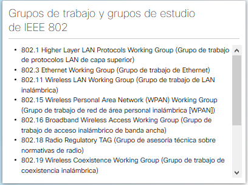
Asociación de Industrias Electrónicas (EIA): es conocida principalmente por sus estándares relacionados con el cableado eléctrico, los conectores y los racks de 19 in que
se utilizan para montar equipos de red.
Asociación de las Industrias de las Telecomunicaciones (TIA): es responsable de desarrollar estándares de comunicación en diversas áreas, entre las que se incluyen equipos
de radio, torres de telefonía móvil, dispositivos de voz sobre IP (VoIP), comunicaciones satelitales y más. En la figura, se muestra un ejemplo de un cable Ethernet que
cumple los estándares de TIA/EIA.
 Sector de Normalización de las Telecomunicaciones de la Unión Internacional de Telecomunicaciones (UIT-T): es uno de los organismos de estandarización de comunicación más
grandes y más antiguos. El UIT-T define estándares para la compresión de vídeos, televisión de protocolo de Internet (IPTV) y comunicaciones de banda ancha, como la línea
de suscriptor digital (DSL).
Sector de Normalización de las Telecomunicaciones de la Unión Internacional de Telecomunicaciones (UIT-T): es uno de los organismos de estandarización de comunicación más
grandes y más antiguos. El UIT-T define estándares para la compresión de vídeos, televisión de protocolo de Internet (IPTV) y comunicaciones de banda ancha, como la línea
de suscriptor digital (DSL).
Investigación de estándares de redes.
Los beneficios por el uso de un modelo en capas para describir protocolos de red y operaciones incluyen lo siguiente:
El modelo OSI proporciona una amplia lista de funciones y servicios que se pueden presetar en cada capa. También describe la iteracción de cada capa con las capas directamente por encima y por debajo
de él. Los protocolos TCP/IP que se analizan en este curso se estructuran en torno a los modelos OSI y TCP/IP.
La funcionalidad de cada capa y la relación entre ellas será más evidente a medida que avance en el curso y que brinden más acerca de los protocolos.
Nota: Tenga en cuenta que, mientras las capas del modelo TCP/IP se mencionan solo por el nombre, las siete capas del modelo OSI se mencionan con frecuencia por número y no por nombre.
Por ejemplo, la capa física se conoce como capa 1 del modelo OSI.
MODELO OSI.
 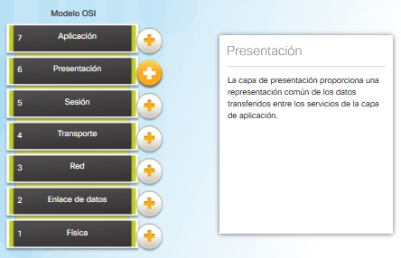
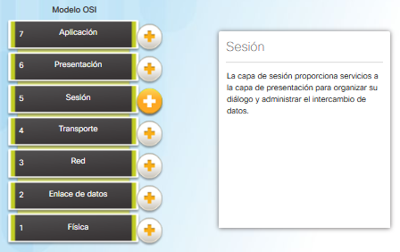
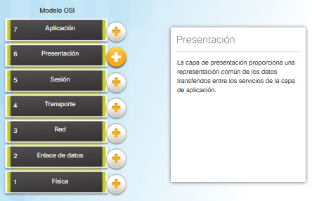
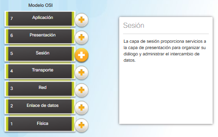
 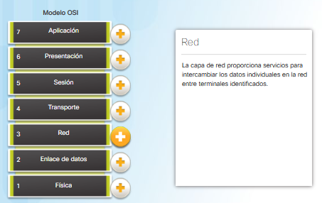
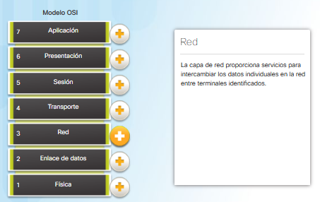


El modelo de protocolo TCP-IP para comunicaciones de internetwork se creó a principios de la década de los setenta y se conoce con el nombre de modelo de Internet. Como se muestra en la figura, define cuatro
categorías de funciones que deben ocurrir para que las comunicaciones se lleven a cabo correctamente. La arquitectura de la suite de protocolos TCP-IP sigue la estructura de este modelo. Por esto, es común que
al modelo de Internet se le conozca como modelo TCP-IP.
La mayoría de los modelos de protocolos describen una pila de protocolos específicos del proveedor. Las suites de protocolo antiguas, como Novell Netware y AppleTalk, son ejemplos de pilas de protocolos específicos
del proveedor. Puesto que el modelo CP-IP es un estándar abierto, una empresa no controla la definición del modelo. Las definiciones del estándar y los protocolos TCP/IP se explican en un foro público y se definen en
un conjunto de documentos de petición de comentarios (RFC) disponibles al público.

Los protocolos que forman la suite de protocolos TCP/IP pueden describirse en términos del modelo de referencia OSI. En el modelo OSI, la capa de acceso a la red y la capa de aplicación del modelo TCP-IP están subdivididas
para describir funciones discretas que deben producirse en estas capas.
En la capa de acceso a la red, la suite de protocolos TCP-IP no especifica cuáles protocolos usar cuando se transmite por un medio físico. Las capas OSI 1 y 2 tratan los procedimientos necesarios para acceder a los medios y
las maneras físicas de enviar datos por la red.
La capa OSI 3, la capa de red, asigna directamente a la capa de Internet TCP-IP. Esta capa se utiliza para describir protocolos que abordan y dirigen mensajes a través de una internetwork.
La capa OSI 4, la capa de transporte, asigna directamente a la capa de transporte TCP-IP. Esta capa describe los servicios y las funciones generales que proporcionan la entrega ordenada y confiable de datos entre los hosts de
origen y de destino.
La capa de aplicación TCP-IP incluye un número de protocolos que proporciona funcionalidad específica a una variedad de aplicaciones de usuario final. Las capas 5, 6 y 7 del modelo OSI se utilizan como referencias para proveedores
y desarrolladores de software de aplicación para fabricar productos que funcionan en redes.
Tanto el modelo TCP/IP como el modelo OSI se utilizan comúnmente en la referencia a protocolos en varias capas. Dado que el modelo OSI separa la capa de enlace de datos de la capa física, se suele utilizar cuando se refiere a esas
capas inferiores.

Parte 1:
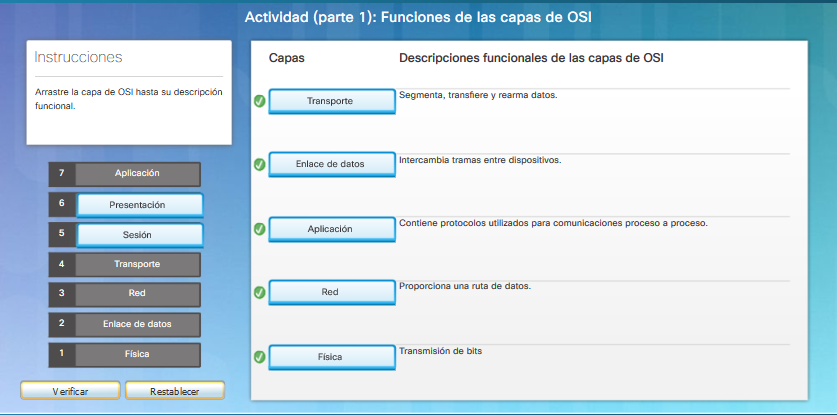
Parte 2:

Modelos TCP-IP Y OSI en accion (pdf)
Investigacion de modelos tcp-ip y osi en accion - PKA
En teoría, una comunicación simple, como un vídeo musical o un correo electrónico puede enviarse a través de la red desde un origen hacia un desino como una transmisión de bits masiva y continua. Si en realidad los mensajes se transmitieron
de esta manera, significará que ningún otro dispositivo podrá enviar o recibir mensajes en la misma red mientras esta transferencia de datos está en progreso. Estas grandes transmisiones de datos originarán retrasos importantes. Además, si falla un enlace
en la infraestructura de la red interconectada durante la transmisión, el mensaje completo se perdería y tendría que retansmitirse completamente.
Un método mejor es dividir los datos en partes más pequeñas y manejables para enviarlas por la red. La división del flujo de datos en partes más pequeñas se denomina segmentación. La segmentación de mensajes tiene dos beneficios principales:


Mientras los datos de la aplicación bajan a la pila del protocolo y transmiten por los medios de la red, se agrega diversa información de protocolos en cada nivel. Esto comúnmente se conoce como proceso de encapsulamiento.
La forma que adopta una porción de datos en cualquier capa se denomina unidad de datos del protocolo-PDU.
Durante el encapsulamiento, cada capa encapsula las PDU que recibe de la capa inferior de acuerdo con el protocolo que se utiliza. En cada etapa del proceso, una PDU tiene un nombre distinto para reflejar sus funciones nuevas. Aunque no existe
una conversión universal de nombres para las PDU, en este curso se denominan de acuerdo con los protocolos de la suite TCP/IP, como se muestra en las imagenes. br


Cuando se envían mensajes en una red, el proceso de encapsulamiento opera desde las capas supeiores hacia las capas inferiores. En cada capa, la información de la capa superior se considera como datos en el protocolo encapsulado. Por ejemplo,m
el segmento TCP se considera como datos en el paquete IP.
Ejemplo del proceso de encapsulamiento cuando un servidor web envía una página web a un cliente web.

Los protocolos que se muestran en la imagen se 'transformarán' en 1's y 0's para ser enviados al cliente web.
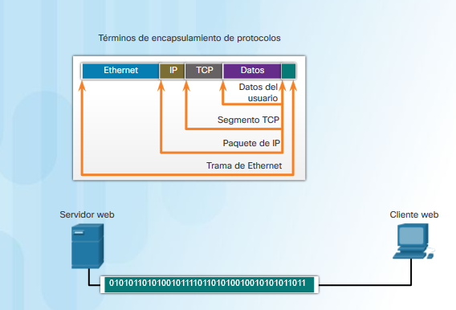
Este proceso se invierte en el host receptor , y se conoce como desencapsulamiento. El desencapsulamiento es el proceso que utilizan los dispositivos receptores para eliminar uno o más de los encabezados de protocolo. Los datos se desencapsulan mientras suben
por la pila hacia la aplicación del usuario final.
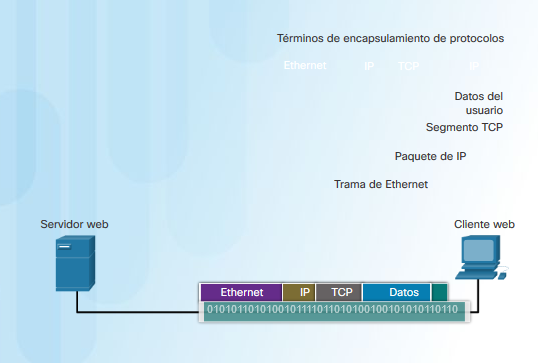


La capa de red y la capa de enlace de datos son responsables de enviar los datos desde el dispositivo de origen o emisor hasta el dispositivo de destino o receptor.
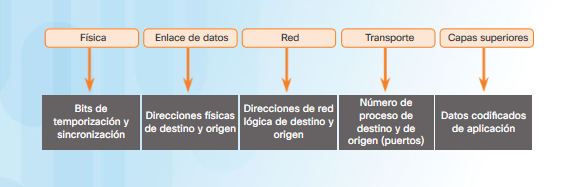
Los protocolos de las dos capas contienen las direcciones de origen y de destino,
pero sus direcciones tienen objetivos distintos.
La dirección física de la capa de enlace de datos, o capa 2, tiene una función distinta. Su propósito es enviar la trama de enlace de datos desde una interfaz de red hasta otra interfaz de red en la misma red. Este proceso se ilustra en las siguientes imagenes.


Antes de que un paquete IP pueda enviarse a través de una red conectadad por cable o inalámbrica, se debe encapsular en una trama de enlace de datos de modo que pueda transmitirse a través del medio físico.
A medida que el paquete IP se mueve de host a router, de router a router y, finalmente, de router a host, es encapsulado en una nueva trama de enlace de datos, en cada punto del recorrido. Cada trama de enlace de datos contiene la dirección de origen de enlace
de datos de la tarjeta NIC que envía la trama y la dirección de destino de enlace de datos de la tarjeta NIC que rcibe la trama.
El protocolo de enlace de datos de capa 2 solo se utiliza para enviar el paquete de NIC a NIC en la misma red. El router elimina la información de la capa 2 a medida que una NIC la recibe y agrega nueva información de enlace de datos antes de reenviarla a la NIC de
salida en su recorrido hacia el dispositivo de destino final.
El paquete IP se encapsula en una trama de enlace de datos que contiene información de enlace de datos, como la siguiente:
Para comprender la forma en que los dispositivos se comunican en la red, es importante entender las funciones de las direcciones de la capa de red y de las direcciones del enlace de datos.
Función de las direcciones de la capa de red.
Las direccionesd de la capa de red, o direcciones IP, indican el origen y el destino final. Un paquete IP contiene dos partes:

Sin embargo, ¿cuáles son las funciones de la dirección de la capa de red y de la direcciñon de la capa de enlace de datos cuando un dispositivo se comunica con un otro en una red remota? En este ejemplo, tenemos un equipo cliente, PC1, que se comunica
con un servidor, en este caso un servidor web, en una red IP diferente.
Función de las direcciones de la capa de red
Cuando el emisor del paquete se encuentra en una red distinta de la del receptor, las direcciones IP de origen y de destino representan los hots en redes diferentes. Esto lo indica la porción de red de la dirección IP del host de destino.

Las redes de datos son sistemas de terminales, dispositivos intermedios y medios que conectan los dispositivos intermediarios y medios que conectan los dispositivos. Para que produzca la comunicación,
los dispositivos deben saber cómo comunicarse.
Estos dispositivos deben cumplir con reglas y protocolos de comunicación. TCP/IP es un ejemplo de una suite de protocolos. La mayoría de los protocolos son creados para organizaciones de estandarización,
como el IETF o el IEEE. El Instituto de Ingenieros de Electricidad y Electrónica es una organización prfesional para las personas que trabajan en los campos de la electrónica y de la Ingeniería eléctrica.
La ISO, Organización internacional de Normalización, es el mayor desarrollador del mundo de estándares internacionales para una amplia variedad de protocolos y servicios.
Los modelos de lred más ampliamente utilizados son OSI y TCP/IP. Asociar los protocolos que establecen las reglas de las comunicaciones de datos con las distintas capas es de gran utilidad para determinar qué
dispositivos y servicios se aplican en puntos especificos mientras los datos pasan a través de las redes LAN y WAN.
Los datos que pasan por la pila del modelo OSI se segmentan en partes y se encapsulan con direcciones y otras etiquetas. El proceso se revierte a medida que las partes se desencapsulan y pasan hacia la pila del
protocolo de destino. El modelo OSI describe los procesos de codificación, formateo, segmentación y encapsulamiento de datos para transmitir por la red.
La suite de protocolos TCP/IP es un protocolo de estándar abierto que recibió el aval del sector de redes y fue ratificado, o aprobado, por una organización de estandarización. La suite de protocolos de Internet es
una suite de protocolos necesaria para trsnmitir y recibir información mediante internet.
Las unidades de datos del protocolo (PDU) se denominan según los protocolos de la suite TCP/IP: datos, segmento, paquete, trama y bits.
La aplicación de los modelos permite a las distintas personas, empresas y asociaciones comerciales analizar las redes actuales y planificar las redes del futuro.
Para dar soporte a nuestras comunicaciones, el modelo OSI divide las funciones de una red de datos en capas. Cada capa trabaja con las capas superior e inferior para transmitir datos. Dos capas dentro
del modelo OSI están tan relacionadas que, según el modelO TCP/IP, son básicamente una sola. Esas dos capas son la capa de enlace de datos y la capa física.
En el dispositivo emirso, la función de la capa de enlace de datos es preparar los datos para la transmisión y controlar la forma en que estos acceden a los medios físicos. Sin embargo, la capa física controla
cómo se transmiten los datos a los medios físicos mediante la codificación en señales de los dígitos binarios que representan los datos.
En el extremo receptor, la capa física recibe señales a través de los medios de conexión. Después de decodificar la señal u convertirla nuevamente en datos, la capa física transmite la trama a la capa de enlace de datos para
su aceptación y procesamiento.
En este capítulo, se comienza con las funciones generales de la capa física y los estándares y protcolos que administran la transmisión de datos a través de los medios locales. También se presentan las funciones de la capa de enlace
de datos y los protocolos asociados a esta.
Administración de las instrucciones del medio.
Ya sea una conexión a una imrpesora local en el hogar o a un sitio web en otro país, para que se pueda producir cualquier comunicación de red se debe establecer antes una comunicación a una red local.
Una conexión física puede ser una conexión por cable o una conexión inalámbrica mediante ondas de radio.
El tipo de conexión física usada depende por completo de la configuración de la red. Por ejemplo, en muchas oficinas corportivas, los empleados tienen PC de escritorio o protátiles que se conectan físicamente,
mediante cables, a un switch compartido. Este tipo de configuración se denomina de red cableada.
Los datosse transmiten a través de un cable físico.
Además de las conexiones por cable, muchas empresas también ofrecen conexiones inalámbricas para PC portátiles, tablets y smatphones. En el caso de los dispositivos inalámbricos, los datos se transmiten mediante ondas de
radio. A medida que las personas y las empresas descubren las ventajas de ofrecer servicios inalámbricos, el uso de la conectividad inalámbrica es cadea vez más frecuente. Para ofrecer funciones inalámbricas, los dispositivos
que se encuentran en una red inalámbrica deben estar conectados a un punto de acceso inalámbrico (AP).
Los dispositivos de switch y los puntos de acceso inalámbricos suelen ser dos dispositivos independientes y dedicados dentro de una implementación de red. Sin embargo, también hay dispositivos que ofrecen tanto conectividad por cable
como inalámbrica. En muchos hogares, por ejemplo, las personas implentan routers de servicio integrado (ISR) domésticos, cómo se muestra en la imagen inferior.

Los ISR proporcionan un componente de conmuntación con varios puertos, lo
que permite conectar varios dispositivos a la red de área local (LAN) con cables, como se muestra en la figura. Además, muchos ISR incluyen un AP, que permite que también se conecten dispositivos inalámbricos.
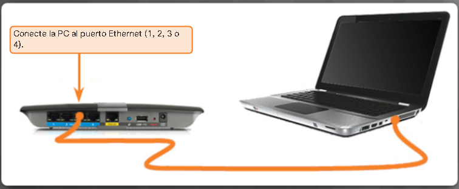
Las tarjetas de interfax de red (NIC) conectan un dispositivo a la red. Las NIC Ethernet se utilizan para conexiones por cable, como se muestra en la figura.
Mientras que las NIC de red de área local inalámbrica (WLAN) se utilizan para las conexiones inalámbricas. Los dispositivos para usuarios finales pueden incluir un tipo de NIC o ambos. Una impresiora de red, por ejemplo, puede contar solo con una NIC Ethernet y, por lo tanto,
se deben conectar a la red mediante un cable Ethernet. Otros dispositivos, como las tabletas y los teléfonos inteligentes, pueden contener solo una NIC WLAN y deben utilizar una conexión inalámbrica.
En términos de rendimiento, no todas las conexiones físicas son iguales a la hora de conectarse a una red.
Por ejemplo, un dispositivo inalámbrico experimentará una merma en el rendimiento según la distancia a la que se encuentre del punto de acceso inalámbrico. Cuanto más alejado del punto de acceso esté el
dispositivo, más débil será la señal inal.ambrica que reciba . Esto puede significar menor ancho de banda o la ausencia absoluta de una conexión inalámbrica. En la figura inferior, se muestra que se puede usar un extensor de
alcance inalámbrico para regenerar la señal inalámbrica en partes de la casa que esten demasiado alejadas del punto de acceso inalámbrico. De lo contrario, una conexión por cable no provocará mermas en el rendimiento.
Todos los dispositivos inalámbricos deben compartir el acceso a las ondas aéreas que se conectan al punto de acceso inalámbrico. Esto siginifica que el rendimiento de la red puede ser más lento a medida que mñas dispositivos
inalámbricos acceden a la red simultáneamente. Los dispositivos conectados por cable no necesitan compartir el acceso a la red con otros dispositivos. Cada dispositivo conectado por cable tiene un canal de comunicación independiente
a través de su propio cable Ethernet. Esto es imposible cuando se tiene en cuenta algunas aplicaciones, como juegos en línea, transmisión de video y confenrencias de vídeo, que requieren más ancho de banda dedicado que otras aplicaciones.
Al analizar los siguientes temas, aprenderá más sobre las conexiones de capa física que se producen y la forma en que esas conexiones afectan el transporte de datos.
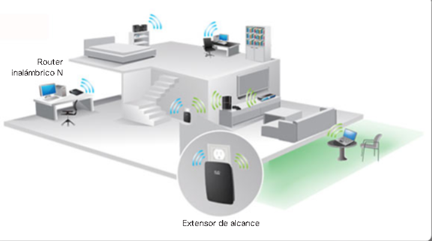
La capa física de OSI proporciona los medios de transporte de los bits que conforman una trama de la capa de enlace de datos a través de los medios de red. Esta capa acepta una trama completa desde la capa de enlace de datos y la codifica como se
secuencia de señales que se transmiten en los medios locales. Un dispositivo final o un dispositivo intermediario recibe los bits codificados que componen una trama.
El proceso por el que pasan los datos desde un node de origen hasta un nodo de destino es el siguiente:
Existen tres formatos básicos de medios de red. La capa física produce la representación y las agrupaciones de bits para cada tipo de medio de la siguiente manera:

Los protocolos y las operaciones de las capas OSI superiores se llevan a cabo en software iseñado por ingenieros en software e informáticos. El grupo de trabajo de ingeniería de Internet (IETF) define los servicios y
protocolos del conjunto TCP/IP.
La capa física consta de circuitos electrónicos, medios y conectores desarrollados por ingenieros. Por lo tanto, es necesario que las principales organizaciones especializadas en ingeniería eléctrica y en comunicaciones definan los
estándares que rigen este hardware.
Existen muchas organizaciones internacionales y nacionales, organizaciones de regulación ubernamentales y empresas privadas que intervienen en el establecimient y mantenimiento de los estándares de la capa física. Por ejemplo, los
siguientes organismos definen y rigen los estándares de hardware, medios, codificaciones y señalización de la capa física.

Identificación de dispositivos y cables de red.
Los estándares de la capa física abarcan tres áreas funcionales:


Los diferentes medios físicos admiten la transferencia de bits a distintas velocidades. Por lo general, la transferencia de datos se analiza en términos de ancho de banda y rendimiento.
El ancho de banda es la capacidad de un medio para transportar datos. El ancho de banda digital mide la cantidad de datos que pueden fluir desde un lugar hacia otro en un período de tiempo determinado. El ancho de banda generalmente se miden en kilobits por segundo (kbps),
megabits por segundo (Mbps) o gigabits
Los diferentes medios físicos admiten la transferencia de bits a distintas velocidades. Por lo general, la tranferencia de datos se analiza en términos de ancho de banda y rendimiento.
El ancho de banda es la capacidad de un medio de transportar datos. El ancho de banda digital mide la cantidad de datos que pueden fluir desde un lugar hacia otro en un período de tiempo determinado.
El ancho de banda generalmente se miden en kilobits por segundo (kbps), megabits por segundo (Mbps) o gigabits por segundo (Gbps). En ocasiones, el ancho de banda se piensa como la velocidad a la que viajan los bits, sin embargo, esto no es adecuado. Por ejemplo, en Ethernet de 10 Mbps y
de 100 Mbps, los bits se envían a la velocidad de la electricidad. La diferencia es el número de bits que se transmiten por segundo.
Una combinación de factores determina el ancho de banda práctico de una red:

El rendimiento es la medida de transferencia de bits a través de los medios durante un período de tiempo determinado.
Debido a diferentes factores, el rendimiento generalmnete no coincide con el ancho de banda especificado en las implementaciones de la capa física. Muchos factores influyen en el rendimiento, incluidos los siguientes:

Esta capa física produce la representación y agrupación de bits en voltajes, radiofrecuencia e impulsos de luz. Muchas organizaciones que establecen estándares han contribuido con la definición de las propiedades mecánicas, eléctricas y físicas de los medios disponibles para diferentes
comunicaciones de datos. Estas especificaciones garantizan que los cables y los conectores funcionen según lo previsto mediante diferentes implementaciones de la capa de enlace de datos.
Por ejemplo, los estándares para los medios de cobre se definen según lo siguiente:

Las redes utilizan medios de cobre porque son económicos y fáciles de instalar, y tienen baja resistencia a la corriente eléctrica. Sin embargo, los medios
de cobre se ven limitados por la distancia y la interferencia de señales.
Los datos se transmiten en cables de cobre como impulsos eléctricos. Un detector en la interfaz de red de un dispositivo de destino debe recibir na señal que pueda decodificarse exitosamente para que coincida con la señal
enviada. No obstante, cuanto más lejos viaja una señal, más se deteriora. Esto se denomina atenuación de señal. Por este motivo, todos los medios de cobre deben seguir limitaciones de distancia estrictas según lo especifican los estándares que lo rigen.
Los valores de temporización y voltaje de los pulsos eléctricos también son vulnerables a las interferencias de dos fuentes:

Existen tres tipos principales de medios de cobre que se utilizan en las redes:
El cableado de par trenzado no blindado (UTP) es el medio de red más común. El cableado UTP, que se termina con conectores RJ-45, se utiliza para interconectar host de red con
dispositivos intermediarios de red, como switches y routers.
En las redes LAN, el cable UTP consta de cuatro pares de hilos codificados por colores que están trenzados entre sí y recubiertos con un revestimiento de plástico flexible que los
protege contra daños físicos menores. El trenzado de los hilos ayuda a proteger contra las interferencias de señales de otros hilos.
Como se muestra en la figura, los códigos por colores identifican los pares individuales con sus alambres y sirven de ayuda para la terminación de cables.

El par trenzado blindado (STP) proporciona una mejor protección contra ruido que el cableado UTP. Sin embargo, en comparación con el cable UTP, el cable STP es mucho más costoso y difícil de instalar.
Al igual que el cable UTP, el STP utiliza un conector RJ-45.
El cable STP combina las técnicas de blindaje para contrarrestar la EMI y la RFI, y el trenzado de hilos para contrarrestar el crosstalk. Para obtener los máximos beneficios del blindaje, los cables STP
se terminan con conectores de datos STP blindados especiales. Si el cable no se conecta a tierra correctamente, el blindaje puede actuar como antena y captar señales no deseadas.
El cable STP que se muestra usa cuatro pares de hilos. Cada uno de estos pares está empaquetado primero con un blindaje de hoja metálica y, luego, el conjunto se empaqueta con una malla tejida o una hoja
metálica.

El cable coaxial obtiene su nombre del hecho de que hay dos conductores que cpmparten el mismo eje. Como se muestra en la figura, el cable coaxial consta de la siguiente:

Los tres tipos de medios de cobre son vulnerables a peligros eléctricos y de incendio.
El peligro de incendio existe porque el revestimiento y el aislamiento de los cables puede ser inflamable o producir emanaciones tóxicas cuando se calientan o se queman. Las organizaciones o autoridades edilicias pueden estipular estándares de seguridad relacionadas para las instalaciones de hardware y cableado.
Los peligros eléctricos son un problema potencial, dado que los hilos de cobre podrían conducir electricidad en formas no deseadas. Esto puede exponer al personal y el equipo a una variedad de peligros eléctricos. Por ejemplo, un dispositivo de red defectuoso podría conducir corriente al chasis de otros dispositivos de red. Además, el cableado de red podría representar
niveles de voltaje no deseados cuando se utiliza para conectar dispositivos que incluyen fuentes de energía con diferentes potenciales de conexión a tierra. Estos casos son posibles cuando el cableado de cobre se utiliza para conectar redes en diferentes edificios o pisos que utilizan distintas instalaciones de energía. Finalmente, el cableado de
cobre puede conducir los voltajes provocados por descargas eléctricas a los distintos dispositivos de red.
Como consecuencia, las corrientes y los coltajes no deseados pueden generar un daño a los dispositivos de red y a las PC's conectadas. o bien provocar lesiones al personal. Para prevenir situaciones potencialmente peligrosas y perjudiciales, es importante instalar correctamente el cableado de cobre según las especificaciones relevantes y los códigos de edificación.

Cuando se utiliza como medio de red, el cableado de par trenzado no blindado (UTP) consta de cuatro pares de hilos codificados por colores que están trenzaados entre sí y recubiertos con un revestimiento de plástico flexible. Su tamaño pequeño puede ser una ventaja durante la instalación
Los cables UTP no utilizan blindaje para contrarrestar los efectos de la EMI y pa RFI. En cambio, los diseñadores de cables descubrieron que pueden limitar el efecto negativo del crosstalk por medio de los métodos siguientes:

El cableado UTP cumple con los estándares establecidos en conjunto por la TIA/EIA. En particular, la TIA/EIA-568 estipula los estándares comerciales de cableado para las instalaciones LAN y es el estándar de mayor uso en entornos de cableado LAN. Algunos de los elementos definidos son:


Los cables YTP generalmente se terminan con un conector RJ-45. Este conector se utiliza para una variedad de de especificaciones de capa física, una de las cuales es Ethernet. El estándar TIA/IEA-568 describe las asignaciones de los códigos por colores de los hilos a la asignación de pines (diagrama de pines) de los cables Ethernet.
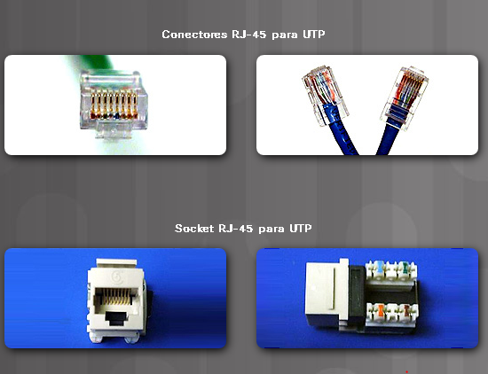
Como se muestra en la figura, el conector RJ-45 es el componente macho que está engarzado en el extremo del cable. El socket es el componente hembra en un dispositivo de red, una pared, una toma en el tabique divisorio de un cubiculo o un panel de conexiones.
Cada vez que se realiza la terminación de un cableado de cobre, existe la posibilidad de que se pierda la señal y de que se genere ruido en el circuito de comunicación. Cuando se realizan las terminaciones de manera incorrecta, cada cable representa una posible fuente de degradación del rendimiento de la capa física. Es fundamental que
todas las terminaciones de medios de cobre sean de calidad superior para garantizar un funcionamiento óptimo con tecnologías de red actuales y futuras.
En la figura, se muestra un ejemplo de un cable UTP mal terminado y un cable UTP bien terminado.
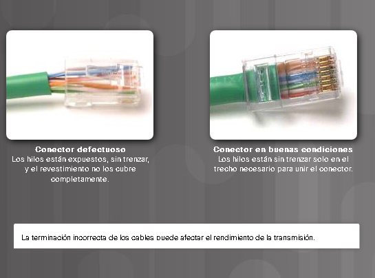
Según las diferentes situaciones, es posible que los cables UTP necesiten armarse según las diferentes convenciones para los cableados. Esto significa que los alambres individuales del cable deben conectarase en diferente orden para distintos grupos de pins en los conectores RJ-45.
A continuación se mencionan los principales tipos de cables que se obtienen al utilizar convenciones especificas de cableado:
después de la instalación, se debe utilizar un comprobador de cables UTP, como el que se muestra en la figura, para probar los siguientes parámetros:

Armado de un cable cruzado Ethernet.
Transmite de datos a través de distancias más extensas y a anchos de banda mayores que cualquier otro medio de red. A diferencia de los cables de cobre, el cable de fibra óptica puede transmitir señales con
menos atenuación y es totalmente inmune a las EMI y RFI. El cable de fibra óptica se utiliza para interconectar dispositivos de red.
La fibra óptica es un hilo flexible, pero extremadamente delgado y transparente de vidrio muy puro, no mucho más grueso que un cabello humano. Los bits se codifican en la fibra como impulsos de luz. El cable de fibra óptica actúa
como una guía de ondas, o una "tibería de luz", para transmitir la luz entre los dos extremos con una pérdida mínima de la señal.
A modo de analogía, imagine un rollo de toallas de papel vacío que tiene en el interior recubierto con material reflectante. Este rollo mide mil metros de largo y tiene un pequeño puntero láser que se utiliza para enviar señales
de Código Morse a la velocidad de la luz. Básicamente, así cómo funciona un cable de fibra óptica, excepto que tiene un diámetro más pequeño y utiliza tecnologías de emisión y recepción de luz sofisticadas.

En la actualidad, el cableado de fibra óptica se utiliza en cuatro tipos de industrias:
La fibra óptica se compone de dos tipos de vidrio (núcle y revestimiento) y un blindaje exterior de protección (revestimiento).

Los pulsos de luz que representan los datos transmitidos en forma de bits en los medios son generados por uno de los siguientes:


El extremo de una fibra óptica se termina con un conector de fibra óptica. Existe una variedad de conectores de fibra óptica. Las diferencias principales entre los tipos de conectores son las dimensiones y métodos de acoplamiento. Las empresas deciden qué tipos de conectores utilizan según sus equipos.
Se requieren dos fibras para realizar una opearación full duplex ya que la luz sólo puede viajar en una dirección a través de la fibra óptica. En consecuencia, los cables de conexión de fibra óptica forman un haz de dos cables de fibra óptica, y su terminación incluye un par de conectores de fibra monomodo
estándar.
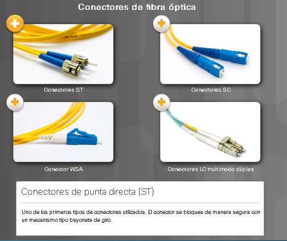
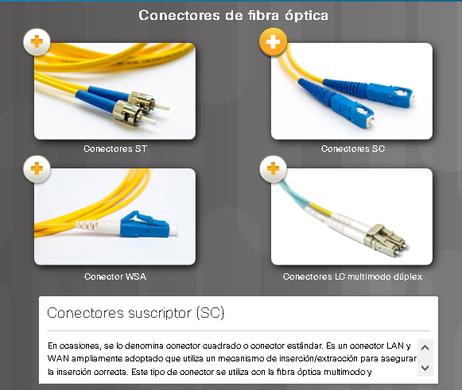
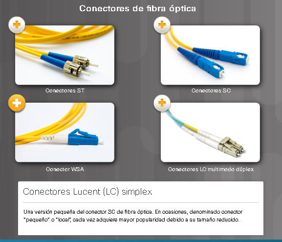
Algunos conectores de fibra óptica aceptan las fibras de transmisión y recepción en un único conector, conocido como "conector dúplex", como se muestra en el conector LC multimodo dúplex en la figura.

La terminación y el empalme del cableado de fibra óptica requieren equipo y capacitación especiales. La terminación incorrecta de los medios de fobra óptica produce una disminución en las distancias de señalización o una falla total en la transmisión.
Tres tipos comúnes de errores de empalme y terminación de fibra óptica son:

La utilización de cables de fibra óptica ofrece muchas ventajas en comparación con cables de cobre. En la figura, se destacan algunas de estas diferencias.

Debido a que las fibras de vidrio que se utilizan en los medios de fibra óptica no son conductores eléctricos, el medio es inmune a la interferencia electromagnética y no conduce corriente eléctrica no deseada cuando existe un problema de conexión a tierra. Las fibras ópticas son finas, tienen una pérdida de señal
relativamente baja y pueden utilizarse en longitudes mucho mayores que los medios de cobre. Algunas especificaciones de la capa física de fibra óptica admiten longitudes que pueden alcanzar varios kilómetros.
En la actualidad, en la mayor parte de los entornos empresariales se utiliza principalmente la fibra óptica como cableado troncal para conexiones punto a punto con una gran cantidad de tráfico entre los servicios de distribución de datos y para la interconexión de los edificios en el caso de los campus compuestos por
varios edificios. Ya que la fibra óptica no conduce electricidad y presenta una p`´erdida de señal baja, es ideal para estos usos.

Los medios inalámbricos transportan señales electromagnéticas que representan los dígitos binarios de las comunicaciones de datos mediante frecuencias de radio y de microondas.
Los medios inalámbricos proporcionan las mejores opciones de movilidad de todos los medios y la cantidad de dispositivos habilitados para tecnología inalámbrica sigue en aumento. A medida que aumentan las opciones de ancho de banda de red, la tecnología inalámbrica adquiere popularidad rápidamente en las redes empresariales.
En la figura, se destacan varios símbolos relacionados con la tecnología inalámbrica.
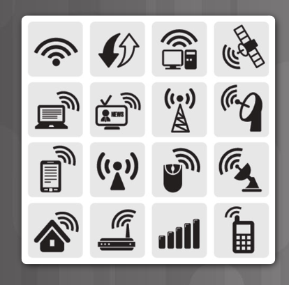
Existen algunas áreas de importancia para la tecnología inalámbrica, que incluyen las siguientes:
Los estándares de IEEE y del sector de las telecomunicaciones sobre las comuncaciones inalámbricas de datos abarcan las capas física y de enlace de datos.


Una implementación común de tecnología inalámbrica de datos permite a los dispositivos conectarse en forma inalámbrica a través de una LAN. En generalm una LAN inalámbrica requiere los siguientes dispositivos de red.
Instrucciones para conexión LAN por cable y LAN inalámbrica.
Conexión de una LAN por cable y una LAN inalámbrica, PKA.
Visualización de información de tarjeta NIC cableada e inalámbrica.
La capa de enlace de datos del modelo OSI (Capa 2), como se muestra en la figura 1, es responsable de lo siguiente:

La capa de enlace de datos se divide en dos subcapas:
Los protocolos de la Capa 2 especifican la encapsulamiento de un paquete en una trama y las técnicas para colocar y sacar el paquete encapsulado de cada medio. La técnica utilizada para colocar y sacar la trama de los medios
se llama método de control de acceso al medio.
A medida que los paquetes se transfiere del host de origen al host de destino, generalmente deben atravesar diferentes redes físicas. Estas redes físicas pueden constar de diferentes tipos de medios físicos, como cables de cobre,
fibra óptica y tecnología inalámbrica compuesta por señales electromagnéticas, frecuencias de radio y microondas, y enlaces satelitales.
Sin la capa de enlace de datos, un protocolo de capa de red, tal como IP, tendría que tomar medidas para conectarse con todos los tipos de medios que pudieran existir a lo largo de la ruta de envío. Más aún, IP debería adaptarse cada vez
que se desarrolle una nueva tecnología de red o medio. Este proceso dificultaría la innovación y desarrollo de protocolos y medios de red. Este es un motivo clave para usar un método en capas en interconexión de redes.
Durante una misma comunicación, pueden ser necesarios distintos métodos distintos métodos de control de acceso al medio. Cada entorno de red que los paquetes encuentran cuando viajan desde un host local hasta un host remoto puede tener características
diferentes. Por ejemplo, una LAN Ethernet consta de muchos hosts que compiten por acceder al medio de red. Los enlaces seriales constan de una conexión directa entre dos dispositivos únicamente.
Las interfaces del router encapsulan el paquete en la trama correspondiente, y se utiliza un método de control de accesp al medio adecuado para acceder a cada enlace. En cualquier intercambio de paquetes de capas de red, puede haber muchas transiciones
de medios y capa de enlace de datos.
En cada salto a lo largo de la ruta, los routers realizan lo siguiente:
A diferencia de los protocolos de las capas superiores del conjunto TCP/IP, los protocolos de capa de enlace de datos generalmente no están definidos por la petición de comentarios (RFC). A pesar de que el Grupo de trabajo de ingeniería de Internet (IETF)
mantiene los protocolos y servicios funcionales para la suite de protocolos TCP/IP en las capas superiores, el IETF no define las funciones ni la operación de esa capa de acceso a la red del modelo.
Las organizaciones de ingeniería que definen estándares y protocolos abiertos que se aplican a la capa de enlace de datos incluyen:
La regulación de la ubicación de las tramas de datos en los medios se encuentra bajo el control de la subcapa de control de acceso al medio.
El control de acceso a los medios es el equivalente a las reglas de tráfico que regulan la entrada de vehículos a una autopista. La ausencia de un control de acceso a los medios sería el equivalente a vehículos que ignoran el resto del tráfico e ingresan al
camino sin tener en cuenta a los otros vehículos. Sin embargo, no todos los caminos y entradas son iguales. El tráfico puede ingresar a un camino confluyendo, esperando su turno en una señal de parada o respetando el semáforo. Un conductor sigue un conjunto
de reglas diferente para cada tipo de entrada.
De la misma manera, hay diferentes métodos para regular la colocación de tramas en los medios. Los protocolos en la capa de enlace de datos definen las reglas de acceso a los diferentes medios. Estas técnicas de control de acceso a los medios definen si los
nodos comparten los medios y de qué manera lo hacen.
El método real de control de acceso al medio utilizado depende de lo siguiente:
La topología de una red es la configuración o relación de los dispositivos de red y las interconexiones entre ellos. Las topologías LAN y WAN se pueden ver de dos maneras:


Por lo general, las WAN se interconectan mediante las siguientes topologías físicas:

Las topologías físicas punto a punto conectan dos nodos directamente, como se muestra en la figura.

En esta disposición, los dos nodos no tienen que compartir los medios con otros hosts. Además, un nodo no tiene que determinar si una trama entrante está destinada a él o a otro nodo. Por lo tanto, los protocolos de enlace de datos lógicos pueden ser muy simples, dado que todas las tramas en los
medios y el nodo en el otro extremo las saca de los medios del circuito punto a punto.
Los nodos de los extremos que se comunican en una red punto a punto pueden estar conectados físicamente a través de una cantidad de dispositivos intermediarios. Sin embargo, el uso de dispositivos físicos en la red no afecta la topología lógica.
Como se muestra en la figura, los nodos de origen y destino pueden estar conectados indirectamente entre sí a través de una distancia geográfica. En algunos casos, la conexión lógica entre nodos forma lo que se llama un circuito virtual. Un circuito
virtual es una conexión lógica creada dentro de una red entre dos dispositivos de red. Los dos nodos en cada extremo del circuito virtual intercambian las tramas entre sí. Esto ocurre incluso si las tramas están dirigidas a través de dispositivos intermediarios,
como se muestra en la figura 2. Los circuitos virtuales son construcciones de comunicación lógicas utilizadas por algunas tecnologías de la Capa 2.
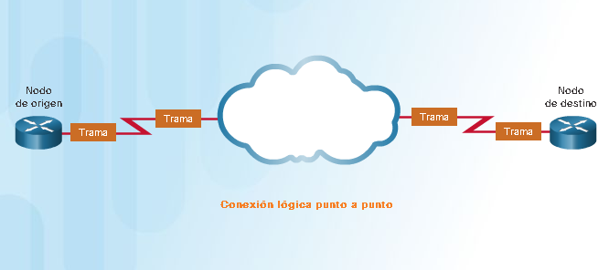
El método de acceso al medio utilizado por el protocolo de enlace de datos se determina por la topología lógica punto a punto, no la topología física. Esto significa que la conexión lógica de punto a punto entre dos nodos puede no ser necesariamente entre dos nodos físicos en cada extremo de un enlace físico único.

La topología física define cómo se interconectan físicamente los sistemas finales. En las redes LAN de medios compartidos, los terminales se pueden interconectar mediante las siguientes topologías físicas:

Las comunicaciones dúplex refieren a la dirección en la que se transmiten los datos entre dos dispositivos. Las comunicaciones half-duplex limitan el intercambio de datos a una dirección a la vez, mientras que el dúplex completo permite el envío y recepción de datos simultáneo.


Algunas topologías de red comparten un medio común con varios nodos. Estas se denominan redes de acceso múltiple. Las LAN Ethernet y WLAN son un ejemplo de una red de accesos múltiples. En cualquier momento puede haber una cantidad de dispositivos que intentan enviar y recibir datos utilizando los mismos medios de red.
Algunas redes de acceso múltiple requieren reglas que rijan la forma de compartir los medios físicos. Hay dos métodos básicos de control de acceso al medio para medios compartidos:

Las redes WLAN, LAN Ethernet con concentradores y las redes de bus Ethernet antiguas son todos ejemplos de redes de acceso por contención. Todas estas redes funcionan en el modo half-duplex. Esto requiere un proceso para gestionar cuándo puede enviar un dispositivo y qué sucede cuando múltiples dispositivos envían al mismo tiempo.
En las redes LAN Ethernet de half-duplex se utiliza el proceso de acceso múltiple por detección de portadora y detección de colisiones (CSMA/CD). En la Figura 1 se muestra una red LAN Ethernet que utiliza un concentrador. El proceso de CSMA es el siguiente:
1. La PC1 tiene una trama que se debe enviar a la PC3.
2. La NIC de la PC1 debe determinar si alguien está transmitiendo en el medio. Si no detecta un proveedor de señal, en otras palabras, si no recibe transmisiones de otro dispositivo, asumirá que la red está disponible para enviar.
3. La NIC de la PC1 envía la trama de Ethernet, como se muestra en la figura 1:

4. El directorio externo recibe la trama. Un directorio externo también se conoce como repetidor de múltiples puertos. Todos los bits que se reciben de un puerto entrante se regeneran y envían a todos los demás puertos, como se indica en la figura 2.

5. Si otro dispositivo, como una PC2, quiere transmitir, pero está recibiendo una trama, deberá aguardar hasta que el canal esté libre.
6. Todos los dispositivos que están conectados al concentrador reciben la trama. Dado que la trama tiene una dirección destino de enlace de datos para la PC3, solo ese dispositivo aceptará y copiará toda la trama. Las NIC de todos los demás dispositivos ignorarán la trama, como se muestra en la figura 3.

Si dos dispositivos transmiten al mismo tiempo, se produce una colisión. Los dos dispositivos detectarán la colisión en la red, es decir, la detección de colisión (CD). Esto se logra mediante la comparación de los datos transmitidos con los datos recibidos que realiza la NIC o bien mediante el reconocimiento de la amplitud de señal
si esta es más alta de lo normal en los medios. Los datos enviados por ambos dispositivos se dañarán y deberán enviarse nuevamente.
Otra forma de CSM que utilizan las redes WLAN del IEEE 802.11 es el acceso múltiple por detección de portadora con prevención de colisiones (CSMA/CA). CSMA/CA utiliza un método similar a CSMA/CD para detectar si el medio está libre. CSMA/CA también utiliza técnicas adicionales. CSMA/CA no detecta colisiones pero intenta evitarlas ya
que aguarda antes de transmitir. Cada dispositivo que transmite incluye la duración que necesita para la transmisión. Todos los demás dispositivos inalámbricos reciben esta información y saben por cuanto tiempo el medio no estará disponible, como se muestra en la figura. Luego de que un dispositivos inalámbricos envía una trama 802.11,
el receptor devuelve un acuso de recibo para que el emisor sepa que se recibió la trama.
Ya sea que es una red LAN Ethernet con concentradores o una red WLAN, los sistemas por contención no escalan bien bajo un uso intensivo de los medios. Es importante tener en cuenta que las redes LAN Ethernet con switches no utilizan sistemas por contención porque el switch y la NIC de host operan en el modo de dúplex completo.

La capa de enlace de datos prepara los paquetes para su transporte a través de los medios locales encapsulándolos con un encabezado y un tráiler para crear una trama. La descripción de una trama es un elemento clave de cada protocolo de capa de enlace de datos. Si bien existen muchos protocolos de capa de enlace de datos diferentes que describen las tramas de la capa de enlace de datos, cada tipo de trama tiene tres partes básicas:
El tramado rompe la transmisión en agrupaciones descifrables, con la información de control insertada en el encabezado y tráiler como valores en campos diferentes. Este formato brinda a las señales físicas una estructura que pueden recibir los nodos y que se puede decodificar en paquetes en el destino.
Como se muestra en la figura, los tipos de campos de trama genéricos incluyen lo siguiente:


La capa de enlace de datos proporciona direccionamiento que es utilizado para transportar una trama a través de los medios locales compartidos. Las direcciones de dispositivo en esta capa se llaman direcciones físicas.
El direccionamiento de la capa de enlace de datos está contenido en el encabezado de la trama y especifica el nodo de destino de la trama en la red local. El encabezado de la trama también puede contener la dirección de origen
de la trama.
A diferencia de las direcciones lógicas de la Capa 3, que son jerárquicas, las direcciones físicas no indican en qué red está ubicado el dispositivo. En cambio, la dirección física es única para un dispositivo en particular. Si el dispositivo se traslada a otra red o subred, sigue funcionando con la misma dirección física de la Capa 2.
Las figuras 1 a 3 muestran la función de las direcciones de la capa 2 y capa 3. A medida que el paquete IP se mueve de host a router, de router a router y, finalmente, de router a host, es encapsulado en una nueva trama de enlace de datos, en cada punto del recorrido. Cada trama de enlace de datos contiene la dirección de origen de enlace
de datos de la tarjeta NIC que envía la trama y la dirección de destino de enlace de datos de la tarjeta NIC que recibe la trama.


En una red TCP/IP, todos los protocolos de capa 2 del modelo OSI funcionan con la dirección IP en la capa 3. Sin embargo, el protocolo de capa 2 específico que se utilice depende de la topología lógica y de los medios físicos.
Cada protocolo realiza el control de acceso a los medios para las topologías lógicas de Capa 2 que se especifican. Esto significa que una cantidad de diferentes dispositivos de red puede actuar como nodos que operan en la capa de enlace de datos al implementar estos protocolos. Estos dispositivos incluyen las tarjetas de interfaz de red en PC,
así como las interfaces en routers y en switches de la Capa 2.
El protocolo de la Capa 2 que se utiliza para una topología de red particular está determinado por la tecnología utilizada para implementar esa topología. La tecnología está, a su vez, determinada por el tamaño de la red, en términos de cantidad de hosts y alcance geográfico y los servicios que se proveerán a través de la red.
En general, las redes LAN utilizan una tecnología de ancho de banda elevado que es capaz de admitir una gran cantidad de hosts. El área geográfica relativamente pequeña de una LAN (un único edificio o un campus de varios edificios) y su alta densidad de usuarios hacen que esta tecnología sea rentable.
Sin embargo, utilizar una tecnología de ancho de banda alto no es generalmente rentable para redes de área extensa que cubren grandes áreas geográficas (varias ciudades, por ejemplo). El costo de los enlaces físicos de larga distancia y la tecnología utilizada para transportar las señales a través de esas distancias, generalmente, ocasiona una
menor capacidad de ancho de banda.
La diferencia de ancho de banda normalmente produce el uso de diferentes protocolos para las LAN y las WAN.
Los protocolos de la capa de enlace de datos incluyen:
 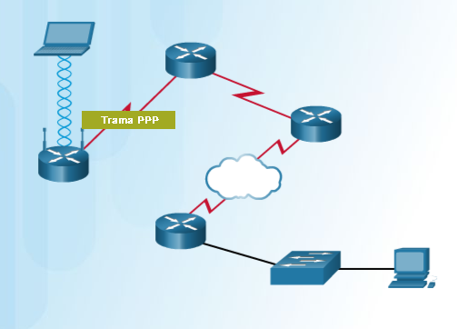
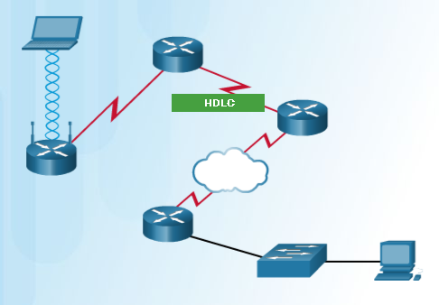
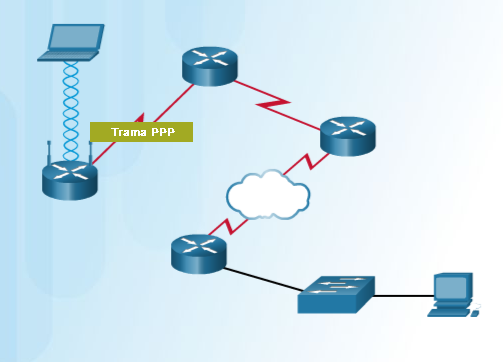
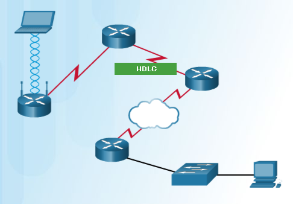
 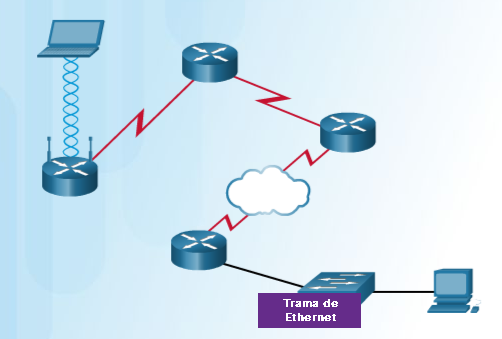
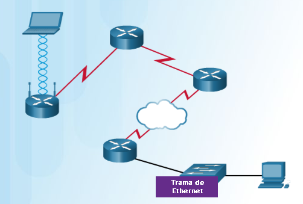
La capa de acceso a la red de TCP/IP equivale a la capa de enlace de datos (capa 2) y a la capa física (capa 1) del modelo OSI.
La capa física de OSI proporciona los medios de transporte de los bits que conforman una trama de la capa de enlace de datos a través de los medios de red. Los componentes físicos son los dispositivos
electrónicos de hardware, medios y conectores que transmiten y transportan las señales para representar los bits. Todos los componentes de hardware, como adaptadores de red (NIC), interfaces y conectores,
materiales y diseño de los cables, se especifican en los estándares asociados con la capa física. Los estándares de la capa física abordan tres áreas funcionales: los componentes físicos, la técnica de codificación
de la trama y el método de señalización.
El uso de los medios adecuados es una parte importante de las comunicaciones de red. Sin la conexión física adecuada, ya sea por cable o inalámbrica, no se produce comunicación entre dispositivos.
La comunicación por cable consta de medios de cobre y cable de fibra óptica.
La capa física de interconexión de sistemas abiertos (OSI) proporciona el medio para transportar los bits que componen una trama de capa de enlace de datos a través de los medios de red.
Ethernet es la tecnología LAN predominante en el mundo. Ethernet funciona en la capa de enlace de datos y en la capa física. Los estándares del protocolo Ethernet definen muchos aspectos de la comunicación en red, incluido el formato, el tamaño, la temporización y la codificación de las tramas.
Cuando se envían mensajes entre hosts a través de una red Ethernet, los hosts asignan un formato a los mensajes según la configuración de trama que especifican los estándares.
Como Ethernet está compuesto de estándares en estas capas inferiores, se puede comprender mejor si se hace referencia al modelo OSI. El modelo OSI separa las funcionalidades de direccionamiento, entramado y acceso a los medios de la capa de enlace de datos de los estándares de medios de la capa
física. Los estándares de Ethernet definen los protocolos de capa 2 y las tecnologías de capa 1. Si bien las especificaciones de Ethernet admiten diferentes medios, anchos de banda y otras variaciones de capa 1 y capa 2, el formato de trama básico y el esquema de direcciones son los mismos para
todas las variedades de Ethernet.
En este capítulo, se analizan las características y el funcionamiento de Ethernet en cuanto a su evolución desde una tecnología de medios compartidos de comunicación de datos basada en contienda hasta convertirse en la actual tecnología de dúplex completo de gran ancho de banda.
Actividad de clase: Únete a mi circulo social (instrucciones).
Ethernet es la tecnología LAN más utilizada hoy en día.
Ethernet funciona en la capa de enlace de datos y en la capa física. Es una familia de tecnologías de red que se definen en los estándares IEEE 802.2 y 802.3. Ethernet admite los siguientes anchos de banda de datos:


Como se muestra en la ilustración, la subcapa MAC de Ethernet tiene dos tareas principales:

Desde la creación de Ethernet en 1973, los estándares evolucionaron para especificar versiones más rápidas y flexibles de la tecnología. Esta capacidad de Ethernet de mejorar con el tiempo es una de las
principales razones por las que su uso está tan difundido. Las primeras versiones de Ethernet eran relativamente lentas, con una velocidad de 10 Mbps, mientras que las más recientes funcionan a 10 Gbps e,
incluso, más rápido. Desplácese por la cronología de la figura 1 para ver las diferentes versiones de Ethernet.
En la capa de enlace de datos, la estructura de la trama es casi idéntica para todas las velocidades de Ethernet. La estructura de la trama de Ethernet agrega encabezados y tráilers alrededor de la PDU de
capa 3 para encapsular el mensaje que se envía, como se muestra en la figura 2.
El tamaño mínimo de trama de Ethernet es de 64 bytes, y el máximo es de 1518 bytes. Esto incluye todos los bytes del
campo “Dirección MAC de destino” hasta el campo “Secuencia de verificación de trama (FCS)” inclusive. El campo “Preámbulo”
no se incluye al describir el tamaño de una trama.
Cualquier trama de menos de 64 bytes de longitud se considera un fragmento de colisión o una trama corta, y es descartada
automáticamente por las estaciones receptoras. Las tramas de más de 1500 bytes de datos se consideran “jumbos” o tramas bebés gigantes.
Si el tamaño de una trama transmitida es menor que el mínimo o mayor que el máximo, el dispositivo receptor descarta la trama.
Es posible que las tramas descartadas se originen en colisiones u otras señales no deseadas y, por lo tanto, se consideran no válidas.
En la ilustración, haga clic en cada campo de la trama de Ethernet para leer más acerca de su función.
 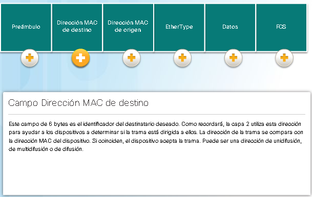
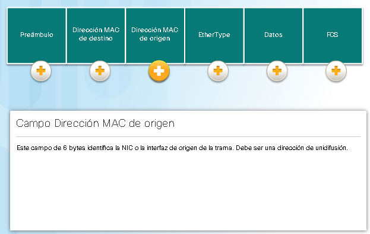
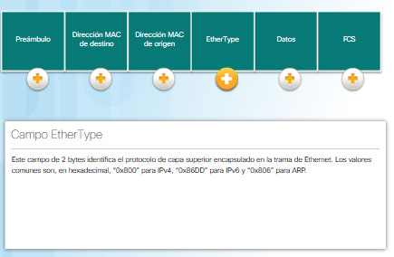
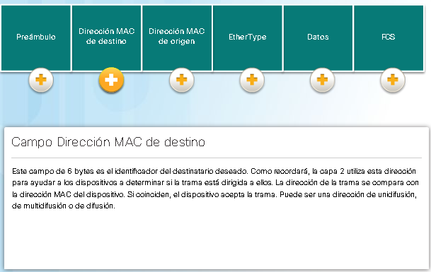
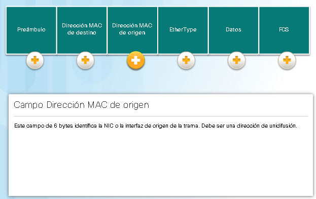
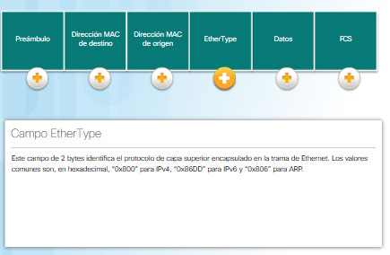
 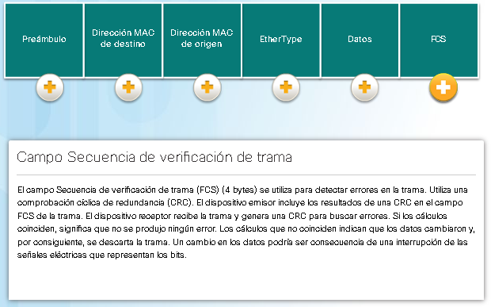
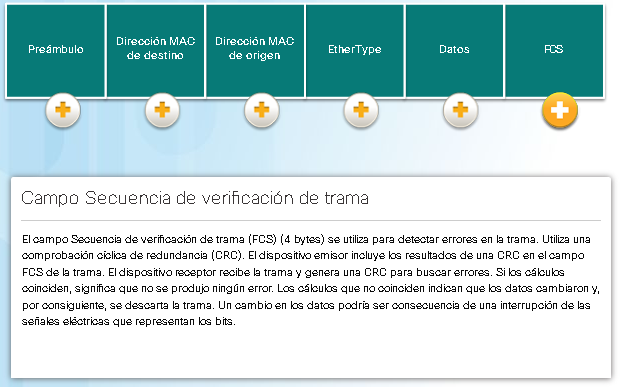


Uso de Wireshark para examinar las tramas de Ethernet.
Una dirección MAC de Ethernet es un valor binario de 48 bits expresado como 12 dígitos hexadecimales (4 bits por dígito hexadecimal).
Así como el sistema decimal es un sistema numérico de base 10, el sistema hexadecimal es un sistema de base 16. El sistema numérico de base 16 utiliza los número del 0 al 9 y las letras de la A a la F.
En la figura 1, se muestran los valores decimales y hexadecimales equivalentes para los números binarios del 0000 al 1111. Es más fácil expresar un valor como un único dígito hexadecimal que como cuatro
bits binarios.
Dado que 8 bits (1 byte) es un método de agrupación binaria común, los números binarios del 00000000 al 11111111 se pueden representar en hexadecimal como el rango del 00 al FF, como se muestra en la figura 2.
Los ceros iniciales se muestran siempre para completar la representación de 8 bits. Por ejemplo, el valor binario “0000 1010” se muestra en hexadecimal como “0A”.
Nota: es importante distinguir los valores hexadecimales de los valores decimales con respecto a los caracteres del 0 al 9, como se muestra en la ilustración.
Representación de valores hexadecimales
Generalmente, el sistema hexadecimal se representa por escrito por medio del valor precedido por “0x” (por ejemplo, “0x73”) o de un subíndice 16. En ocasiones menos frecuentes, puede estar seguido por una H (por ejemplo, “73H”).
Sin embargo, y debido a que el texto en subíndice no se reconoce en entornos de línea de comandos o de programación, la representación técnica de un valor hexadecimal es precedida por “0x” (cero X). Por lo tanto, los ejemplos
anteriores deberían mostrarse como “0x0A” y “0x73”, respectivamente.
El valor hexadecimal se utiliza para representar las direcciones MAC de Ethernet y las direcciones IP versión 6.
Conversiones hexadecimales
Las conversiones numéricas entre valores decimales y hexadecimales son simples, pero no siempre es conveniente dividir o multiplicar por 16. Si es necesario realizar dichas conversiones, generalmente, es más fácil convertir el valor
decimal o hexadecimal a un valor binario y, a continuación, convertir ese valor binario a un valor decimal o hexadecimal, según corresponda.
En Ethernet, cada dispositivo de red está conectado al mismo medio compartido. En el pasado, Ethernet era, en mayor medida, una topología de dúplex medio que utilizaba un bus de acceso múltiple o, más recientemente, hubs Ethernet.
Es decir que todos los nodos recibían cada trama transmitida. Para evitar la sobrecarga excesiva que implicaba el procesamiento de cada trama, se crearon las direcciones MAC a fin de identificar el origen y el destino reales. El
direccionamiento MAC proporciona un método de identificación de dispositivos en el nivel inferior del modelo OSI. Aunque actualmente Ethernet utiliza NIC y switches de dúplex completo, todavía es posible que un dispositivo que no
es el destino deseado reciba una trama de Ethernet.
Estructura de la dirección MAC.
El valor de la dirección MAC es el resultado directo de las normas implementadas por el IEEE para proveedores con el objetivo de garantizar direcciones únicas para cada dispositivo Ethernet. Las normas establecidas por el IEEE obligan
a los proveedores de dispositivos Ethernet a registrarse en el IEEE. El IEEE asigna al proveedor un código de 3 bytes (24 bits), llamado “identificador único de organización (OUI)”.
El IEEE requiere que un proveedor siga dos sencillas reglas, como se muestra en la ilustración:

A menudo, la dirección MAC se conoce como “dirección física (BIA)” porque, históricamente, esta dirección se graba de manera física en la memoria de solo lectura (ROM) de la NIC. Es decir que la dirección está codificada en el chip de la ROM de manera permanente.
Nota: en las NIC y los sistemas operativos de PC modernos, es posible cambiar la dirección MAC en el software. Esto es útil cuando se intenta acceder a una red filtrada por BIA. En consecuencia, el filtrado o el control de tráfico basado en la dirección MAC ya no son tan seguros.
Cuando la computadora arranca, lo primero que hace la NIC es copiar la dirección MAC de la ROM a la RAM. Cuando un dispositivo reenvía un mensaje a una red Ethernet, adjunta la información del encabezado a la trama. La información del encabezado contiene las direcciones MAC de origen y de destino.
En la animación, haga clic en Reproducir para ver el proceso de reenvío de tramas. Cuando una NIC recibe una trama de Ethernet, examina la dirección MAC de destino para ver si coincide con la dirección MAC física del dispositivo almacenada en la RAM. Si no hay coincidencia, el dispositivo descarta la
trama. Si hay coincidencia, envía la trama a las capas OSI, donde ocurre el proceso de desencapsulamiento.
Nota: las NIC Ethernet también aceptan tramas si la dirección MAC de destino es un grupo de difusión o de multidifusión del cual es miembro el host.
Cualquier dispositivo que pueda ser el origen o el destino de una trama de Ethernet debe tener asignada una dirección MAC. Esto incluye estaciones de trabajo, servidores, impresoras, dispositivos móviles y routers.
En un host de Windows, se puede utiluzar el comando ipconfig /all para identificar la dirección MAC de un adaptador Ethernet. En la figura siguiente, observe que se indica en la pantalla que la dirección física (MAC) de la computadora. En un host MAC o Linux, se usa el comando ifconfig

Según el dispositivo y el sistema operativo, puede ver varias representaciones de direcciones MAC, como se muestra en la figura inferior. Los routers y switches Cisco usan el formato XXXX.XXXX.XXXX, en el que 'X' es un carácter hexadecimal.

En Ethernet, se utilizan diferentes MAC para las comunicaciones de unidifusión, difusión y multidifusión de capa 2.
Una dirección MAC de unidifusión es la dirección única utilizada cuando se envía una trama desde un único dispositivo transmisor hacia un único dispositivo receptor.
En el ejemplo de la animacón, un host con la dirección IPv4 192.168.1.5 (origen) solicita una página web del servidor en la dirección IPv4 de unidifusión 192.168.1.200. Para que un paquete de unidifusión se envíe y se reciba, la dirección IP de destino debe estar incluida en el encabezamiento del paquete IP.
Además, el encabezamiento de la tra,a de Ethernet también debe contener una dirección MAC de destino correspondiente. Las direcciones IP y MAC se combinan para la distribución de datos a un host de destino específico.
El proceso que un host de origen utiliza para determinar la dirección MAC de destino se conoce como "protocolo de resolución de direcciones (ARP)". El ARP se analiza más adelante en este capítulo.
Aunque la dirección MAC de destino puede ser una dirección de unidifusión, difusión o multidifusión, la dirección MAC de origen siempre debe ser de unidifusión.
Los paquetes de difusión tienen una dirección IPv4 de destino que contiene solo números uno (1) en la porción de host. Esta numeración en la dirección significa que todos los hosts de esa red local (dominio de difusión) recibirán y procesarán el paquete. Muchos protocolos de red, como DHCP y ARP, utilizan la difusión.
Como se muestra en la animación, el host de origen envía un paquete de difusión IPv4 a todos los dispositivos de la red. La dirección IPv4 de destino es una dirección de difusión: 192.168.1.255. Cuando el paquete de difusión IPv4 se encapsula en la trama de Ethernet, la dirección MAC de destino es la dirección MAC de difusión
FF-FF-FF-FF-FF-FF en hexadecimal (48 números uno en binario).
Las direcciones de multidifusión le permiten a un dispositivo de origen enviar un paquete a un grupo de dispositivos. Una dirección IP de grupo de multidifusión se asigna a los dispositivos que pertenecen a un grupo de multidifusión. El intervalo de direcciones IPv4 de multidifusión va de 224.0.0.0 a 239.255.255.255.
El rango de direcciones de multidifusión IPv6 comienza con FF00::/8. Debido a que las direcciones de multidifusión representan un grupo de direcciones (a veces denominado “grupo de hosts”), solo se pueden utilizar como el destino de un paquete. El origen siempre tiene una dirección de unidifusión.
Las direcciones de multidifusión se pueden usar en juegos remotos, donde muchos jugadores se conectan de manera remota para jugar al mismo juego. Otro uso de las direcciones de multidifusión es el aprendizaje a distancia mediante videoconferencias, donde muchos alumnos están conectados a la misma clase.
Al igual que con las direcciones de unidifusión y de difusión, la dirección IP de multidifusión requiere una dirección MAC de multidifusión correspondiente para poder enviar tramas en una red local. La dirección de multidifusión MAC relacionada con una dirección de multidifusión IPv4 es un valor especial que comienza
con 01-00-5E en formato hexadecimal. La porción restante de la dirección MAC de multidifusión se crea convirtiendo en seis caracteres hexadecimales los 23 bits inferiores de la dirección IP del grupo de multidifusión. Para una dirección IPv6, la dirección de multidifusión MAC comienza con 33-33.
Un ejemplo, como se muestra en la animación, es la dirección hexadecimal de multidifusión 01-00-5E-00-00-C8. El último byte (u 8 bits) de la dirección IPv4 224.0.0.200 es el valor decimal 200. La forma más fácil de ver el equivalente hexadecimal es convertirlo en binario con un espacio cada 4 bits: 200 (decimal) = 1100 1000 (binario).
Con la tabla de conversión que se presentó antes, podemos convertirlo en hexadecimal: 1100 1000 (binario) = 0xC8 (hexadecimal).
Visualización de direcciones MAC de dispositivos de red.
Un switch Ethernet de capa 2 utiliza direcciones MAC para tomar decisiones de reenvio. Desconoce por completo qué protocolo se transmite en la porción de datos de la trama, como un paquete IPv4. El switch toma decisiones de reenvio solamente según las direcciones MAC Ethernet de capa 2.
A diferencia de los hubs Ethernet antiguos, que repiten los bits por todos lo spuertos excepto el de entrada, un switch Ethernet consulta una tabla de direcciones MAC para tomar una decisión de reenvío para cada trama. En la ilustración, se acaba de encender el switch de cuatro puertos. Todavía no conoce las direcciones MAC de las cuatro
PC conectadas.
NOTA: a veces, la tabla de direcciones AMC se conoce como "tabla de memoria de contenido direccionable (CAM)". Aunque el término "tabla CAM" es bastante común, en este curso nos referiremos a ella como "tabla de direcciones MAC".

El switch arma la tabla de direcciones MAC de manera dinámica después de examinar la dirección MAC de origen de las tramas recibidas en un puerto. El switch reenvía las tramas después de buscar una coincidencia entre la dirección MAC de destino de la trama y una entrada de la tabla de direcciones MAC. El siguiente proceso se realiza para cada trama de Ethernet que ingresa a un switch. Aprendizaje: Examinar la dirección MAC de origen Se revisa cada trama que ingresa a un switch para obtener información nueva. Esto se realiza examinando la dirección MAC de origen de la trama y el número de puerto por el que ingresó al switch.

A medida que un switch recibe tramas de diferentes dispositivos, puede completar la tabla de direcciones MAC examinando la dirección MAC de cada trama. Cuando la tabla de direcciones MAC del switch contiene la dirección MAC de destino, puede filtrar la trama y reenviarla por un solo puerto.
En las figuras 1 y 2, se muestra la PC-D enviando una trama de regreso a la PC-A. En primer lugar, el switch obtiene la dirección MAC de la PC-D. A continuación, como la dirección MAC de la PC-A está en la tabla del switch, este envía la trama solamente por el puerto 1.
En la figura 3, se muestra la PC-A enviando otra trama a la PC-D. La tabla de direcciones MAC ya contiene la dirección MAC de la PC-A, por lo que se restablece el temporizador de actualización para esa entrada. A continuación, como la dirección MAC de la PC-D está en la tabla del switch, este envía la trama solamente por el puerto 4.
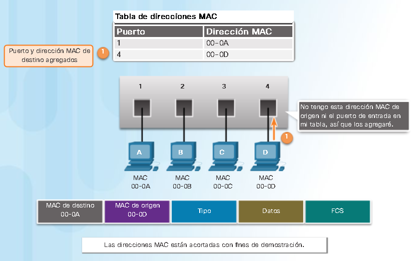
Un switch puede tener muchas direcciones MAC asociadas a un solo puerto. Esto es común cuando el switch está conectado a otro switch. El switch tiene una entrada independiente en la tabla de direcciones MAC para cada trama recibida con una dirección MAC de origen diferente.
En la ilustración, haga clic en Reproducir para ver una demostración de cómo dos switches conectados arman tablas de direcciones MAC.
Cuando un dispositivo tiene una dirección IP ubicada en una red remota, la trama de Ethernet no se puede enviar directamente al dispositivo de destino. En cambio, la trama de Ethernet se envía a la dirección MAC del gateway predeterminado: el router.
En la ilustración, haga clic en Reproducir para ver una demostración de cómo la PC-A se comunica con el gateway predeterminado.
Nota: en el vídeo, el paquete IP que se envía de la PC-A al destino en una red remota tiene como dirección IP de origen la de la PC-A y como dirección IP de destino, la del host remoto. El paquete IP de retorno tiene la dirección IP de origen del host remoto, y la dirección IP de destino es la de la PC A.

Uso de la CLI de IOS con las tablas de direcciones MAC del switch.
Los switches utilizan uno de los siguientes métodos de reenvío para el switching de datos entre puertos de la red:
En este tipo de switching, el switch actúa sobre los datos apenas los recibe, incluso si la transmisión aún no se completó. El switch reúne en el búfer solo la información suficiente de la trama como para leer la dirección MAC de destino y determinar a qué puerto debe reenviar los datos. La dirección MAC de destino se encuentra en los primeros 6 bytes de la trama después del preámbulo. El switch busca la dirección MAC de destino en la tabla de switching, determina el puerto de la interfaz de salida y reenvía la trama a su destino mediante el puerto de switch designado. El switch no lleva a cabo ninguna verificación de errores en la trama. Reproduzca la animación para ver una demostración del proceso switching por método de corte. A continuación, se presentan dos variantes del switching por método de corte:
Un switch Ethernet puede usar una técnica de almacenamiento en búfer para almacenar tramas antes de enviarlas. El almacenamiento en búfer también se puede utilizar cuando el puerto de destino está ocupado debido a una congestión. En este caso, el switch almacena la trama hasta que se pueda transmitir.
Como se muestra en la ilustración, existen dos métodos de almacenamiento en búfer de memoria: memoria basada en puerto y memoria compartida.

Dos de los parámetros más básicos de un switch son el ancho de banda y los parámetros de dúplex para cada puerto de switch individual. Es fundamental que los parámetros de dúplex y de ancho de banda coincidan entre el puerto de switch y los dispositivos conectados, como una computadora u otro switch. Existen dos tipos de parámetros de dúplex utilizados para las comunicaciones en una red Ethernet: dúplex medio y dúplex completo.

Además de tener la configuración de dúplex correcta, también es necesario tener definido el tipo de cable correcto para cada puerto. Anteriormente, las conexiones entre dispositivos específicos, como switch a switch, switch a router, switch a host y router a host, requerían el uso de tipos de cable específicos (cruzado o directo). En la actualidad, la mayoría de los dispositivos de switch permiten que el comando mdix auto interface configuration en la CLI active la función de interfaz cruzada dependiente del medio (MDIX) automática.
Cuando se activa la función de MDIX automática, el switch detecta el tipo de cable conectado al puerto y configura las interfaces de manera adecuada. Por lo tanto, se puede utilizar un cable directo o cruzado para realizar la conexión con un puerto 10/100/1000 de cobre situado en el switch, independientemente del tipo de dispositivo que esté en el otro extremo de la conexión.
Nota: de manera predeterminada, la función MDIX automática se activa en los switches con el software Cisco IOS versión 12.2(18)SE o posterior.

Hay dos direcciones primarias asignadas a un dispositivo en una LAN Ethernet:
Cuando la dirección IP de destino está en una red remota, la dirección MAC de destino es la dirección del gateway predeterminado del host (la NIC del router) como se muestra en la ilustración. Si utilizamos una analogía de correo postal, esto sería similar a cuando una persona lleva una carta a la oficina postal local. Todo lo que debe hacer es llevar la carta a la oficina postal. A partir de ese momento, se vuelve responsabilidad de la oficina postal reenviar la carta al destino final.
En la ilustración, se muestran las direcciones MAC Ethernet y las direcciones IPv4 de la PC-A enviando un paquete IP al servidor web en una red remota. Los routers examinan la dirección IPv4 de destino para determinar la mejor ruta para reenviar el paquete IPv4. Esto es similar a la manera en que el servicio postal reenvía el correo según la dirección del destinatario.
Cuando el router recibe una trama de Ethernet, desencapsula la información de capa 2. Por medio de la dirección IP de destino, determina el dispositivo del siguiente salto y desencapsula el paquete IP en una nueva trama de enlace de datos para la interfaz de salida. Junto con cada enlace en una ruta, se encapsula un paquete IP en una trama específica para la tecnología de enlace de datos particular relacionada con ese enlace, como Ethernet. Si el dispositivo del siguiente salto es el destino final, la dirección MAC de destino es la de la NIC Ethernet del dispositivo.
¿Cómo se asocian las direcciones IPv4 de los paquetes IPv4 en un flujo de datos con las direcciones MAC en cada enlace a lo largo de la ruta hacia el destino? Esto se realiza mediante un proceso llamado “protocolo de resolución de direcciones (ARP)”.
Identificación de direcciones MAC e IP (Instrucciones).
Packet_Tracer.pka
Recuerde que cada dispositivo que tiene una dirección IP en una red Ethernet también tiene una dirección MAC Ethernet. Cuando un dispositivo envía una trama de Ethernet, esta contiene estas dos direcciones.

Cuando se envia un paquete a la capa de enlace de datos para encapsularlo en una trama de Ethernet, el dispositivo consulta una tabla en su memoria para encontrar la dirección MAC que está asignada a la dirección IPv4.
Esta tabla se denomina "tabla ARP" o "caché ARP". La tabla ARP se almacena en la RAM del dispositivo.
El dispositivo emisor busca en su tabla ARP la dirección IPv4 de destino y la dirección MAC correspondiente.
Una solicitud de ARP se envía cuando un dispositivo necesita asociar una dirección MAC a una dirección IPv4 y no tiene una entrada para la dirección IPv4 en su tabla ARP.
Los mensajes de ARP se encapsulan directamente dentro de una trama de Ethernet. No se utiliza un encabezamiento de IPv4. El mensaje de solicitud de ARP incluye lo siguiente.
Solamente el dispositivo que tiene la dirección IPv4 asociada con la dirección IPv4 objetivo de la solicitud de ARP envía una respuesta de ARP. El mensaje de respuesta de ARP incluye lo siguiente.
Cuando la dirección IPv4 de destino no está en la misma red que la dirección IPv4 de origen, el dispositivo de origen debe enviar la trama al gateway predeterminado, es decir, a la interfaz del router local. Cuando un dispositivo de origen tiene un paquete con una
dirección IPv4 de otra red, lo encapsula en una trama con la dirección MAC de destino del router.
La dirección IPv4 de la dirección del gateway predeterminado se almacena en la configuración IPv4 de los hosts. Cuando un host crea un paquete para un destino, compara la dirección IPv4 de destino con la propia para determinar si ambas están ubicadas en la misma red
de capa 3. Si el host de destino no estña en la misma red, el origen busca en la tabla ARP una entrada que contenga la dirección IPv4 del gateway predeterminado. Si no existe una entrada, utilizada el proceso ARP para determinar la dirección MAC del gateway predeterminado.
Para cada dispositivo, un temporizador de memoria caché ARP elimina las entradas de ARP que no se hayan utilizado durante un período especificado. El temporizador varía según el sistema operativo del dispositivo. Por ejemplo, algunos sistemas operativos Windows almacenan entradas
de ARP en la memoria caché durante dos minutos, como se muestra en la ilustración.
También se pueden utilizar comandos para eliminar de manera manual todas las entradas de la tabla ARP o algunas de ellas. Después de eliminar una entrada, el proceso de envío de una solicitud de ARP y de recepción de una respuesta de ARP debe ocurrir nuevamente para que se introduzca
la asignación en la tabla ARP.

En un router Cisco, se utiliza el comando show ip arp para visualizar la tabla ARP, como se muestra en la figura.
En una PC con Windows 7, se usa el comando arp -a visualizar la tabla ARP, como se muestra en la figura.

Revisión de la tabla ARP.
Revisión de la tabla ARP (PKA)
Todos los dispositivos de la red local reciben y procesan una solicitud de ARP debido a que es una trama de difusión. En una red comenrcial típica, estas difusiones tendrían, probablemente, un efecto mínimo en el rendimiento de la red. Sin embargo, si se encendiera una gran cantidad de dispositivos
que comenzaran a acceder a los servicios de red al mismo tiempo, el rendimiento podría disminuir durante un breve período, como se muestra en la ilustración. Después de que los dispositivos envían las difusiones ARP iniciales y obtienen las direcciones MAC necesarias, se minimiza cualquier efecto en la red.

En algunos casos, el uso de ARP puede ocasionar un riesgo de seguridad potencial conocido como “suplantación de ARP” o “envenenamiento ARP”. Esta es una técnica utilizada por un atacante para responder a una solicitud de ARP de una dirección IPv4 que pertenece a otro dispositivo, como el gateway predeterminado,
como se muestra en la ilustración. El atacante envía una respuesta de ARP con su propia dirección MAC. El receptor de la respuesta de ARP agrega la dirección MAC incorrecta a la tabla ARP y envía estos paquetes al atacante.

Los switches de nivel empresarial incluyen técnicas de mitigación conocidas como “inspección dinámica de ARP (DAI)”. La DAI excede el ámbito de este curso.

- ¿En qué aspectos cambiaron los medios físicos y los dispositivos Ethernet intermediarios?
- ¿En qué aspectos se mantuvieron iguales los medios físicos y los dispositivos Ethernet intermediarios?
- ¿Cómo cambiará Ethernet en el futuro?
Ethernet es la tecnología LAN más utilizada hoy en día. Es una familia de tecnologías de red que se definen en los estándares IEEE 802.2 y 802.3. Los estándares de Ethernet definen los protocolos de capa 2 y las tecnologías de capa 1. Para los protocolos de capa 2, como con todos los estándares IEEE 802, Ethernet depende de
ambas subcapas individuales de la capa de enlace de datos para funcionar: la subcapa de control de enlace lógico (LLC) y la subcapa MAC.
En la capa de enlace de datos, la estructura de la trama es casi idéntica para todos los anchos de banda de Ethernet. La estructura de la trama de Ethernet agrega encabezados y tráilers a la PDU de capa 3 para encapsular el mensaje que se envía.
Existen dos estilos de entramado de Ethernet: el estándar Ethernet IEEE 802.3 y el estándar Ethernet DIX, que hoy se conoce como “Ethernet II”. La diferencia más significativa entre ambos estándares es el agregado de un delimitador de inicio de trama (SFD) y el cambio del campo “Tipo” al campo “Longitud” en el estándar 802.3.
Ethernet II es el formato de trama de Ethernet utilizado en las redes TCP/IP. Como implementación de los estándares IEEE 802.2/3, la trama de Ethernet proporciona direccionamiento MAC y verificación de errores.
El direccionamiento de capa 2 proporcionado por Ethernet admite comunicaciones de unidifusión, multidifusión y difusión. Ethernet utiliza el protocolo de resolución de direcciones para determinar las direcciones MAC de los destinos y asignarlas a direcciones IPv4 conocidas.
Cada nodo de una red IPv4 tiene una dirección MAC y una dirección IPv4. Las direcciones IP se utilizan para identificar el origen inicial y el destino final del paquete. Las direcciones MAC Ethernet se utilizan para enviar el paquete de una NIC Ethernet a otra NIC Ethernet en la misma red IP. El ARP se utiliza para asignar una
dirección IPv4 conocida a una dirección MAC, de manera que el paquete se pueda encapsular en una trama de Ethernet con la dirección de capa 2 correcta.
El ARP depende de ciertos tipos de mensajes de difusión y de unidifusión Ethernet, llamados “solicitudes de ARP” y “respuestas de ARP”. El protocolo ARP resuelve las direcciones IPv4 en direcciones MAC y mantiene una tabla de asignaciones.
En la mayoría de las redes Ethernet, generalmente, las terminales están conectadas punto a punto a un switch de dúplex completo de capa 2. Un switch LAN de capa 2 realiza el switching y el filtrado solamente según la dirección MAC de la capa de enlace de datos OSI (capa 2). Un switch de capa 2 arma una tabla de direcciones MAC,
que utiliza para tomar decisiones de reenvío. Los switches de capa 2 dependen de los routers para transferir datos entre subredes IP independientes.
La figura es un gráfico estándar para las páginas de introducción y conclusión.
Las aplicaciones y servicios de red de un terminal se pueden comunican con las aplicaciones y servicios que se ejecutan en otro terminal. ¿Cómo se comunican los datos en la red de manera eficaz? Los protocolos de la capa de red del modelo OSI especifican el direccionamiento y los procesos que permiten que se armen y se transporten los paquetes de datos de la capa de red. El encapsulamiento de capa de red permite que se transfieran los datos a un destino dentro de una red (o a otra red) con una sobrecarga mínima. En este capítulo, nos concentraremos en el rol de la capa de red. Se examina cómo divide las redes en grupos de hosts para administrar el flujo de paquetes de datos dentro de una red. También se explica cómo se facilita la comunicación entre las redes. Esta comunicación entre redes se denomina "routing". La figura es un gráfico estándar para las páginas de introducción y conclusión.
La ruta menos transitada... o las más transitada
Decidió que el próximo fin de semana irá a visitar a un compañero de curso que está en su casa debido a una enfermedad. Usted sabe cuál es su dirección, pero nunca estuvo en ese pueblo antes. En lugar de buscar la dirección en un mapa, decide pedir direcciones a los habitantes del pueblo cuando llegue en el tren.
Los residentes a los que pide ayuda son muy amables. Sin embargo, todos tienen una costumbre interesante. En lugar de explicar por completo el camino que debe tomar para llegar a destino, todos le dicen: “Vaya por esta calle y, en cuanto llegue al cruce más cercano, vuelva a preguntar a alguien allí”.
Confundido por esta situación claramente curiosa, sigue estas instrucciones y finalmente llega a la casa de su compañero pasando cruce por cruce y calle por calle.
Responda las siguientes preguntas:
La capa de red o la capa OSI 3, brinda servicios para permitir que los terminales puedan intercambiar datos en la red. Para lograr el transporte completo, la capa de red utiliza cuatro procesos básicos:
Existen varios protocolos de capa de red. Sin embargo, como se muestra en la ilustración, solo hay dos protocolos de capa de red que suelen implementarse:
Para encapsular el segmento de capa de transporte u otros datos, IP le agrega un encabezado IP. Este encabezado se usa para entregar el paquete al host de destino. El encabezado IP permanece igual desde el momento en que el paquete deja el host de origen hasta que llega al host de destino.
En la figura 1, se muestra el proceso de creación de la PDU de capa de transporte. En la figura 2, se muestra cómo la PDU de capa de red encapsula la PDU de capa de transporte para crear un paquete IP.
El proceso de encapsulamiento de datos capa por capa permite que se desarrollen y se escalen los servicios en las diferentes capas sin afectar a las otras capas. Esto significa que IPv4 o IPv6 o cualquier protocolo nuevo que se desarrolle en el futuro puede armar sin inconvenientes un paquete con los segmentos de capa de transporte.
Los routers pueden implementar diferentes protocolos de capa de red para que funcionen simultáneamente en una red. El routing que realizan estos dispositivos intermediarios solo toma en cuenta el contenido del encabezado de paquetes de la capa de red. En ningún caso, la porción de datos del paquete, es decir, la PDU de capa de transporte encapsulada, se modifica durante los procesos de la capa de red.

IP se diseño como un protocolo con sobrecarga baja. Provee solo las funciones necesarias para enviar un paquete de un origen a un destino a través de un sistema interconectado de redes. El protocolo no fue diseñado para rastrear ni administrar el flujo de paquetes. Estas funciones, si es necesario, están a cargo de otros protocolos en otras capas, principalmente TCP en la capa 4.
En la ilustración, se describen las características básicas de IP.
IP no tiene conexión, lo que significa que no se genere una conexión completa exclusiva antes de enviar los datos. Como se muestra en la figura, la comunicación sin conexión es conecptualmente similar a enviarle una carta a alguien sin avisalrle al receptor con anterioridad.

Las comunicaciones de datos sin conexión funcionan con el mismo principio. Como se muestra en la figura, IP no necesita un intercambio inicial de información de control para establecer una conexión completa para que se reenvíen los paquetes. IP tampoco necesita campos adicionales en el encabezado para mantener una conexión establecida. Este proceso reduce en gran medida la sobrecarga del protocolo IP. Sin embargo, sin una conexión completa preestablecida, los remitentes no saben si los dispositivos de destino están presentes y en
funcionamiento cuando envían paquetes, ni tampoco si el destinatario recibe el paquete o si puede acceder al paquete y leerlo.

En la ilustración, se muestran las características de entrega de mejor esfuerzo o poco confiable del protocolo IP. El protocolo IP no garantiza que todos lo spaquetes que se envían, de hecho, se reciban.
Que sea poco confiable significa que IP no tiene la funcionalidad para administrar o recuperar paquetes no recibidos o dañados. Esto se debe a que, si bien los paquetes IP se envían con información sobre la ubicación de entrega, no tiene informaión que pueda procesarse para informar al remitente si la entrega se realizó correctamente. Es posible que los paquetes lleguen dañados o fuera de secuencia al destino o que no lleguen en absoluto. IP no tiene la funcionalidad de retransmitir paquetes si se producen errores.
Las aplicaciones que utilizan los datos o los servicios de capas superiores deben solcionar problemas como el envñio de paquetes fuera de orden o la pérdida de paquetes. Esta característica permite que IP funcione de manera muy eficaz. En el paquete del protocolo TCP/IP, la confiabilidad es la función de la capa de transporte.
IP funciona independientemente de los medios que transpoortan los datos en las capas más bajas de la pila de protocolos. Como se muestra en la figura, los paquetes IP pueden ser señanles electrónicas que se transmiten por cables de cobre, señales ópticas que se transmite por fibra óptica o señales de radio inalámbricas.
La capa de enlace de datos OSI se encarga de preparar los paquetes IP para la transmisión por el medio de comunicación. Esto significa que el transporte de paquetes IP no está limitado a un medio en particular.
 Sin embargo, la capa de red tiene en cuenta una de las características más importantes del medio, que es el tamaño máximo de PDU que cada medio puede transportar. Esta característica se conoce como "unidad de transmisión máxima" (MTU). Parte del control de la comunicación entre la capa de enlace de datos y la capa de red consiste en establecer el tamaño máximo del paquete. La capa de enlace de datos pasa elvalor de MTU a la capa de red. La capa de red luego determina qué tamaño puede tener los paquetes.
Sin embargo, la capa de red tiene en cuenta una de las características más importantes del medio, que es el tamaño máximo de PDU que cada medio puede transportar. Esta característica se conoce como "unidad de transmisión máxima" (MTU). Parte del control de la comunicación entre la capa de enlace de datos y la capa de red consiste en establecer el tamaño máximo del paquete. La capa de enlace de datos pasa elvalor de MTU a la capa de red. La capa de red luego determina qué tamaño puede tener los paquetes.
En algunos casos, un dispositivo intermediario, que por lo general es un router, debe dividir el paquete cuando se reenvia de un medio a otro con una MTU menor.Este proceso se denomina "fragmentación de paquetes"o "fragmentación".

El encabezamiento de paquetes IPv4 consta de campos que contienen información importante sobre el paquete. Estos campos tienen números binarios que examina el proceso de capa 3. Los valores binarios de cada campo identifican diversos parámetros de configuración del paquete IP. Los diagramas de encabezamiento del protocolo, que se leen de izquierda a derecha y de arriba hacia abajo, proporcionan una representación visual de consulta al analizar los campos del protocolo. El diagrama de encabezado del protocolo IP en la ilustración identifica los campos de un paquete IPv4.
Los campos más importantes del encabezamiento de IPv4 son los siguientes:

A lo largo de los años, IPv4 se actualizó para enfrentar los nuevos desafíos. Sin mebargo, incluso con los cambios, IPv4 aún tiene tres grandes problemas:
A principios de la década de 1990, los problemas con IPv4 preocuparon al Grupo de trabajo de ingeniería de Internet (IETF) que, en consecuencia, comenzó a buscar un reemplazo. Esto tuvo como resultado el desarrollo de IP versión 6 (IPv6). IPv6 supera las limitaciones de IPv4 y representa una mejora importante con características que se adaptan mejor a las demandas de red actuales y previsibles.
Las mejoras de IPv6 incluyen lo siguiente:
Una de las mejoras más improtantes de IPv6 con respecto a IPv4 es el encabezaiento de IPv6.
Por ejemplo, el encabezado de IPv4 que se muestra en la figura consta de 20 octetos(hasta 60 bytes si se usa el campo Opciones) y 12 campos de encabezado básico, sin contar los campos Opciones y Relleno. Como se muestra en la ilustración, IPv6 algunos campos permanecen iguales, mientras que a otros se les cambio el nombre y la posoción, y algunos campos de IPv4 ya no
son necesarios.
En cambio, el encabezado simplicado de IPv6 que se muestra en la figura consta de 40 octetos (principalmente debido a la longitud de las direcciones de IPv6 de origwn y de destino) y 8 campos de encabezado ( 3 campos de encabezado de IPv4 y 5 campos de encabezado adicionales). Como se resalta en la ilustración, algunos campos mantienen el mismo nombre que tenian en IPv4,
a algunos campos se les cambio el nombrre o la posición y se agregó un campo nuevo.

Como se muestra en la figura inferior, el encabezado simplificado de IPv6 ofrece mucash ventajas que el de IPv4.
Los campos del encabezado de paquetes IPV6 incluyen lo siguiente:


Otra función de la capa de red es distingir los paquetes entre hosts. Un host puede enviar un paquete a alguno de los siguientes:
El gateway predeterminado es el dispositivo de red que puede enrutar el tráfico a otras redes. Es el router el que puede enrutar el tráfico fuera de la red local.
Si se piensa en una red como si fuera una habitación, el gateway predeterminado es como la puerta. Si desea ingresar a otra habitación o red, debe encontrar la puerta.
A su vez,una PC o computadora que no conoce la dirección IP del gateway predeterminado es como una persona, en una habitación, que no sabe dónde está la puerta. Las personas en la habitación o la red pueden hablar entre sí, pero si no conocen
la dirección del gateway predeterminado o si esta no existiera,no hay salida.
En la ilustración, se muestra una lista de las funciones del gateway predeterminado.

La tabla de routing de un host incluye, por lo eneral, ungateway predeterminado. El host recibe la dirección IPv4 del gateway predeterminado ya sea de manera dinámica del protocolo DHCP o si se la configura manualmente. En la ilustración, la PC1 y la PC2
están configuradas con la dirección IPv4 del gateway predeterminado 192.168.10.1. La configuración de un gateway predeterminado genera una ruta predeterminada en la tabla de routing de la PC. Una ruta predeterminada es la ruta o camino que la PC usa cuando
intenta conectarse a la red remota.
La ruta predeterminada se desprende de la configuración del gateway predeterminado y se ubica en la tabla de routing del servidor. Tanto la PC1 com la PC2 tendrán una ruta predeterminada para enviar todo el tráfico destinado a las redes remotas al R1.

Para mostrar la tabla de routing de un host de Windows, se puede usar el comando route print o netstat -r.
Ambos comandos generan el mismo resultado. El resultado puede ser un poco abrumador al principio, pero es bastante simple de comprender.
Al introducir el comando netstat -r o su comando equivalente route print, se muestran tres secciones relacionadas con las conexiones de red TCP/IP actuales:
Cuando un host envía un paquete a otro, utiliza su tabla de routing para determinar a dónde enviarlo. SI el host de destino está en una red remota, el paquete se envía al gateway predeterminado.
¿Qué sucede cuando un paquete llega al gateway predeterminado, que es, por lo general, un router? El router observa su tabla de routing para determinar a dónde enviar los paquetes.
La tabla de routing de un router almacena información sobre lo siguiente:

En un router con Cisco IOS, se puede utilizar el comando show ip route para utilizar la tabla de routing IPv4 del router, como se muestra en la ilustración.
Además de proveer información de routing para las redes conectadas directamente y las redes remotas, la tabla de routing tiene información sobre cómo se detectó la ruta, su confiabilidad y puntaje, cuándo fue la última vez que se actualizó y qué interfaz se debe usar para llegar al destino solicitado.
Cuando un paquete llega a la interfaz de router, el router examina el encabezado de paquetes para determinar la red de destino. Si la red de destino tiene una ruta en la tabla de routing, el router envía el paquete usando la información especifica en la tabla de routing. Si existiesen dos o más rutas posibles
para llegar al mismo destino, se usa la métrica para decidir cuál apareec en la tabla de routing.
En la ilustración, se muestra la tabla de routing del R1 que se describe en el diagrama de red.

Cuando se configura una interfaz de router con una dirección IPv4, una máscara de subred y luego se la activa, se generan de manera automática las siguientes dos entradas de tabla de routing.
Un router tiene, por lo general, varias interfaces configuradas. La tabla de routing guarda información sobre las redes conectadas directamente y las remotas.
En la ilustración, se describe la ruta R1 a la red remota 10.1.1.0.
Cuando un paquete destinado a una red llega al router, el router hace coincidir la red de destino con una ruta de la tabla de routing. Si encuentra la coincidencia, el router envía el paquete a la dirección de siguiente salto de la interfaz
identificada.
Consulte la topología de red de ejemplo de figura 1. Suponga que la PC1 o la PC2 enviaron un paquete destinado a la red 10.1.1.0 o 10.1.2.0. Cuando el paquete llegue a la interfaz Gigabit de R1, el R1 compara la dirección IPv4 de destino del paquete con las
entradas de su tabla de routing. La tabla de routing se muestra en la figura 2. Según el contenido de su routing, el R1 envía el paquete por su interfaz serial 0/0/0 a la dirección de siguiente salto 209.165.200.226.
Onserver cómo las redes cpnectadas directamente con un origen de ruta C y L no tienen dirección de siguiente salto. Esto se debe a que un router puede enviar paquetes directamente a los hosts de estas redes con la interfaz designada.
También es importante entender que los routers no pueden enviar paquetes sin una ruta a la red de destino en la tabla de routing. Si una ruta que representa la red de destino no está en la tabla de routing, el paquete se descarta (es decir, no se envía). Sin embargo,
del mismo modo que un host puede usar un gateway predeterminado para reenviar un paquete a un destino desconocido, un router también puede incluir una ruta predeterminada para generar un gateway de último recurso. La ruta predeterminada puede configurarse
manualmente u obtenerse de manera dinámica.


Hay muchos tipos de routers de infraestructura disponibles. De hecho, los routers Cisco están diseñados para satisfacer las necesidades de muchos tipos diferentes de redes y empresas.
Al igual que todas las PC, las tabletas, las consolas de juegos y los dispositivos inteligentes, los dispositivos Cisco necesitan una CPU para ejecutar las instrucciones del SO, como la inicialización del sistema, las funciones de routing y de switching.
El componente resaltado en la ilustración es la CPU de un router Cisco de la serie 1941 con un disipador térmico acoplado. El disipador térmico ayuda a disipar el calor que genera la CPU.
La CPU necesita que un SO le provea las funciones de routing y switching. El sistemaoperativo Internetwork (IOS) de Cisco es el software de sistema que se usa para la mayoría de los dispositivos Cisco sin importar el tamaño y el tipo de dispositivo. Se usa para router, switches LAN,
puntos de acceso inalámbricos pequeños, routers grandes con múltiples interfaces y muchos otros dispositivos.

Un router tiene acceso a un almacenamiento de memoria volátil y no volátil. La memoria necesita enrgía constante para conservar la información. Cuando el router se apaga o se reinicia, el contenido se borra y se pierde. La memoria no volátil retiene la información incluso cuando se reinicia el
dispositivo.
Especificamente, un router Cisco utiliza cuatro tipos de memoria.


Aunque existen diferentes tipos y modelos de routers. todos tienen los mismos componentes generales de hardware.
En la ilustración, se muestra el interior de un ISR Cisco 1841 de primera generación; tambieén se muestran imágenes de otros componentes que se encuentran en un router, como la fuente de alimentación, el ventilador, las pantallas térmicas y un módulo de integración avanzada (AIM), que exceden el ámbito de este capítulo.
Nota: Un profesional de redes debe conocer y comprender la función de los componentes internos principales de un router, más que la ubicación exacta de estos dentro de un router específico. Según el modelo, esos componentes se encuentran en diferentes lugares dentro del router.
Por lo general, los switches, routers y dispositivos Cisco interconectan muchos dispositivos. Es por este motivo que estos dispositivos tienen diferentes tipos de puertos e interfaces que se usen para conectarse al dispositivo. Por ejemplo, la placa de circuito de un router Cisco de la serie 1941 tiene los conectores y puertos que se describen en la ilustración. Haga clic en cada área resaltada para ver más información.
Al igual que muchos dispositivos de red, los dispositivos Cisco usan indicadores de diodo emisor de luz (LED) para brindar información de estado. Un LED de interfaz indica la actividad de la interfaz correspondiente. Si un LED está apagado cuando la interfaz está activa y la interfaz está conectada correctamente, puede indicar que hay un problema con esa interfaz. Si una interfaz está sobrecargada, su LED está encendido permanentemente.
En la figura, se muestra la placa de circuito de un router 1941. Entre las conexiones y los puertos resaltados se incluyen tarjetas HWIC, memoria Flash, consola, auxiliar, USB e interfaces Ethernet Gigabit.
Las conexiones de un router Cicso pueden agruparse en dos categorías. Interfaces de router en banda y puertos de administración. Ver figura inferior.
De manera similar a lo que sucede con un switch Cisco, existen diversas formas de acceder al modo EXEC del usuario en el entorno CLI de un router Cisco. Las más habituales son las siguientes:
Exploración de dispositivos de interconexión de redes (instrucciones)
Exploración de dispositivos de interconexión de redes (PKA)
Tanto los switches como los routers Cisco cargan la imagen de IOS y el archivo de configuración de inicio en la RAM cuando se inician, como se muestra en la ilustración.

La configuración en ejecución se modifica cuanto el administrador de redes realiza configuraciones de dispositivo. Los cambios que se hayan realizado en el archivo de configuración en la NVRAM, en caso de que se reinicie el router o este no reciba energía.
Existen tres fases de gran importancia en el proceso de arranque. Como se muestra en la figura, las fases son las siguientes:


Como se muestra en la ilustración, el comando show version muestra información sobre la versión de software Cisco IOS que se ejecuta en ese momento en el router, la versión del programa de arranque e información sobre la configuración del hardware, incluida la cantidad de memoria del sistema.

Exploración de las características físicas del router.
Los routers y switches Cisco tienen mucahs similitudes. Admiten un sistema operativo similar, estructuras de comandos similares y muchos de los mismos comandos. Asimismo, ambos dispositivos usan los mismos pasos de configuración inicial cuando se implementan en una red.
Antes de comenzar a configurar un router, revise las tareas iniciales de configuración de un switch que se indican en la figura.

En la figura inferior, se muestra una configuración de ejemplo.

De manera similar a cuando se configura un switch, cuando se configuran los parámetros iniciales en un router, se deben completar las tareas que se indican en la figura 1.
En las figuras 2 a 5, se proporciona un ejemplo de estas tareas que se configuran en un router. En la figura 2, se asigna un nombre de host al router. En la figura 3, se protegen las líneas de acceso EXEC privilegiado, EXEC del usuario y acceso remoto con una contraseña, y se cifran todas las contraseñas en el archivo de configuración. Las notificaciones legales se configuran en la figura 4. Por último, la configuración se guarda en la Figura 5.
Utilice el verificador de sintaxis de la figura 6 para practicar estos pasos de configuración.
En la figura 1, se muestran los pasos para configurar un router con su configuración inicial, incluidos configurar el nombre del dispositivo, configurar contraseñas para el modo con privilegios y las líneas, configurar un aviso, configurar la interfaz SVI y guardar la configuración. En las figuras 2 a 5, se muestra una topología de dos routers. Cada router cuenta con dos switches conectados. En la figura 2, se muestra un ejemplo de la configuración
del comando hostname. En la figura 3, se muestra un ejemplo de la configuración de contraseñas. En la figura 4, se muestra un ejemplo de la configuración del aviso. En la figura 5, se muestra un ejemplo de cómo guardar la configuración. En la figura 6, mediante un Syntax Checker, el alumno practica configurar un router.
 Fig.1
Fig.1  Fig.2
Fig.2  Fig.3
Fig.3  Fig.4
Fig.4  Fig.5
Fig.5
Configuración de los parámetros
Configuracion de los parámetros iniciales del router (PKA)
Para que se pueda llegar a los routers, se deben configurar las interfaces de router en banda. Existen muchos tipos diferentes de interfaces para los routers Cisco. En este ejemplo, el router Cisco de la serie 1941, tiene las siguientes características:
no shutdown, se activa la interfaz y es similar a darle energía. La interfaz ta,bién debe estar conectada a otro dispositivo, como un switch o un router, para que la capa física se active.
Para que un terminal se comunique a través de la red, se debe configurar con la información de dirección IP correcta, incluida la dirección de gateway predeterminado. El gateway predeterminado se usa solamente cuando el host desea enviar un paquete a un dispositivo de otra red. En general, la dirección de gateway predeterminado es la dirección de la interfaz de router conectada
a la red local del host. La dirección IP del dispositivo host y la dirección de interfaz de router deben estar en la misma red.
La topología de red en la Figura 1 y 2 consta de un router que interconecta las dos LAN separadas. G0/0 se conecta a la red 192.168.10.0, mientras que G0/1 se conecta a la red 192.168.11.0. Cada dispositivo host está configurado con la dirección de gateway predeterminado apropiada.
En la figura 1, la PC1 envía un paquete a la PC2. En este ejemplo, no se utiliza el gateway predeterminado. En cambio, PC1 dirige el paquete con la dirección IP de PC2 y lo reenvía directamente a PC2 a través del switch.
En la figura 2, la PC1 envía un paquete a la PC3. En este ejemplo, la PC1 dirige un paquete con la dirección IP de la PC3, pero luego envía el paquete al router. El router acepta el paquete, accede a su tabla de routing para determinar la interfaz de salida apropiada según la dirección de destino y, luego, envía el paquete por la interfaz apropiada para que llegue a la PC3.
En la Figura 1, se muestra un router con dos LAN. Cada LAN tiene 2 PC. En esta figura, se muestra la forma en que un host puede comunicarse con otro host en la misma LAN sin utilizar el gateway. En la Figura 2, se muestra un router con dos LAN. Cada LAN tiene 2 PC. En esta figura, se muestra la forma en que un host solicita al gateway que se comunique con un host en otra LAN.

Por lo general, un switch de grupo de trabajo que interconecta computadoras cliente es un dispositivo de capa 2. Como tal, un switch de capa 2 no necesita una dirección IP para funcionar adecuadamente. Sin embargo, si desea conectarse al switch y administrarlo en varias redes, debe configurar la SVI con una dirección IPv4, una máscara de subred y una dirección de gateway predeterminado.
Por lo general, la dirección del gateway predeterminado se configura en todos los dispositivos que desean comunicarse más allá de la red local. En otras palabras, para acceder de manera remota al switch desde otra red con SSH o Telnet, el switch debe tener una SVI configurado con una dirección IPv4, una máscara de subred y una dirección de gateway predeterminado. Si se accede al switch desde
un host dentro de la red local, la dirección IPv4 de gateway predeterminado no es necesaria.
Para configurar un gateway predeterminado en un switch, use el comando de configuración global ip default-gateway. La dirección IP configurada es la de la interfaz de router del switch conectado.
En la Figura 1 se muestra un administrador que establece una conexión remota al switch S1 en otra red. El switch S1 se debe configurar con un gateway predeterminado, para que pueda responder y establecer una conexión SSH con el host administrativo.
Un concepto erróneo habitual es que el switch usa su dirección de gateway predeterminado configurada para determinar a dónde enviar los paquetes provenientes de los hosts conectados al switch y destinados a hosts de redes remotas. En realidad, la información de dirección IP y de gateway predeterminado se usa únicamente para los paquetes que se originan en el switch. Los paquetes que se originan
en servidores conectados al switch ya deben crearse con la dirección de gateway predeterminado configurada en el sistema operativo de su servidor.
Utilice el verificador de sintaxis de la figura 2 para practicar la configuración de un gateway predeterminado en un switch.
En la figura 1, se muestra una red con un trabajador conectado a una LAN. En la figura, se muestra la forma de configurar un switch con una interfaz de administración (VLAN 1) y un gateway predeterminado para que un administrador de redes pueda administrar el switch en forma remota. Sin esta configuración, no puede conectarse a un switch en forma remota. En la figura 2, aparece una actividad con
Syntax Checker en la que el alumno configura una interfaz de administración y un gateway predeterminado en un switch.
Conexión de un router a una red LAN (instrucciones)
Conexión de un router a una red LAN (PKA)
Para que un dispositivo se comunique en varias redes, debe estar configurado con una dirección IP, una máscara de subred y un gateway predeterminado. El gateway predeterminado se usa cuando el host desea enviar un paquete a un dispositivo de otra red. En general, la dirección de gateway predeterminado es la dirección de la interfaz de router conectada a la red local a la que se conecta el host.
En esta actividad, terminará de registrar la red. Luego, verificará el registro de la red mediante la prueba de la conectividad completa y la solución de problemas. Los métodos de solución de problemas que usted usará constan de los siguientes pasos:
Paso 1. Verificar el registro de la red y usar pruebas para aislar problemas.
Paso 2. Determinar una solución apropiada para un problema determinado.
Paso 3. Implementar la solución.
Paso 4. Realizar pruebas para verificar que se haya solucionado el problema.
Paso 5. Registrar la solución.
Packet Tracer: Solución de problemas del gateway predeterminado (instrucciones)
Packet Tracer: Solución de problemas del gateway predeterminado (PKA)
Puede leer este mapa. Instrucciones
Rotule todos los terminales, los puertos y las direcciones que se establecieron a partir de la información de la tabla de routing y el resultado del comando show ip route en el archivo de Packet Tracer. Conserve una copia impresa o electrónica del trabajo para compartirla con la clase.
Armado de una red de switch y router.
La administradora de red está muy conforme con su desempeño en el trabajo como técnico de LAN. Ahora, a ella le gustaría que demuestre su capacidad para configurar un router que conecta dos redes LAN. Las tareas incluyen la configuración de parámetros básicos de un router y un switch con Cisco IOS. Luego, probará la conectividad completa para verificar la configuración realizada por usted, así como la configuración de los dispositivos existentes.
Desafío de habilidades.
La capa de red o la capa OSI 3, brinda servicios para permitir que los terminales puedan intercambiar datos en la red. Para lograr este transporte completo, la capa de red utiliza cuatro procesos básicos: La asignación de direcciones IP para terminales, el encapsulamiento, el routing y el desencapsulamiento.
Internet se basa mayormente en IPv4, que todavía es el protocolo de capa de red más utilizado. Un paquete IPv4 incluye el encabezado IP y el contenido. Sin embargo, IPv4 tiene una cantidad limitada de direcciones IP públicas únicas disponibles. Esto tuvo como resultado el desarrollo de IP versión 6 (IPv6). El encabezado simplificado de IPv6 ofrece varias ventajas con respecto a IPv4, lo que incluye más eficiencia de routing, encabezados de extensión simplificados y la funcionalidad de proceso por flujo. Además, las direcciones IPv6 se basan en el direccionamiento jerárquico de 128 bits en comparación con los 32 bits de IPv4. El número de direcciones IP disponibles aumenta drásticamente.
Además del direccionamiento jerárquico, la capa de red también es responsable del routing.
Los hosts requieren una tabla de routing local para que los paquetes se dirijan a la red de destino correcta. La tabla local de un host tiene, por lo general, una conexión directa, la ruta de la red local y la ruta local predeterminada. La ruta local predeterminada es la ruta al gateway predeterminado.
El gateway predeterminado es la dirección IP de una interfaz de router conectada a la red local Cuando un host debe enviar un paquete a una dirección de destino que no está en la misma red que el host, el paquete se envía al gateway predeterminado para que se lleven a cabo más procesos.
Cuando un router, como el gateway predeterminado, recibe un paquete, examina la dirección IP de destino para determinar la red de destino. En la tabla de routing de un router se almacena información sobre las rutas conectadas directamente y las rutas remotas a redes IP. Si el router tiene una entrada en su tabla de routing para la red de destino, el router envía el paquete. Si no existe ninguna entrada de routing, el router puede enviar el paquete a su propia ruta predeterminada, si tiene una configurada o puede descartarlo.
Las entradas de tabla de routing se pueden configurar de manera manual en cada router para brindar un routing estático o los routers pueden comunicarse la información de la ruta de manera dinámica con un protocolo de routing.
Para que se pueda llegar a los routers, se debe configurar la interfaz de router. Para habilitar una interfaz específica, ingrese al modo de configuración de interfaz mediante el uso del comando interface type-and-number en el modo de configuración global.
El direccionamiento es una función crucial de los protocolos de capa de red. Permite la comunicación de datos entre hosts, sin importar si estos están en la misma red o en redes diferentes. Tanto el protocolo de Internet versión 4 (IPv4) como el protocolo de Internet versión 6 (IPv6) proporcionan direccionamiento jerárquico para los paquetes que transportan datos. El diseño, la implementación y la administración de un plan de asignación de direcciones IP eficaz asegura que las redes puedan operar de manera eficaz y eficiente. En este capítulo, se examina detalladamente la estructura de las direcciones IP y su aplicación en la construcción y la puesta a prueba de redes y subredes IP.
Si la naturaleza, el tráfico, el transporte, las redes y la exploración espacial dependen del intercambio de información digital, ¿de qué forma se identifica dicha información de origen a destino?
En esta actividad, comenzará a pensar no solo en lo que se identificará en el mundo de IdT, sino también en cómo se direccionarán todos esos aspectos en ese mundo.
Eñ sistema binario es un sistema numérico que consiste en los números 0 y 1, denominados bits. En comparación, el sistema numérico decimal consiste en 10 dígitos, que incluyen los números de 0 a 9.
Es importante que comprendamos el sistema binario, ya que los hosts, los servidores y los dispositivos de red usan el direccionamiento binario. Especificamente, usan direcciones IPv4 binarias, como se muestra en la figura, para identificarse entre sí.

Cada dirección consta de una cadena de 32 bits, divididos en cuatro secciones denominadas octetos. Cada octeto contiene 8 bits (o 1 byte) separados por un punto. Por ejemplo, a la PC1 de la ilustración se le asignó la dirección IPv4 11000000.10101000.00001010.00001010. La dirección de gateway predeterminado sería la de la interfaz Gigabit Ethernet del R1, 11000000.10101000.00001010.00000001.
El trabajo con número binario puede ser desafiante. Para que esto resulte más fácil, las direcciones IPv4 suele expresarse mediante una notación decimal punteada, como se muestra en la figura inferior. A la PC1 se le asignó la dirección IPv4 192.168.10.10, y la dirección de gateway predeterminado es 192.168.10.1.
En la ilustración inferior, se compara la dirección decimal punteada con la dirección binaria de 32 bits de la PC1.
Para tener una buena comprensión del direccionamiento de red, es necesario comprender el direccionamiento binario y obtener habilidades prácticas en la conversión entre direcciones IPv4 binarias y decimales punteadas.
En esta sección, se explica cómo convertir entre los sistemas de numeración de base dos y base 10.
Para aprender a convertir de sistema binario a decimal, es necesario entender la Notación de posición. El término "notación de posición" significa que un dígito representa diferentes valores según la "posición"que el dígito ocupa en la secuencia de números. Ya conoce el sistema de numeración más común, el sistema de notación decimal (de base 10).
El sistema de notación de posición decimal funciona como se describe en la figura inferior. Para usar el sistema de posición, una un número dado con su valor de posición.
En el ejemplo de la figura se muestra cómo se usa la notaciñon de posición con el número decimal 1234.

En comparación, la notación de posición binaria como se describe en la figura de abajo.
En el ejemplo de la figura, se muestra cómo el número binario 11000000 corresponde al número 192. Si el número binario fuera 10101000, el número correspondiente sería 168.

Para convertir una dirección IPv4 binaria a su equivalente decimal punteada, divida la dirección IPv4 en cuatro octetos de 8 bits. A continuación, aplique el valor de posición binario al primer octeto del número binario y calcule según corresponda.
Por ejemplo, suponga que 11000000.10101000.00001011.00001010 es la dirección IPv4 binaria de un host. Para convertir la dirección de sistema binario a decimal, comience con el primer octeto, como se muestra en la figura 1. Introduzca el número binario de 8 bits en el valor de posición de la fila 1 y, después, calcule para producir el número decimal 192.
Este número entra en el primer octeto de la notación decimal punteada.
A continuación, convierta el segundo octeto como se muestra en la figura 2. El valor decimal resultante es 168 y entra en el segundo octeto.
Convierta el tercer octeto como se muestra en la figura 3 y el cuarto octeto como se muestra en la figura 4, con lo que se completa la dirección IP y se obtiene 192.168.11.10.


También es necesario comprender cómo convertir una dirección IPv4 decimal punteada a una binaria. La tabla de valores de posición binarios es una herramienta útil. A continuación, se muestra cómo usar la tabla para convertir de sistema decimal a binario:
 Fig.1
Fig.1  Fig.2
Fig.2  Fig.3
Fig.3  Fig.4
Fig.4  Fig.5
Fig.5  Fig.6
Fig.6  Fig.7
Fig.7  Fig.8
Fig.8
Para poder comprender el proceso, considere la dirección 192.168.11.10.Mediante el proceso explicado anteriormente, comience con la tabla de valores de posición binarios y el primer número decimal 192.
En la figura 1, se muestra cómo se compara el número 192 para ver si es igual o mayor que el bit de valor superior 128. Como 192 es mayor que 128, agregue un 1 al valor de posición de valor superior para que represente 128. A continuación, reste 128 a 192 para obtener un resto de 64.
En la figura 2, se compara el valor 64 con el siguiente bit de valor superior 64. Como son iguales, agregue un 1 al siguiente valor de posición de valor superior. Introduzca un valor binario 0 en el resto de los valores de posición, como se muestra en la figura 3. El valor del primer
octeto es 11000000.
El siguiente octeto es 168. Siguiendo el mismo proceso realizado para 192, tenemos que 168 → 10101000. (Ver figuras 3-8).
El tercer octeto es 10. Es posible que el proceso de resta con números decimales menores o más pequeños. Por ejemplo, en la figura 9, se muestra el número binario convertido. Observe que sería bastante fácil calcular este número sin tener que pasar por el proceso de resta (8+2=10). El valor binario del tercer
octeto es: 00001010.
El cuarto es 11. Como se muestra en la figura 10, el valor binario del cuarto octeto es 00001011.
La conversión de sistema binario a decimal puede parecer un desafío inicialmente, pero con la práctica resulta más fácil.
 Fig.2
Fig.2  Fig.5
Fig.5  Fig.6
Fig.6  Fig.7
Fig.7
Enlace del juego: learnNetwork Site
Descarga móvil: Mobile Site

Es importante entender la notación binaria para determinar si dos hosts están en la misma red. Recuerde que una dirección IPv4 es una dirección jerárquica compuesta por una porción de red y una porción de host. Cuando se determina la porción de red en comparación con la porción de host, se debe observar la secuencia de 32 bits. Dentro de la secuencia de 32 bits, una porción de los bits identifica la red y una porción identifica el host, como se muestra en la ilustración.
Los bits dentro de la porción de red de la dirección deben ser idénticos para todos los dispositivos que residen en la misma red. Los bits dentro de la porción de host de la dirección deben ser únicos para identificar un host específico dentro de una red. Si dos hosts tienen el mismo patrón de bits en la porción de red especificada de la secuencia de 32 bits, esos dos hosts residen en la misma red.
¿Pero cómo saben los hosts qué porción de los 32 bits identifica la red y qué porción identifica el host? Esa tarea le corresponde a la máscara de subred.
En la figura, se muestra la dirección IPv4 decimal punteada 192.168.10.10 y los valores binarios de los octetos debajo de ella. Las direcciones IP se dividen en la porción de red y la porción de host, con los tres primeros octetos en la red y el cuarto octeto en el host.
Como se muestra en la figura, se deben configurar tres direcciones IPv4 decimales punteadas cuando se asigna una configuración IPv4 al host.


El AND lógico es una de las tres operaciones binarias básicas que se utilizan en la lógica digital. Las otras dos son OR y NOT. Si bien en las redes de datos se usan las tres, solo AND se usa para determinar la dirección de red. Por lo tanto, nuestro debate en este punto se limita a la operación lógica AND.
La operación lógica AND es la comparación de dos bits que producen los resultados que se muestran en la figura 1. Observe que solo mediante 1 AND 1 se obtiene 1.

Fig.1
Para identificar la dirección de red de un host IPv4, se recurre a la operación lógica AND para la dirección IPv4, bit por bit, con la máscara de subred. El uso de la operación AND entre la dirección y la máscara de subred produce la dirección de red.
Para demostrar cómo se usa AND para detectar una dirección de red, piense en un host con la dirección IPv4 192.168.10.10 y la máscara de subred 255.255.255.0. En la figura 2, se muestra la dirección de host IPv4 y la conversión a dirección binaria. En la figura 3, se agrega la dirección binaria de la máscara de subred del host.

Fig.2
Fig.3
En las secciones resaltadas en amarillo de la figura 4, se identifican los bits AND que produjeron un 1 binario en la fila de Resultados AND. Todas las demás comparaciones de bits producen 0 binarios. Observe cómo el último octeto ya no tiene bits 1 binarios.
Fig.4
Por último, en la figura 5, se muestra la dirección de red resultante 192.168.10.0 255.255.255.0. Por lo tanto, el host 192.168.10.10 está en la red 192.168.10.0 255.255.255.0.

Fig.5
En la Figura 1 se muestra la operación lógica AND donde 1 y 1 equivalen a 1 pero todas las demás posibilidades equivalen a cero. En la Figura 2 se muestran los formatos decimal punteado y binario correspondientes a la dirección IP 192.168.10.10. En la Figura 3 se suman los formatos decimal punteado y binario correspondientes a la máscara
de subred 255.255.255.0 a la Figura 2. En la Figura 4 se muestra la operación AND entre el formato binario de la dirección IP y el formato binario de la máscara de subred. En la Figura 5 se muestra el resultado de la operación AND: la dirección de red 192.168.10.0

Puede ser difícil expresar direcciones de red y de host con la dirección de la máscara de subred decimal punteada. Afortunadamente, xiste un método alternativo más simple para identificar una máscara de subred que se denomina "longitud de prefijo".
Específicamente, la longitud de prefijo es el número de bits en 1 en la máscara de subred. Se escribe mediante la "notación de barra diagonal", es decir, una "/"seguida por el número de bits en la máscara de subred y anteponga una barra diagonal.
Para ver un ejemplo, consulte la tabla de la ilustración. En la primera columna, se enumeran varias máscaras de subred que se pueden usar con una dirección de host. En la segunda columna, se muestra la dirección binaria de 32 bits convertida. En la última columna, se muestra la longitud de prefijo resultante.
Más adelante se analiza el uso de varios tipos de longitudes de prefijo. De momento, nos centraremos en la máscara de red /24 (es decir, 255.255.255.0).

Cada dirección de red contiene (o identifica) direcciones de host y una dirección de difusión, como se describe en la figura.


Uso de la calculadora de Windows con direcciones de red.
Conversión de direcciones IPv4 al sistema binario
Se puede asignar direcciones IP a los dispositivos de manera estática o dinámica.
En las redes, algunos dispositivos necesitan una dirección IP fija. Por ejemplo, las impresoras, los servidores y los dispositivos de red necesitan una dirección IP que no cambie. Por este motivo, generalmente, se asigna a estos dispositivos a una dirección IP estática.
Un host también se puede configurar con una dirección IPv4 estática como la que se muestra en la ilustración. En redes pequeñas, es aceptable asignar direcciones IP estáticas a los hosts. Sin embargo, en una red grande, introducir una dirección estática en cada host llevaría
mucho tiempo. Es importante mantener una lista precisa de las direcciones IP estáticas asignadas a cada dispositivo.
En la mayoría de las redes de datos, la mayor parte de los hosts incluyen PC, tabletas PC, teléfonos inteligentes, impresoras y teléfonos IP. También suele ocurrir que la población de usuarios y los dispositivos cambian con frecuencia. No sería práctico comenzar a asignar direcciones
IPv4 de manera estática a cada dispositivo. Por lo tanto, a estos dispositivos se les asignan direcciones IPv4 de manera dinámica con el protocolo DHCP.
Como se muestra en la ilustración, un host puede obtener la información de asignación de direcciones IPv4 de forma automática. El host es un cliente DHCP y solicita la información de dirección IPv4 de un servidor DHCP. El servidor DHCP proporciona una dirección IPv4, una máscara de
subred, un gateway predeterminado y otra información de configuración.
En general, el protocolo DHCP es el método preferido para asignar direcciones IPv4 a los hosts en redes grandes. Un beneficio adicional de DHCP es que la dirección no se asigna permanentemente a un host, sino que solo se "presta" por un período. Si el host se apaga o se desconecta de
la red, la dirección regresa al pool para volver a utilizarse. Esta característica es muy útil para los usuarios móviles que entran a una red y salen de ella.
Un host conectado correctamente a una red puede comunicarse con otros dispositivos de alguna de estas tres maneras:
La comunicación de unidifusión se usa para la comunicación normal de host a host, tanto en redes cliente/servidor como en redes punto a punto. Los paquetes de unidifusión usan la dirección del dispositivo de destino como la dirección de destino y pueden enrutarse en una interconexión de redes.
En una IPv4, la dirección de unidifusión aplicada a un terminal se denomina "dirección de host". En la comunicación de unidifusión, las direcciones asignadas a los dos terminales se usan como las direcciones IPv4 de origen y de destino. Durante el proceso de encapsulamiento, el host de origen usa su
direcciñon IPv4 como dirección de origen y dirección IPv4 del host de destino. Sin importar si en el destino se especificó un paquete como unidifusión, difusión o multidifusión, la dirección de origen de cualquier paquete siempre es la dirección de unidifusión del host de origen.
Nota: en este curso, todas las comunicaciones entre dispositivos son de unidifusión, a menos que se indique lo contrario.
Las direcciones de host IPv4 de unidifusión se encuentra en el itervalo de direcciones de 0.0.0.0 a 223.255.255.255. Sin embargo, dentro de este intérvalo existen muchas direcciones reservadas para fines específicos. Estas direcciones con fines específicos se analizan más adelante en este capítulo.
El tráfico de difusión se utiliza para enviar paquetes a todos los hosts en la red con la dirección de difusión para la red. En una difusión, el paquete contiene una dirección IPv4 de destino con todos los números uno (1) en la porción de host. Esto significa que todos los hosts de esa red local (dominio de difusión) reciben y ven
el paquete. En gran parte de la tecnología impulsada por la red, como DHCP, se utilizan transmisiones por difusión. Cuando un host recibe un paquete enviado a la dirección de difusión de la red, el host procesa el paquete de la misma manera en la que procesaría un paquete dirigido a su dirección de unidifusión.
La difusión puede ser dirigida o limitada. Una difusión dirigida se envía a todos los hosts de una red específica. Por ejemplo, un host de la red 172.16.4.0/24 envía un paquete a la dirección 172.16.4.255. Se envía una difusión limitada a 255.255.255.255. De manera predeterminada, los routers no reenvían transmisiones por difusión.
A modo de ejemplo, un host dentro de la red 172.16.4.0/24 transmitiría por difusión a todos los hosts de su red utilizando un paquete con una dirección de destino 255.255.255.255.
Cuando se transmite un paquete por difusión, utiliza recursos de la red y hace que cada host receptor de la red procese el paquete. Por lo tanto, se debe limitar el tráfico de difusión para que no afecte negativamente el rendimiento de la red o de los dispositivos. Debido a que los routers separan los dominios de difusión, la subdivisión
de redes puede mejorar el rendimiento de la red al eliminar el exceso de tráfico de difusión.
La transmisión de multidifusión reduce el tráfico al permitir que un host envíe un único paquete a un grupo seleccionado de hosts que estén suscritos a un grupo de multidifusión.
IPv4 reservó las direcciones de 224.0.0.0 a 239.255.255.255 como rango de multidifusión. Las direcciones IPv4 de multidifusión de 224.0.0.0 a 224.0.0.255 están reservadas para la multidifusión solo en la red local. Estas direcciones se utilizan con grupos de multidifusión en una red local. Un router conectado a la red local reconoce que estos
paquetes están dirigidos a un grupo de multidifusión de una red local y no los sigue reenviando. Un uso típico de una dirección de multidifusión de una red local reservada son los Routing Protocols que usan la transmisión de multidifusión para intercambiar información de routing. Por ejemplo, 224.0.0.9 es la dirección de multidifusión que usa
el protocolo de información de routing (RIP) versión 2 para comunicarse con otros routers RIPv2.
Los hosts que reciben datos de multidifusión específicos se denominan “clientes de multidifusión”. Los clientes de multidifusión utilizan servicios solicitados por un programa cliente para subscribirse al grupo de multidifusión.
Cada grupo de multidifusión está representado por una sola dirección IPv4 de destino de multidifusión. Cuando un host IPv4 se suscribe a un grupo de multidifusión, el host procesa los paquetes dirigidos a esta dirección de multidifusión y los paquetes dirigidos a la dirección de unidifusión asignada exclusivamente.
En la animación, se muestran clientes que aceptan paquetes de multidifusión.

Packet Tracer: Investigación del tráfico de unidifusión, difusión y multidifusión (Instrucciones)
Packet Tracer: Investigación del tráfico de unidifusión, difusión y multidifusión (PKA)
Las direcciones IPv4 públicas son direcciones que se enrutan globalmente entre los routers de los ISP (provvedores de servicios de Internet). Sin embargo, no todas las direcciones IPv4 disponibles pueden usarse en Internet. Existen bloques de direcciones llamadas direcciones privadas que son utilizadas por la mayor parte de las organizaciones
para asignar direcciones IPv4 a hosts internos.
A mediados de la década de 1990, se presentaron las direcciones IPv4 privadas debido a la reducción del espacio de direcciones IPv4. Las direcciones IPv4 privadas no son exclusivas y pueden usarse en una red interna.
Específicamente, los bloques de direcciones privadas son los siguientes:
Existen ciertas direcciones, como la dirección de red y la dirección de difusión, que no se pueden asignar a los hosts. También hay direcciones especiales que pueden asignarse a los hosts, pero con restricciones respecto de la forma en que dichos hosts pueden interactuar dentro d ela red.

En 1981, las direcciones IPv4 de Internet se asignaban mediante el Direccionamiento con clase como se define en RFC 790, número asignados. A los clientes se les asignó una dirección de red basada en una de tres clases: A,B o C. RFC dividia los rangos de unidifusión en clases específicas denimonadas:


Como se muestra en la ilustración, el sistema con clase asignaba el 50% de las direcciones IPv4 disponibles a 128 redes de clase A, el 25% de las direcciones a la clase B, y la clase C compartía el 25% restante con las clases D y E. El problema es que así se desperdiciaba una gran cantidad de direcciones y se agotaba la disponibilidad de las direcciones IPv4. No todos los requisitos de las organizaciones se ajustaban a una de estas tres clases.
Por ejemplo, una empresa que tenía una red con 260 hosts necesitaría recibir una dirección de clase B con más de 65.000 direcciones, con lo que se despericiarían 64.740 direcciones.
El direccionamiento con clase se abandonó a finales de la década de 1990 para favorecer el sistema de direccionamiento sin clase actual. Sin embargo, todavía existen versiones con clase en las redes actuales. Por ejemplo, cuando se asigna una dirección IPv4 a una computadora, el sistema operativo examina la dirección que se asigna para determinar si es de clase A,B o C. El sistema operativo después asume el prefijo que usa esa clase y realiza la asignación
de la máscara de subred predeterminada.

El sistema usado actualmente se conoce como Direccionamiento sin clase. El nombre formal es "Classless Inter-Domain Routing" (CIDR, pronunciado "cider"). En 1993, el IETF creó un nuevo conjunto de estándares que permitía que los proveedores de servicios asignaran direcciones IPv4 en cualquier límite de bits de dirección (longitud de prefijo) en lugar de solo con una dirección de clase A,B o C. Se hizo para poder demorar la disminución y el agotamiento
final de las direcciones IPv4.
El IETF sabía que el CIDR era solo una solución temporal y que sería necesario desarrollar un nuevo protocolo IP para admitir el rápido crecimiento de la cantidad de usuarios de Internet. En 1994, el IETF comenzó a trabajar para encontrar un sucesor de IPv4, que finalmente fue IPv6.
Entonces, ¿quién administra y asigna estas direcciones IPv4?
Para que una empresa u organización admita host de red, por ejemplo, servidores web a los que se accede desde Internet, esa organización debe tener asignado un bloque de direcciones públicas. Se debe tener en cuenta que las direcciones públicas deben ser únicas, y el uso de estas direcciones públicas se regula y se asigna a cada organización de forma independiente. Esto es válido para las direcciones IPv4 e IPv6.
Tanto las direcciones IPv4 como las IPv6 son administradas por la Autoridad de Números Asignados a Internet (Internet Assigned Number Authority, IANA). La IANA administra y asigna bloques de direcciones IP a los Registros Regionales de Internet (RIR).
Los RIR se encargan de asignar direcciones IP a los ISP, quienes a su vez proporcionan bloques de direcciones IPv4 a las organizaciones y a los ISP más pequeños. Las organizaciones pueden obtener sus direcciones directamente de un RIR, según las políticas de ese RIR.


Práctica de laboratorio: Identificación de direcciones IPv4.
IPv6 está diseñado para ser el sucesor de IPv4. IPv6 tiene un mayor espacio de direcciones de 128 bits, lo que proporciona 340 sextillones de direcciones. (Es decir, el número 340 seguido de 36 ceros). Sin embargo, IPv6 es más que solo direcciones más extensas. Cuando el IETF comenzó el desarrollo de un sucesor de IPv4, utilizó esta oportunidad para corregir las limitaciones de IPv4 e incluir mejoras adicionales. Un ejmeplo es el protocolo de mensajes de control de Internet versión 6 (ICMPv6),
que incluye la resolución de direcciones, las cuales no se encuentran en ICMP para IPv4 (ICMPv4). ICMPv4 e ICMPv6 se analizan más adelante en este capítulo.

Necesidad de utilizar IPv6
El agotamiento del espacio de direcciones IPv4 fue el factor que motivó la migración a IPv6. Debido al aumento de la conexión a Internet en África. Asia y otras áreas del mundo, las direcciones IPv4 ya no son suficientes como para admitir este crecimiento. Como se muestra en la figura, a cuatro de cinco RIR se les agotaron las direcciones IPv4.
IPv4 tiene un máximo de 4300 millones de direcciones. Las direcciones privadas en combinación con la traducción de direcciones de red (NAT) fueron esenciales para demorar la reducción del espacio de direcciones IPv4. Sin embargo, la NAT rompre muchas aplicaciones y tiene limitaciones que obstaculizan considerablemente las comunicaciones entre pares.
Internet de todo
En la actualidad, Internet es significativamente distinta de como era en las últimas décadas. Actualmente, Internet es mucho más que el correo electrónico, las páginas web y la tranferencia de archivos entre computadoras. Internet evoluciona y se está convirtiendo en una Internet de los objetos. Ya no serán solo las computadoras, las tabletas PC y los teléfonos inteligentes los únicos dispositivos que accedan a Internet. Los dispositivos del futuro preparados para acceder a Internet y equipados
con sensores incluirán desde automóviles y dispositivos biomédicos hasta electrodomésticos y ecosistemas naturales.
Con una población que accede a Intenet cada vez mayor, un espacio de direcciones IPv4 limitado, los problemas de NAT y la Internet de todo, llegó el momento de comenzar la transición hacia IPv6.
No hay una única fecha para realizar la transición a IPv6. en un futuro cercano, IPv4 e IPv6 coexistirán. Se espera que la transición demore años. El IETF creó diversos protocolos y herramientas para ayudar a los administradores de redes migrar las redes a IPv6. Las técnicas de migración pueden dividirse en tres categorías:


Las direcciones IPv6 tienen una longitud de 128 bits y se escriben como una cadena de valores hexadecimales. Cada 4 bits se representan con un único dígito hexadecimal para llegar a un total de 32 valores hexadecimales, como se muestra en la figura. Las direcciones IPv6 no distinguen entre mayúsculas y minúsculas, y pueden escribirse de ambas formas.

Como se muestra en la figura anterior, el formato preferido para escribir una dirección IPv6 es: x:x:x:x:x:x:x:x, donde cada 'x' consta de cuatro valores hexadecimales. Al hacer referencia a 8 bits de una dirección IPv4, utilizamos el término "octeto". En IPv6, un "hexteto" es el término no oficial que se utiliza para referirse a un segmento de 16 bits o cuatro valores hexadecimales.
Cada 'x' es un único hexteto, 16 bits o cuatro dígitos hexadecimales.
"Formato preferido" significa que la dirección IPv6 se escribe utilizando los 32 dígitos hexadecimales. No significa necesariamente que sea el método ideal para representar la dirección IPv6. En las siguientes páginas veremos dos reglas que permiten reducir el número de dígitos necesarios para representar una dirección IPv6.
En la figura inferior, se presenta un resumen de la relación entre decimal, binario y hexadecimal.

En la figura siguiente, se muestran ejemplos de direcciones IPv6 en el formato preferido.

La primera regla para ayudar a reducir la notación de las direcciones IPv6 consiste en omitir los 0 (ceros) iniciales en cualquier sección de 16 bits o hexteto. Por ejemplo:


La segunda regla que permite reducir la notación de direcciones IPv6 es que los dos puntos dobles(::) pueden reemplazar cualquier cadena ñunica y contigua de uno o más segmentos de 16 bits (hextetos) compuestos solo por ceros.
Los dos puntos dobles (::) se pueden utilizar solamente una vez dentro de una dirección ; de lo contrario, habría más de una dirección resultante posible. Cuando se utiliza junto con la técnica de omisión de ceros iniciales, la notación de direcciones IPv6 generalmente se puede reducir de maneraconsiderable. Esto se suele conocer como "formato comprimido".
Dirección incorrecta:
2001:0DB8::ABCD:1234
Expansiones posibles de direcciones comprimidas ambiguas:


Existen tres tipos de direcciones IPv6.

Recuerde que el prefijo, o la porción de red, de una dirección IPv4 se puede identificar con una máscara de subred decimal punteada o con la longitud de prefijo (notación con barra diagonal).
Por ejemplo, la dirección IPv4 192.168.1.10 con la máscara de subred decimal punteada 255.255.255.0 equivale a 192.168.1.10/24.
IPv6 utiliza la longitud de prefijo para representar la porción de prefijo de la dirección. IPv6 no utiliza la notación decimal punteada de máscara de subred. La longitud de prefijo se utiliza
para indicar la porción de red de una dirección IPv6 mediante el formato de dirección IPv6/longitud de prefijo.
La longitud de prefijo puede ir de 0 a 128. Una longitud de prefijo IPv6 típica para LAN y la mayoría de los demás tipos de redes es /64. Esto significa que la porción de prefijo o de red de la dirección
tiene una longitud de 64 bits, lo cual deja otros 64 bits para la ID de interfaz (porción de host) de la dirección.

Las direcciones IPv6 de unidifusión identifican de forma exclusiva una interfazen un dispositivo con IPv6 habilitado. Un paquete que se envía a una dirección de unidifusión es recibido por la interfaz que tiene asignada esa dirección. Como sucede con IPv4, las direcciones IPv6 de origen deben ser direcciones de unidifusión. Las direcciones IPv6 de destino pueden ser direcciones de unidifusión o de multidifusión. Los tipos de direcciones IPv6 de unidifusión más comunes son las direcciones de unidifusión globales (GUA) y las direcciones de unidifusión link-local.
Las direcciones de unidifusión globales son similares a las direcciones IPv4 públicas. Estas son direcciones enrutables de Internet globalmente exclusivas. Las direcciones de unidifusión globales pueden configurarse estáticamente o asignarse de forma dinámica.
Las direcciones link-local se utilizan para comunicarse con otros dispositivos en el mismo enlace local. Con IPv6, el término “enlace” hace referencia a una subred. Las direcciones link-local se limitan a un único enlace. Su exclusividad se debe confirmar solo para ese enlace, ya que no se pueden enrutar más allá del enlace. En otras palabras, los routers no reenvían paquetes con una dirección de origen o de destino link-local.
Otro tipo de dirección de unidifusión es la dirección de unidifusión local única. Las direcciones IPv6 locales únicas tienen ciertas similitudes con las direcciones privadas RFC 1918 para IPv4, pero existen grandes
diferencias. Las direcciones locales únicas se utilizan para el direccionamiento local dentro de un sitio o entre una cantidad limitada de sitios. Estas direcciones no deberían poder enrutarse en la IPv6 global,
y no deberían traducirse hacia direcciones IPv6 globales. Las direcciones locales únicas están en el rango de FC00::/7 a FDFF::/7.
Con IPv4, las direcciones privadas se combinan con NAT/PAT para proporcionar una traducción de varios a uno de direcciones privadas a públicas. Esto se hace debido a la disponibilidad limitada del espacio de direcciones
IPv4. Muchos sitios también utilizan la naturaleza privada de las direcciones definidas en RFC 1918 para ayudar a proteger u ocultar su red de posibles riesgos de seguridad. Sin embargo, este nunca fue el uso previsto de
esas tecnologías, y el IETF siempre recomendó que los sitios tomaran las precauciones de seguridad adecuadas en el router del lado de Internet. Las direcciones locales únicas pueden usarse en dispositivos que nunca necesitan
o nunca pueden acceder a otra red.

Una dirección IPv6 link-local permite que un dispositivo se comunique con otros dispositivos con IPv6 habilitado en el mismo enlace y solo en ese enlace (subred). Los paquetes con direcciones link-local de origen o destino
no pueden enrutarse más allá del enlace en el que se originó el paquete.
La dirección de unidifusión global no es un requisito. Sin embargo, cada interfaz de red con IPv6 habilitado debe tener una dirección link-local.
Si en una interfaz no se configura una dirección link-local de forma manual, el dispositivo crea automáticamente su propia dirección sin comunicarse con un servidor DHCP. Los hosts con IPv6 habilitado crean una dirección IPv6
link-local incluso si no se asignó una dirección IPv6 de unidifusión global al dispositivo. Esto permite que los dispositivos con IPv6 habilitado se comuniquen con otros dispositivos con IPv6 habilitado en la misma subred.
Esto incluye la comunicación con el gateway predeterminado (router).
Las direcciones IPv6 link-local están en el rango de FE80::/10. /10 indica que los primeros 10 bits son 1111 1110 10xx xxxx. El primer hexteto tiene un rango de 1111 1110 1000 0000 (FE80) a 1111 1110 1011 1111 (FEBF).
En la figura siguiente, se muestra un ejemplo de comunicación mediante direcciones IPv6 link-local.

En la figura inferior, se muestran algunos usos de las direcciones IPv6 link-local.

Nota: Generalmente, es la dirección de enlace local del router, y no la dirección de unidifusión global, que se usa como gateway predeterminado para otros dispositivos del enlace.

Las direcciones IPv6 de unidifusión globales (GUA) son globalmente únicas y enrutables en Internet IPv6. Estas direcciones son equivalentes a las direcciones IPv4 públicas. La Corporación de Internet para la Asignación de Nombres y Números (ICANN),
operador de la IANA, asigna bloques de direcciones IPv6 a los cinco RIR. Actualmente, solo se asignan direcciones de unidifusión globales con los tres primeros bits 001 o 2000::/3. Es decir que el primer dígito hexadecimal de una dirección de GUA
comienza con 2 o 3. Esto solo constituye un octavo del espacio total disponible de direcciones IPv6, sin incluir solamente una parte muy pequeña para otros tipos de direcciones de unidifusión y multidifusión.
Nota: se reservó la dirección 2001:0DB8::/32 con fines de documentación, incluido el uso en ejemplos.
En la figura, se muestra la estructura y el intervalo de una dirección de unidifusión global.

Una dirección de unidifusión global consta de tres partes:
El prefijo de routing global es la porción de prefijo, o de red, de la dirección que asigna el proveedor (por ejemplo, un ISP) a un cliente o a un sitio. En general, los RIR asignan un prefijo de routing global /48 a los clientes.
Estos incluyen a todos, desde redes comerciales de empresas a hogares individuales.
En la figura, se muestra la estructura de una dirección de unidifusión global con el prefijo de routing global /48. Los prefijos /48 son los prefijos de routing global más comunes y se utilizan en la mayoría de los ejemplos a lo largo de este curso.

Por ejemplo, la dirección IPv6 2001:0DB8:ACAD::/48 tiene un prefijo que indica que los primeros 48 bits (3 hextetos) (2001:0DB8:ACAD) son la porción de prefijo o de red de la dirección. Los dos puntos dobles (::) antes de la longitud
de prefijo /48 significan que el resto de la dirección se compone solo de ceros. El tamaño del prefijo de routing global determina el tamaño de la ID de subred.
Las organizaciones utilizan la ID de subred para identificar subredes dentro de su ubicación. Cuanto mayor es la ID de subred, más subredes habrá disponibles.
La ID de interfaz IPv6 equivale a la porción de host de una dirección IPv4. Se usa el término "ID de interfaz" debido a que un único host puede tener varias interfaces, cada una con una o más direcciones IPv6. Se recomienda especialmente usar subredes /64 en la
mayoría de los casos. En otras palabras, una ID de interfaz de 64 bits como la que se muestra en la figura anterior.
Nota:a diferencia de IPv4, en IPv6, pueden asignarse a un dispositivo las direcciones de host compuestas solo por ceros y solo por unos. Se puede usar la dirección compuesta solo por unos debido al hecho de que en IPv6 no se usan las direcciones de difusión.
Las direcciones compuestas solo por ceros también pueden usarse, pero se reservan como dirección de difusión por proximidad subred-router, y solo deben asignarse a los routers.
Una forma fácil de leer la mayoría de las direcciones IPv6 es contar la cantidad de hextetos. Como se muestra en la figura inferior, en una dirección de unidifusión global /64, los primeros cuatro hextetos son para la porción de red de la dirección,
y el cuarto hexteto indica la ID de subred. Los cuatro hextetos restantes son para la ID de interfaz.

La mayoría de los comandos de configuración y verificación IPv6 de Cisco IOS son similares a sus equivalentes de IPv4. En la mayoría de los casos, la única diferencia es el uso de ipv6 en lugar de ip dentro de los comandos.
El comando para configurar una dirección de unidifusión global IPv6 en una interfaz es ipv6 address ipv6-address/prefix-length.
Tenga en cuenta que no hay un espacio entre ipv6-address y prefix-length.
La configuración del ejemplo usa la topología que se muestra en la figura siguiente y estas subredes IPv6:

Configurar la dirección IPv6 en un host de forma manual es similar a configurar una dirección IPv4.
Como se muestra en la figura 2, la dirección de gateway predeterminado configurada para la PC1 es 2001:DB8:ACAD:1::1. Esta es la dirección de unidifusión global de la interfaz GigabitEthernet del R1 de la misma red. De manera alternativa,
la dirección de gateway predeterminado puede configurarse para que coincida con la dirección link-local de la interfaz GigabitEthernet. Cualquiera de las dos configuraciones funciona.

Vea la sintaxis de la figura inferior, para configurar la dirección IPv6 de unidifusión global.
Al igual que con IPv4, la configuración de direcciones estáticas en clientes no se extiende a entornos más grandes. Por este motivo, la mayoría de los administradores de redes en una red IPv6 habilitan la asignación dinámica de direcciones IPv6.
Los dispositivos pueden obtener automáticamente una dirección IPv6 de unidifusión global de dos maneras:
La configuración automática de dirección independiente del estado (SLAAC) es un método que permite a un dispositivo obtener el prefijo, la longitud de prefijo, la dirección del gateway predeterminado y otra información de un router IPv6 sin utilizar
un servidor DHCPv6. Mediante SLAAC, los dispositivos dependen de los mensajes de anuncio de router (RA) de ICMPv6 del router local para obtener la información necesaria.
Los routers IPv6 envían mensajes RA de ICMPv6 periódicamente, cada 200 segundos, a todos los dispositivos con IPv6 habilitado en la red. También se envía un mensaje RA en respuesta a un host que envía un mensaje ICMPv6 de solicitud de router (RS).
El routing IPv6 no está habilitado de manera predeterminada. Para habilitar un router como router IPv6, se debe usar el comando de configuración global ipv6 unicast-routing.
Nota: se pueden configurar direcciones IPv6 en un router sin que sea un router IPv6.
El mensaje RA de ICMPv6 es una sugerencia a un dispositivo sobre cómo obtener una dirección IPv6 de unidifusión global. La decisión final la tiene el sistema operativo del dispositivo. El mensaje RA de ICMPv6 incluye lo siguiente:

De manera predeterminada, el mensaje RA sugiere que el dispositivo receptor use la información de dicho mensaje para crear su propia dirección IPv6 de unidifusión global y para toda la demás información. No se requieren los servicios de un servidor DHCPv6. SLAAC es independiente del estado, o sea que no existe un servidor central (por ejemplo, un servidor DHCPv6 con información de estado) que asigne direcciones de unidifusión globales y mantenga una lista de los dispositivos y sus direcciones. Con SLAAC, el dispositivo cliente usa la información del mensaje RA para crear su propia dirección de unidifusión global. Como se muestra en la figura siguiente, las dos partes de la dirección se crean del siguiente modo:
De manera predeterminada, el mensaje RA es la opción 1, solo SLAAC. La interfaz del router puede configurarse para enviar un anuncio de router mediante SLAAC y un DHCPv6 sin información de estado, o solo DHCPv6 con información de estado.
Con esta opción, el mensaje RA sugiere que el dispositivo use lo siguiente:
DHCPv6 con información de estado es similar a DHCP para IPv4. Un dispositivo puede recibir automáticamente la información de direccionamiento, que incluye una dirección de unidifusión global, la longitud de prefijo y las direcciones de los servidores DNS que
usan los servicios de un servidor DHCPv6 con información de estado.
Con esta opción, el mensaje RA sugiere que el dispositivo use lo siguiente:

Cuando el mensaje RA es SLAAC o SLAAC con DHCPv6 sin información de estado, el cliente debe generar su propia ID de interfaz. El cliente conoce la porción de prefijo de la dirección del mensaje RA, pero debe crear su propia ID de interfaz.
La ID de interfaz puede crearse mediante el proceso EUI-64 o mediante un número de 64 bits de generación aleatoria, como se muestra en la figura.

El IEEE definió el identificador único extendido (EUI) o proceso EUI-64 modificado. Este proceso utiliza la dirección MAC de Ethernet de 48 bits de un cliente e introduce otros 16 bits en medio de la dirección MAC de 48 bits para crear una ID de interfaz de 64 bits. Las direcciones MAC de Ethernet, por lo general, se representan en formato hexadecimal y constan de dos partes:


Según el sistema operativo, un dispositivo puede utilizar una ID de interfaz generada aleatoriamente en lugar de utilizar la dirección MAC y el proceso EUI-64. Por ejemplo, a partir de Windows Vista, Windows utiliza una ID de interfaz generada aleatoriamente en lugar de una ID de interfaz creada
mediante EUI-64. Windows XP y los sistemas operativos Windows anteriores utilizaban EUI-64.
Después de establecer la ID de interfaz, ya sea mediante el proceso EUI-64 o mediante la generación aleatoria, se la puede combinar con un prefijo IPv6 en el mensaje RA para crear una dirección de unidifusión global, como se muestra en la figura.
Nota: para garantizar la exclusividad de cualquier dirección IPv6 de unidifusión, el cliente puede usar un proceso denominado "detección de direcciones duplicadas" (DAD). Es similar a una solicitud de ARP para su propia dirección. Si no se obtiene una respuesta, la dirección es única.
Todos los dispositivos IPv6 deben tener direcciones IPv6 link-local. Las direcciones link-local se pueden establecer dinámicamente o se pueden configurar de forma manual como direcciones link-local estáticas.
En la figura 1, se muestra que la dirección link-local fue creada de manera dinámica con el prefijo FE80::/10 y la ID de interfaz mediante el proceso EUI-64 o un número de 64 bits de generación aleatoria. En general, los sistemas operativos usan el mismo método, tanto para una dirección de unidifusión global
creada por SLAAC como para una dirección link-local asignada de manera dinámica, como se muestra en la figura 2.
Los routers Cisco crean automáticamente una dirección IPv6 link-local cada vez que se asigna una dirección de unidifusión global a la interfaz. De manera predeterminada, los routers con Cisco IOS utilizan EUI-64 para generar la ID de interfaz para todas las direcciones link-local en las interfaces IPv6.
Para las interfaces seriales, el router utiliza la dirección MAC de una interfaz Ethernet. Recuerde que una dirección link-local debe ser única solo en ese enlace o red. Sin embargo, una desventaja de utilizar direcciones de enlace local asignadas dinámicamente es su ID de interfaz larga, que dificulta
identificar y recordar las direcciones asignadas. En la figura 3, se muestra la dirección MAC en la interfaz GigabitEthernet 0/0 del router R1. Esta dirección se usa para crear de manera dinámica las direcciones link-local en la misma interfaz.
Para que sea más fácil reconocer y recordar estas direcciones en los routers, es habitual configurar las direcciones IPv6 link-local de manera estática en ellos.
En la figura 1, se muestra el formato de una dirección IPv6 link-local. En la figura, se destacan los diez primeros bits binarios establecidos como 1111111010, que es FE80::/10 diez. Los 54 bits restantes en el prefijo en general se llevan a cero. La ID de interfaz de 64 bits puede obtenerse a través de EUI-64
o un número de 64 bits generado aleatoriamente. En la figura 2, se muestran dos ventanas de línea de comandos de Windows. Ambas ventanas muestran el resultado del comando "ipconfig". En la ventana superior, la dirección link-local se generó mediante el uso de EUI-64. En la ventana inferior, la dirección link-local
se creó mediante el uso de un número generado aleatoriamente de 64 bits para la ID de interfaz. En la figura 3, se muestra el resultado en un router del comando "show interface gigabitethernet 0/0". Se destaca la dirección MAC, fc99.4775.c3e0. El segundo comando ingresado es "show ipv6 interface brief".
El resultado de este comando comprueba que el router utiliza la misma dirección link-local en las tres interfaces IPv6 activadas. La dirección link-local se generó mediante el uso de EUI-64.

Imagen 1

Imagen 2

Imagen 3
Configurar la dirección link-local manualmente permite crear una dirección reconocible y más fácil de recordar. Por lo general, solo es necesario crear direcciones de enlace local reconocibles en los routers. Esto es útil, ya que utilizan direcciones de enlace local del router como direcciones de gateway predeterminado y en los mensajes routing de anuncios.
Las direcciones link-local pueden configurarse manualmente mediante el mismo comando de interfaz utilizado para crear las direcciones IPv6 de unidifusión globales, pero con un parámetro link-local adicional. Cuando una dirección comienza con este hexteto dentro del rango de FE80 a FEBF, el parámetro de link-local debe seguir a la dirección.
En la ilustración, se muestra la configuración de una dirección link-local con el comando de interfaz ipv6 address. La dirección link-local FE80::1 se utiliza para que sea posible reconocer fácilmente que pertenece al router R1. Se configura la misma dirección link-local IPv6 en todas las interfaces del R1. Se puede configurar FE80::1 en cada enlace,
debido a que solamente tiene que ser única en ese enlace.
De manera similar al R1, el router R2 se configura con FE80::2 como la dirección IPv6 link-local en todas las interfaces.
En la figura, se muestra la sintaxis del comando para configurar la dirección link-local en la interfaz de router. También se muestra un ejemplo de configuración de tres interfaces en un router con el mismo comando link-local, que es "ipv6 address fe80::1 link-local".

Como se muestra en la figura 1, el comando para verificar la configuración de la interfaz IPv6 es similar al comando que se utiliza para IPv4.
El comando show interface muestra la dirección MAC de las interfaces Ethernet. EUI-64 utiliza esta dirección MAC para generar la ID de interfaz para la dirección link-local. Además, el comando show ipv6 interface brief muestra el resultado abreviado para cada una de las interfaces. El resultado [up/up] en la misma línea que la interfaz indica el estado de interfaz de la capa 1 y la capa 2. Esto es lo mismo que las columnas Status Estado y Protocol (Protocolo) en el comando IPv4 equivalente.
Observe que cada interfaz tiene dos direcciones IPv6. La segunda dirección para cada interfaz es la dirección de unidifusión global que se configuró. La primera dirección, la que comienza con FE80, es la dirección de unidifusión link-local para la interfaz. Recuerde que la dirección link-local se agrega automáticamente a la interfaz cuando se asigna una dirección de unidifusión global.
Además, observe que la dirección link-local Serial 0/0/0 de R1 es igual a la interfaz GigabitEthernet 0/0. Las interfaces seriales no tienen direcciones MAC de Ethernet, por lo que Cisco IOS usa la dirección MAC de la primera interfaz Ethernet disponible. Esto es posible porque las interfaces link-local solo deben ser únicas en ese enlace.
La dirección link-local de la interfaz de router suele ser la dirección de gateway predeterminado para los dispositivos en ese enlace o red.
Como se muestra en la figura 2, se puede usar el comando show ipv6 route para verificar que las redes IPv6 y las direcciones de interfaz IPv6 específicas se hayan instalado en la tabla de routing IPv6. El comando show ipv6 route muestra solamente las redes IPv6, no las redes IPv4.
Dentro de la tabla de rutas, una C junto a la ruta indica que es una red conectada directamente. Cuando la interfaz de router se configura con una dirección de unidifusión global y su estado es “up/up”, se agrega el prefijo y la longitud de prefijo IPv6 a la tabla de routing IPv6 como una ruta conectada.
Nota: La L indica una ruta local, la dirección IPv6 específica asignada a la interfaz. Esta no es una dirección de enlace local. Las direcciones de enlace local no están incluidas en la tabla de routing del router, ya que no son direcciones enrutables.
La dirección IPv6 de unidifusión global configurada en la interfaz también se instala en la tabla de routing como una ruta local. La ruta local tiene un prefijo /128. La tabla de routing utiliza las rutas locales para procesar eficazmente paquetes cuya dirección de destino es la dirección de interfaz del router.
El comando ping de IPv6 es idéntico al comando que se usa en IPv4, excepto que se usa una dirección IPv6. Como se muestra en la figura 3, el comando se utiliza para verificar la conectividad de capa 3 entre el R1 y la PC1. Al hacer ping de un router a una dirección link-local, Cisco IOS solicita al usuario la interfaz de salida. Como la dirección link-local de destino puede ser uno o más de sus enlaces o redes, el router debe saber a qué interfaz enviar el comando ping.
Utilice el verificador de sintaxis de la figura 4 para verificar la configuración de la dirección IPv6.
Imagen 1

Imagen 2

Imagen 3
Verificador
PT - Configuración de direccionamiento IPv6 (Instrucciones)
PT - Configuración de direccionamiento IPv6 (PKA)
Las direcciones IPv6 de multidifusión son similares a las direcciones IPv4 de multidifusión. recuerde que las direcciones de multidifusión se usan para enviar un único paquete a uno o más destinos (grupos de multidifusión). Las direcciones IPv6 de multidifusión tienen el prefijo FF00::/8.
Nota:Las direcciones de multidifusión solo pueden ser direcciones de destino y no direcciones de origen.
Existen dos tipos de direcciones IPv6 de multidifusión:
Las direcciones de multidifusión asignadas son direcciones de multidifusión reservadas para grupos predefinidos de dispositivos. Una dirección de multidifusión asignada es una única dirección que se utiliza para llegar a un grupo de dispositivos que ejecutan un protocolo o servicio común. Las direcciones de multidifusión asignadas se utilizan en contexto con protocolos específicos, como DHCPv6.
Dos grupos comunes de direcciones IPv6 de multidifusión asignadas incluyen los siguientes:

Una dirección de multidifusión de nodo solicitado es similar a una dirección de multidifusión de todos los nodos. La ventaja de una dirección de multidifusión de nodo solicitado es que se asigna a una dirección especial de multidifusión de Ethernet. Esto permite que la NIC Ethernet filtre el marco al examinar la dirección MAC de destino sin enviarla al proceso de IPv6 para ver si el dispositivo es el objetivo previsto del paquete IPv6

Identificación de direcciones IPv6
Configuración de direcciones IPv6 en dispositivos de red
Si bien IP es solo un protocolo de máximo esfuerzo, el paquete TCP/IP permite que los mensajes se envíen en caso de que se produzcan determinados errores. Estos mensajes se envían mediante los servicios de ICMP. El objetivo de estos mensajes es proporcionar respuestas acerca de temas relacionados con el procesamiento de paquetes IP en determinadas condiciones, no es hacer que IP sea confiable.
Los mensajes de ICMP no son obligatorios y, a menudo, no se permiten dentro de una red por razones de seguridad.
El protocolo ICMP está disponible tanto para IPv4 como para IPv6. El protocolo de mensajes para IPv4 es ICMPv4. ICMPv6 proporciona estos mismos servicios para IPv6, pero incluye funcionalidad adicional. En este curso, el término ICMP se utilizará para referirse tanto a ICMPv4 como a ICMPv6.
Existe una gran variedad de tipos de mensajes de ICMP y de razones para enviarlos. Analizaremos algunos de los mensajes más comunes.
Los mensajes ICMP comunes a ICMPv4 y a ICMPv6 incluyen lo siguiente:
Se puede utilizar un mensaje de eco ICMP para determinar si un host funciona. El host local envía una solicitud de eco ICMP a un host. Si el host se encuentra disponible, el host de destino responde con una respuesta de eco. En la ilustración, haga clic en el botón Reproducir para ver una animación de la solicitud de eco/respuesta de eco ICMP. Este uso de los mensajes de eco ICMP es la base de la utilidad ping.
Cuando un host o gateway recibe un paquete que no puede entregar, puede utilizar un mensaje ICMP de destino inalcanzable para notificar al origen que el destino o el servicio son inalcanzables. El mensaje incluye un código que indica el motivo por el cual no se pudo entregar el paquete.
Algunos de los códigos de destino inalcanzable para ICMPv4 son los siguientes:
Los routers utilizan los mensajes de tiempo superado de ICMPv4 para indicar que un paquete no puede reenviarse debido a que el campo de tiempo de duración (TTL) del paquete se disminuyó a 0. Si un router recibe un paquete y disminuye el campo TTL en el paquete IPV4 a cero, descarta el paquete y envía un mensaje de tiempo superado al host de origen.
ICMPv6 también envía un mensaje de tiempo superado si el router no puede reenviar un paquete IPv6 debido a que el paquete caducó. IPv6 no tiene un campo TTL, por lo que utiliza el campo de límite de saltos para determinar si el paquete caducó.
Los mensajes informativos y de error que se encuentran en ICMPv6 son muy similares a los mensajes de control y de error que implementan ICMPv4. Sin embargo, ICMPv6 tiene nuevas características y funcionalidad mejorada que no se encuentra en ICMPv4. Los mensajes ICMPv6 están encapsulados en IPv6.
ICMPv6 incluye cuatro protocolos nuevos como parte del protocolo de detección de vecino (ND o NDP).
Mensajería entre un router IPv6 y un dispositivo IPv6:


La resolución de direcciones se usa cuando un dispositivo en la LAN conoce la dirección IPv6 de unidifusion de un destino, pero no conoce la dirección MAC de Ethernet. Para determinar la dirección MAC del destino, el dispositivo envía un mensaje de NS a la dirección de nodo solicitado. El mensaje incluye la dirección IPv6 conocida (objetivo). El dispositivo que se destinó a la dirección IPv6 responde con un mensaje NA que contiene la dirección MAC de Ethernet. En la figura, se muestra dis PC que intercambian mensajes de NS y NA.


Cuando se asigna una dirección de unidifusión global o link-local a un dispositivo, se recomienda realizar una operación DAD en la dirección para garantizar que sea única. Para verificar la singularidad de una dirección, el dispositivo envía un mensaje de NS con su propia dirección IPv6 como dirección IPv6 de destino,
como se muestra en la figura siguiente. Si otro dispositivo de la red tiene esta dirección, responde con un mensaje NA. Este mensaje NA notifica al dispositivo emisor que la dirección está en uso. Si no se devuelve un mensaje NA correspondiente dentro de determinado período, la dirección de unidifusión es única y su uso es aceptable.
Nota: no es necesaria la operación DAD, pero la RFC 4861 recomienda que se realice una DAD en las direcciones de unidifusión.

Ping es una utilidad de prueba que utiliza mensajes de solicitud y de respuesta de eco ICMP para probar la conectividad entre hosts. Ping funciona con hosts IPv4 e IPv6.
Para probar la conectividad con otro host de una red, se envía una solicitud de eco a la dirección de host mediante el comando ping. Si el host en la dirección especificada recibe la solicitud de eco, responde con una respuesta de eco. A medida que se recibe cada respuesta de eco, el comando ping proporciona comentarios acerca del tiempo
transcurrido entre el envío de la solicitud y la recepción de la respuesta. Esto puede ser una medida del rendimiento de la red.
El comando ping tiene un valor de tiempo de espera para la respuesta. Si no se recibe una respuesta dentro del tiempo de espera, el comando ping proporciona un mensaje que indica que no se recibió una respuesta. Generalmente, esto indica que existe un problema, pero también podría indicar que se habilitaron características de seguridad
que bloquean los mensajes ping en la red.
Una vez que se envían todas las solicitudes, la utilidad ping proporciona un resumen que incluye la tasa de éxito y el tiempo promedio del viaje de ida y vuelta al destino.
Existen casos especiales de prueba y verificación para los cuales se puede usar el comando ping. Un caso es la prueba de la configuración interna de IPv4 o de IPv6 en el host local. Para realizar esta prueba, se debe hacer ping a la dirección de bucle invertido local 127.0.0.1 para IPv4 (::1 para IPv6). En la ilustración,
se muestra la prueba de la dirección IPv4 de bucle invertido.
Una respuesta de 127.0.0.1 para IPv4 (o ::1 para IPv6) indica que IP está instalado correctamente en el host. Esta respuesta proviene de la capa de red. Sin embargo, esta respuesta no indica que las direcciones, las máscaras o los gateways estén configurados adecuadamente. Tampoco indica nada acerca del estado de la capa
inferior de la pila de red. Simplemente, prueba el protocolo IP en la capa de red de dicho protocolo. Un mensaje de error indica que TCP/IP no funciona en el host.
En la figura, se muestra la utilidad de línea de comando para probar la pila local de TCP/IP en una computadora que ejecuta IPv4. El comando es ping 127.0.0.1.

También es posible utilizar el comando ping para probar la capacidad de comunicación de un host en la red local. Por lo general, esto se realiza haciendo ping a la dirección IP del gateway del host. Un ping al gateway indica que la interfaz del host y la interfaz del router que cumplen la función de gateway funcionan en la red local.
Para esta prueba, se suele usar la dirección de gateway porque el router generalmente está en funcionamiento. Si la dirección de gateway no responde, se puede enviar un ping a la dirección IP de otro host en la red local que se sepa que funciona.
Si el gateway u otro host responden, los hosts locales pueden comunicarse correctamente en la red local. Si el gateway no responde pero otro host sí lo hace, esto podría indicar un problema con la interfaz de router que sirve como gateway.
Una posibilidad es que se haya configurado la dirección de gateway incorrecta en el host. Otra posibilidad es que la interfaz del router puede estar en funcionamiento, pero se le ha aplicado seguridad, de manera que no procesa o responde solicitudes de ping.

Tmabién se puede utilizar el comando ping para probar la capacidad de un host local para comunicarse en una interconexión de redes. El host local puede hacer ping a un host IPv4 operativo de una red remota, como se muestra en la ilustración.
Si este ping se realiza correctamente, se puede verificar el funcionamiento de una amplia porción de la interconexión de redes. Un ping correcto en una interconexión de redes confirma la comunicación en la red local, el funcionamiento del router que sirve como gateway y el funcionamiento de todos los routers que podrían estar en la ruta entre la red
local y la red del módulo remoto de E/S.
De manera adicional, se puede verificar la funcionalidad del módulo remoto de E/S. Si el módulo remoto de E/S no podía comunicarse fuera de la red local, no hubiera respondido.
Nota: muchos administradores de redes limitan o prohíben la entrada de mensajes ICMP a la red de la empresa; po lo tanto, la falta de una respuesta de ping puede ser por razones de seguridad.
El comando ping se usa para probar la conectividad entre dos hosts, pero no proporciona información sobre los detalles de dispositivos entre los hosts. Traceroute ( tracert ) es una utilidad que genera una lista de saltos que se alcanzaron correctamente a lo largo de la ruta. Esta lista puede proporcionar información importante sobre la verificación
y la solución de problemas. Si los datos llegan al destino, el rastreo indica la interfaz de cada router que aparace en la ruta entre los hosts. Si los datos fallan en algún salto a lo largo del camino, la dirección del último router que respondió al rastreo puede indicar dónde se encuentra el problema o las restricciones de seguridad.
El uso de traceroute proporciona el tiempo de ida y vuelta para casa salto a lo largo de una ruta e indica su un salto no responde. El tiempo de ida y vuelta es el tiempo que le lleva a un paquete llegar al módulo remoto de E7S y el tiempo que la respuesta del host demora en regresar. Se utilixa un asterisco (*) para indicar un paquete perdido o sin respuesta.
Esta información se puede utilizar para ubicar un router problemático en la ruta. Si en la pantalla se muestra tiempos de respuesta elevados o pérdidas de datos de un salto en particular esto constituye un indicio de que los recursos del router o sus conexiones pueden estar sobrecargados.
Traceroute utiliza una función del campo TTL en IPv4 y del campo límite de salto de IPv6 en los encabezados de capa 3, junto con el mensaje de tiempo superado de ICMP.
La primera secuencia de mensajes enviados desde traceroute tiene un valor de 1 en el campo TTL. Esto hace que el TTL agote el tiempo de espera del paquete IPv4 en el primer router. Este router luego responde con un mensaje de ICMPv4 . Traceroute ahora tiene la dirección del primer salto.
A continuación, Traceroute incrementa progresivamente el campo TTL (2,3,4,...) para cada secuencia de mensajes. De esta manerea se proporciona al rastreo la dirección de cada salto a medida que los paquetes agotan el límite de tiempo a lo largo del camino. El campo TTL sigue aumentando hasta que se alcanza el destino, o se incrementa a un máximo predefinido.
Despuñes de alcanzar el destino final, el hosts responde con un mensaje ICMP de puerto inalcanzable o con un mensaje ICMP de respuesta de eco en lugar del mensaje ICMP de tiempo superado.
PT: Identificación del direccionamiento IPv4 e IPv6 (Instrucciones)
PT: Identificación del direccionamiento IPv4 e IPv6 (PKA)
PT: Ping y rastreo para probar rutas (Instrucciones)
PT: Ping y rastreo para probar rutas (pka)
Práctica de laboratorio: Prueba de conectividad de red con ping y traceroute
Práctica de laboratorio: Realización de un esquema de Internet
PT: Solución de problemas de direccionamiento IPv4 e IPv6 (Instrucciones)
PT: Solución de problemas de direccionamiento IPv4 e IPv6 (PKA)
En este capítulo, aprendió cómo las pequeñas y medianas empresas se conectan a redes en grupos. También se presentó Internet de todo en el inicio de la actividad de creación de modelos. Para esta actividad, elija una de las siguientes opciones:
PT: Desafío de integración de habilidades (Instrucciones)
PT: Desafío de integración de habilidades (PKA)
Las direcciones IP son jerárquicas y tienen porciones de red, subred y host. Una dirección IP puede representar una red completa, un hostg específico o la dirección de difusión de la red.
Es importante entender la notación binaria para determinar si dos hosts están en la misma red. Los bits dentro de la porción de red de la dirección IP deben ser idénticos para todos los dispositivos
que residen en la misma red. La máscara de subred o el prefijo se utilizan para determinar la porción de red de una dirección IP. Las direcciones IP pueden asignarse de manera estática o dinámica.
El protocolo DHCP permite la asignación automática de información de direccionamiento, como una dirección IP, una máscara de subred, un gateway predeterminado y otra información de configuración.
Los hosts de IPv4 se pueden comunicar en una de tres maneras diferentes: unidifusión, difusión o multidifusión. Además, los bloques de direcciones que se utilizan en redes que reciben acceso limitado o
inexistente a Internet se deniminan "direcciones privadas". Los bloques de direcciones IPv4 privadas son 10.0.0.0/8, 172.16.0.0/12 y 192.168.0.0/16.
El agotamiento del espacio de direcciones IPv4 es el factor que motivó la migración a IPv6. Cada dirección IPv6 tiene 128 bits, en comparaciñon con los 32 bits de una dirección IPv4. IPv6 no utiliza la
notación decimal punteada de máscara de subred. La longitud de prefijo se utiliza para indicar la porción de red de una dirección IPv6 mediante el siguiente formato: dirección IPv6/longitud de prefijo.
Existen tres tipos de direcciones IPv6: de unidifusión, de multidifusiñon y de difusión por proximidad. Una dirección IPv6 link-local permite que un dispositivo se comunique con otros dispositivos con IPv6
habilitado en el mismo enlace y solo en ese enlace (subred). Los paquetes son direcciones link-local de origen o destino no pueden enrutarse más allá del enlace en el que se originó el paquete. Las direcciones
IPv6 link-local están en el rango de FE80::/10.
El protocolo ICMP está disponible tanto para IPv4 como para IPv6. El protocolo de mensajes para IPv4 es ICMPv4. ICMPv6 proporciona los mismos servicios para IPv6, pero incluye funcionalidad adicional.
Una vez implementada, la red IP se debe probar para verificar la conectividad y el rendimiento operativo.
El diseño, la implementación y la administración de un plan de asignación de direcciones IP eficaz asegura que las redes puedan operar de manera eficaz y eficiente.
Esto es así especialmente a medida que aumenta la cantidad de conexiones de host a una red. Comprender la estructura jerárquica de la dirección IP y cómo modificar esa jerarquía a fin de satisfacer con
mayor eficiencia los requisitos de routing constituye una parte importante de la planificación de un esquema de asignación de direcciones IP.
En la dirección IPv4 original, hay dos niveles de jerarquía: una red y un host. Estos dos niveles de direccionamiento permiten agrupaciones de red básicas que facilitan el routing de paquetes hacia una
red de destino. Un router reenvía paquetes sobre la base de la porción de red de una dirección IP. Una vez que se localiza la red, la porción de host de la dirección permite identificar el dispositivo de destino.
Sin embargo, a medida que las redes crecen y muchas organizaciones agregan cientos e incluso miles de hosts a su red, la jerarquía de dos niveles resulta insuficiente.
La subdivisión de redes agrega un nivel a la jerarquía de la red, lo cual, básicamente, crea tres niveles: una red, una subred y un host. La introducción de un nivel adicional a la jerarquía crea subgrupos adicionales
dentro de una red IP, lo que facilita una entrega más rápida de los paquetes y proporciona más características de filtrado al contribuir a minimizar el tráfico local.
En este capítulo, se analiza detalladamente la creación y la asignación de direcciones IP de red y de subred mediante el uso de la máscara de subred.
Actividad de clase: Llámame Instrucciones
En una LAN Ethernet, los dispositivos utilizan la difusión para identificar lo siguiente:

Un dominio de difusión grande es una red que conecta muchos hosts. Un problema con un dominio de difusión grande es que estos hosts pueden generar difusionesexcesivas y afectar la red de manera negativa. En la figura siguiente, la LAN 1 conecta 400 usuarios que podrían generar tráfico de difusión que tenga como resultado lo siguiente:


La división en subredes disminuye el tráfico de rede general y mejora su rendimiento. A su vez, le permite a un administrador implementar políticas de seguridad, por ejemplo, qué subredes están habilitadas para comunicarse entre sí y cuáles no lo están. Existen diveras maneras de usar las subredes para contribuir a administrar los dispositivos de red. Los administradores de redes pueden agrupar dispositivos y servicios en subredes determinadas según lo siguiente:

Cada interfaz en un router está conectada a una red. La dirección IPv4 y la máscara de subred configuradas en la interfaz del router se utilizan para identificar el dominio de difusión específico. Recuerde que la longitud de prefijo y la máscara de subred
son modos diferentes de identificar la porción de red de una dirección.
Las subredes IPv4 se crean utilizando uno o más de los bits de host como bits de red. Esto se realiza por medio de la ampliación de la máscara de subred para que tome prestados algunos de los bits de la porción de host de la dirección a fin de crear bits
de red adicionales. Cuantos más bits de host se tomen prestados, mayor será la cantidad de subredes que puedan definirse.
Las redes se subdividen con más facilidad en el límite del octeto de /8 /16 y /24. En la tabla de la ilustración, se identifican estas longitudes de prefijo, las máscaras de subred equivalentes, los bits de red y de host, y la cantidad de hosts que cada subred
puede conectar. Observe que el uso de longitudes de prefijo más extensas disminuye la cantidad de hosts por subred.

En los ejemplos que se vieron hasta ahora, se pidieron prestados bits de host de los prefijos de red comunes /8, /16 y /24. Sin embargo, las subredes pueden tomar prestados bits de cualquier any posición de bit de host para crear otras máscaras.
Por ejemplo, una dirección de red /24 se suele dividir en subredes con longitudes de prefijo más extensas al tomar prestados bits del cuarto octeto. Esto le proporciona al administrador mayor flexibilidad al asignar direcciones de red a un número menor de terminales.
Tal como se muestra en la ilustración:

Comprender cómo realizar la división en subredes en un nivel sin clase puede ser de utilidad. En el siguiente ejemplo, se muestra este proceso.
Considere la dirección de red privada 192.168.1.0/24 que se muestra en la figura. Los primeros tres octetos se expresan en el sistema decimal, mientras que el último se muestra en sistema binario.
El motivo es que tomaremos prestados bits del último octeto para crear subredes de la red 192.168.1.0/24.

la máscara de subred es 255.255.255.0, según lo indica la longitud de prefijo /24. Esto identifica a los primeros tres octetos como la porción de red, y alos 8 bits restantes en el último octeto como
la porción de host. Sin la división en subredes, esta red admite una sola interfaz de red LAN y proporciona 254 direcciones IPv4 de host. Si se necesitara otra LAN, sería necesario dividir la red en subredes.
En la siguiente figura, se toma prestado 1 bit del bit más significativo (el bit que se encuentra más a la izquierda) en la porción de host, lo que extiende la porción de red a 25 bits o /25.
Esto permite la creación de dos subredes.
En la figura inferior, se muestra las dos subredes: 192.168.1.0/25 y 192.168.1.128/25. Las dos subredes se derivan de cambiar el valor del bit que se pide prestado a 0 o a 1. Debido a que el bit que se pide prestado
es el 128, el valor decimal del cuarto octeto para la segunda subred es 128.

Como se muestra, en la siguiente figura, la máscara de subred que se obtiene para ambas redes. Observe cómo se usa un 1 en la posición del bit que se pidió prestado para indicar que ahora este bit forma parte de la porción de red.

En la figura, se muestra la representación decimal punteada de las dos direcciones de subred y de su máscara de subred común. Dado que se tomó prestado un bit, la máscara de subred para cada subred es 255.255.255.128 o /25.

Para ver cómo se aplica una subred /25 en una red, tenga en cuenta la topología que se muestra en la figura 1. El R1 tiene dos segmentos LAN conectados a sus interfaces GigabitEthernet. Cada LAN tiene asignada una de las subredes. En la figura 2, se muestran las direcciones importantes de la primera subred, es decir, 192.168.1.0/25. Observe lo siguiente:
Fig. 1
Fig. 2
Fig. 3

Fig. 4

Fig. 5
Para calcular la cantidad de subredes que se pueden crear a partir de los bits que se piden prestados, utilice la fórmula que se muestra en la figura 1. En la figura 2, se muestra la cantidad posible de subredes que se pueden crear
cuando se piden prestados 1, 2, 3, 4, 5 o 6 bits.
Nota: los últimos dos bits no se pueden tomar prestados del último octeto, ya que no habría direcciones de host disponibles. Por lo tanto, la longitud de prefijo más extensa posible cuando se divide en subredes es /30 o 255.255.255.252.
Para calcular la cantidad de hosts que se pueden admitir, utilice la fórmula que se muestra en la figura 3. Existen dos direcciones de subred que no se pueden asignar a un host: la dirección de red y la dirección de difusión, de modo que debemos restar 2.
Tal como se muestra en la figura 4, existen 7 bits de host restantes, por lo que el cálculo es 2^7 = 128 - 2 = 126. Esto significa que cada una de las subredes tiene 126 direcciones de host válidas.
Por lo tanto, si se toma prestado 1 bit de host para la red, se crean 2 subredes, y cada una de estas puede tener un total de 126 hosts asignados.

Fig.1

Fig.2

Fig.3

Fig.4
Ahora, considere la topología de red que se muestra en la figura 1. La empresa usa el intervalo de direcciones de red privado 192.168.1.0/24 y necesita tres subredes. Tomar prestado un solo bit proporcionó únicamente dos subredes, entonces,
se debe tomar prestado otro bit de host, tal como se muestra en la figura 2. Al usar la fórmula 2^n para los dos bits que se tomaron prestados, se obtienen 2^2 = 4 subredes como resultado. Los detalles específicos de las cuatro subredes se muestran en la figura 3.
Las cuatro subredes utilizan la máscara de subred resultante /26 o 255.255.255.192.
Para calcular la cantidad de hosts, examine el último octeto, que se muestra en la figura 4. Después de tomar prestados 2 bits para la subred, restan 6 bits de host. Aplique la fórmula de cálculo de host 2^n - 2, tal como se muestra, para revelar que cada subred
puede admitir 62 direcciones de host. Las direcciones significativas de la primera subred (p. ej.: red 0) se muestran en la figura 5.
Solamente se requieren las primeras tres subredes, ya que solo hay tres interfaces. En la figura 6, se muestran las especificaciones de las primeras tres subredes que se usarán para cumplir con la topología de la figura 1.
Por último, en la figura 7, se aplica la primera dirección de host válida de cada subred a la interfaz de la red LAN del R1 respectiva.

Fig.1

Fig.2

Fig.3

Fig.4

Fig.5

Fig.6

Fig.7
En una situación en la que se necesita una mayor cantidad de subredes, se requiere una red IPv4 con más bits de host para tomar prestados. Por ejemplo, la dirección de red 172.16.0.0 tiene una máscara predeterminada de 255.255.0.0 o /16. Esta dirección tiene 16 bits
en la porción de red y 16 bits en la porción de host. Estos 16 bits en la porción de host se pueden tomar prestados para crear subredes. En la tabla de la ilustración, se destacan todas las situaciones posibles para la división en subredes de un prefijo /16.
Pese a que no se requiere una memorización completa de la tabla, se sugiere que adquiera un buen nivel de conocimiento sobre cómo se genera cada valor en ella. No se deje intimidar por el tamaño de la tabla. La razón de su gran tamaño es que tiene 8 bits adicionales que se pueden
tomar prestados y, por lo tanto, la cantidad de subredes y hosts es simplemente más grande.
Imagine una gran empresa que requiere, como mínimo, 100 subredes y eligió la dirección privada 172.16.0.0/16 como su dirección de red interna.
Al tomar prestados bits de una dirección /16, comience a tomarlos del tercer octeto, de izquierda a derecha. Tome prestado un solo bit por vez hasta que se alcance la cantidad de bits necesarios para crear 100 subredes.
En la figura 1, se muestra la cantidad de subredes que se pueden crear cuando se toman prestados bits del tercer y del cuarto octetos. Observe que ahora hay hasta 14 bits de host que se pueden tomar prestados.

Fig. 1
Para cumplir con los requisitos de la empresa, se tendrían que tomar prestados 7 bits (p. ej.: 2^7 = 128 subredes), tal como se muestra en la figura 2.
Fig. 2
En la figura 3, se muestran las subredes resultantes desde 172.16.0.0 /23 hasta 172.16.254.0 /23.
Fig. 3
Para calcular la cantidad de hosts que puede admitir cada subred, examine el terver y el cuarto octetos. Después de tomar prestados 7 bits para la subred, restan 1 bit de host en el tercer octeto y 8 bits de host en el cuarto octeto, lo que da un total de 9 bits que no se tomaron prestados.
Aplique la fórmula de cálculo de host que se muestra en la figura 1. Existen solo 510 direcciones de host disponibles para cada subred /23.
Como se muestra en al figura 2, la primera dirección de host para la primera subred es 172.16.0.1, y la última dirección de host es 172.16.1.254.


Es posible que algunas organizaciones, como pequeños proveedores de servicios o grandes empresas, puedan necesitar aún más subredes. Tome, por ejemplo, un ISP pequeño que requiera 1000 subredes para sus clientes. Cada cliente necesita gran cantidad de espacio en la
porción de host para crear sus propias subredes.
La dirección de red 10.0.0.0 tiene una máscara de subred predeterminada 255.0.0.0 o /8. Esto significa que hay 8 bits en la porción de red y 24 bits de host disponibles para tomar prestados a fin de realizar la división en subredes. Por lo tanto, el ISP pequeño dividirá
la red 10.0.0.0/8 en subredes.
Como siempre, para crear subredes, debemos tomar prestados bits de la porción de host de la dirección IP de la interconexión de redes existente. Comenzaremos de izquierda a derecha con el primer bit de host disponible y tomaremos prestado un único bit por vez hasta alcanzar
la cantidad de bits necesarios para crear 1000 subredes. Tal como se muestra en la figura 1, necesitamos tomar prestados 10 bits para crear 1024 subredes. Específicamente, necesitamos tomar prestados 8 bits del segundo octeto y 2 bits más del tercero.
En la figura 2, se muestra la dirección de red y la máscara de subred resultante, la cual se convierte en 255.255.192.0 o un prefijo /18.
En la figura 3, se muestran las subredes resultantes al tomar prestados 10 bits, con lo que se crean las subredes de 10.0.0.0 /18 a 10.255.128.0 /18.
En la figura 4, se muestra que no se tomaron prestados 14 bits de host, por lo tanto, 2^14 - 2 = 16 382. Esto indica que cada una de las 1000 subredes puede admitir hasta 16 382 hosts.
En la figura 5, se muestran las especificaciones de la primera subred.

Fig. 1

Fig. 2

Fig. 3

Fig. 4

Fig. 5
Existen dos factores que se deben tener en cuenta al planificar las subredes:
En ocasiones, se requiere una cantidad determinada de subredes, con menor énfasis en la cantidad de direcciones de host por subred. Esto puede suceder en el caso de que una organización decida separar el tráfico de red sobre la base de la estructura interna
o de la organización de los departamentos, como se muestra en la ilustración. Por ejemplo, una organización puede elegir colocar todos los dispositivos host que utilizan los empleados del departamento de Ingeniería en una red, y todos los dispositivos host
que utiliza la gerencia en una red diferente. En este caso, la cantidad de subredes es el factor más importante para determinar cuántos bits se deben tomar prestados.
Recuerde que se puede calcular la cantidad de subredes que se crean cuando se toman bits prestados mediante la fórmula 2^n (donde “n” representa la cantidad de bits que se toman prestados). La clave es equilibrar la cantidad de subredes y la cantidad de hosts que
se requieren para la subred más grande. Cuantos más bits se toman prestados para crear subredes adicionales, menor es la cantidad de hosts disponibles por subred.

Los administradores de redes deben diseñar un esquema de direccionamiento de red que admita la cantidad máxima de hosts para cada red y la cantidad de subredes. El esquema de direccionamiento debe permitir el crecimiento tanto de la cantidad de direcciones de host por subred como de la cantidad total de subredes.
En este ejemplo, las oficinas centrales de la empresa asignaron la dirección de red privada 172.16.0.0/22 (10 bits de host) a una sucursal. Como se muestra en la figura 1, esto proporciona 1022 direcciones de host.
La topología para las sucursales, descrita en la figura 2, consiste en 5 segmentos LAN y 4 conexiones de interconexión de redes entre routers. Por lo tanto, se requieren 9 subredes. La subred más grande requiere 40 hosts.
La dirección de red 172.16.0.0/22 tiene 10 bits de host, tal como se muestra en la figura 3. Debido a que la subred más grande requiere 40 hosts, se debe tomar prestado un mínimo de 6 bits de host para proporcionar el direccionamiento de los 40 hosts. Esto se determina mediante la fórmula 2^6 – 2 = 62 hosts.
La fórmula para determinar subredes da un resultado de 16 subredes: 2^4 = 16. Dado que la interconexión de redes que se utilizó como ejemplo requiere 9 subredes, esto cumple con el requisito y permite cierto crecimiento adicional.
Por lo tanto, los primeros 4 bits de host se pueden utilizar para asignar subredes, tal como se muestra en la figura 4. Cuando se piden prestados 4 bits, la nueva longitud de prefijo es /26, con la máscara de subred 255.255.255.192.
Como se muestra en la figura 5, las subredes se pueden asignar a los segmentos LAN y a conexiones de router a router.

Fig. 1

Fig. 2

Fig. 3
Fig. 4

Fig. 5
.PNG)
PT: Situación de división en subredes (Instrucciones)
PT: Situación de división en subredes (PKA)
Mediante la división en subredes tradicional, se asigna la misma cantidad de direcciones a cada subred. Si todas las subredes tuvieran los mismos requisitos en cuanto a la cantidad de hosts, estos bloques de direcciones de tamaño fijo serían eficaces. Sin embargo, esto no es lo que suele suceder.
Por ejemplo, la topología que se muestra en la figura 1 requiere siete subredes, una para cada una de las cuatro LAN y una para cada una de las tres conexiones WAN entre los routers. Si se utiliza la división en subredes tradicional con la dirección dada 192.168.20.0/24,
se pueden tomar prestados 3 bits de la porción de host en el último octeto para cumplir el requisito de siete subredes. Como se muestra en la figura 2, si se toman prestados 3 bits, se crean 8 subredes, y quedan 5 bits de host con 30 hosts utilizables por subred. Mediante este esquema,
se crean las subredes necesarias y se cumplen los requisitos de host de la LAN más grande.
Si bien la división en subredes tradicional satisface las necesidades de la LAN más grande y divide el espacio de direcciones en una cantidad adecuada de subredes, da como resultado un desperdicio significativo de direcciones sin utilizar.
Por ejemplo, solo se necesitan dos direcciones en cada subred para los tres enlaces WAN. Dado que cada subred tiene 30 direcciones utilizables, hay 28 direcciones sin utilizar en cada una de estas subredes. Como se muestra en la figura 3, esto da como resultado 84 direcciones sin utilizar (28 x 3).
Además, de esta forma se limita el crecimiento futuro al reducir el número total de subredes disponibles. Este uso ineficiente de las direcciones es característico de la división en subredes tradicional. La aplicación de un esquema de división en subredes tradicional a esta situación no resulta muy eficiente y genera desperdicio.
La subdivisión de subredes, o el uso de una máscara de subred de longitud variable (VLSM), se diseñó para evitar que se desperdicien direcciones.

Fig. 1

Fig. 2

Fig. 3
Observe que, en todos los ejemplos de división en subredes anteriores, se aplicó la misma máscara de subred a todas las subredes. Esto significa que cada subred tiene la misma cantidad de direcciones de host disponibles.
Como se ilustra en la figura 1, mediante la división en subredes tradicional se crean subredes de igual tamaño. Cada subred en un esquema tradicional utiliza la misma máscara de subred. Como se muestra en la figura 2, VLSM permite dividir un espacio de red en partes desiguales.
Con VLSM, la máscara de subred varía según la cantidad de bits que se toman prestados para una subred específica, de lo cual deriva la parte “variable” de la VLSM.
La división en subredes de VLSM es similar a la división en subredes tradicional en cuanto a que se toman prestados bits para crear subredes. Las fórmulas para calcular la cantidad de hosts por subred y la cantidad de subredes que se crean también son válidas para VLSM.
La diferencia es que la división en subredes no es una actividad que conste de un único paso. Con VLSM, la red primero se divide en subredes y, a continuación, las subredes se subdividen en subredes. Este proceso se puede repetir varias veces crear subredes de diversos tamaños.
Nota: cuando utilice la VLSM, siempre comience por cumplir los requisitos de host de la subred más grande. Siga con la división en subredes hasta que se cumplan los requisitos de host de la subred más pequeña.

Fig.1

Fig.2
Para comprender mejor el proceso de VLSM, vuelva al ejemplo anterior que se muestra en la figura 1. La red 192.168.20.0/24 se dividió en ocho subredes del mismo tamaño. Se asignaron siete de las ocho subredes. Cuatro subredes se utilizaron para las LAN, y tres se utilizaron para las conexiones WAN entre los routers.
Recuerde que el espacio de direcciones desperdiciado estaba en las subredes utilizadas para las conexiones WAN, dado que esas subredes requerían solo dos direcciones utilizables: una para cada interfaz de router. Para evitar este desperdicio, se puede utilizar VLSM para crear subredes más pequeñas para las conexiones WAN.
Para crear subredes más pequeñas para los enlaces WAN, se dividirá una de las subredes. En este ejemplo, la última subred, 192.168.20.224/27, puede subdividirse aún más.
Recuerde que cuando se conoce la cantidad de direcciones de host necesarias, puede utilizarse la fórmula 2^n - 2 (donde “n” es igual a la cantidad de bits de host restantes). Para proporcionar dos direcciones utilizables, se deben dejar 2 bits de host en la porción de host.
Debido a que hay 5 bits de host en el espacio de direcciones 192.168.20.224/27 subdividido, se pueden tomar prestados 3 bits más y dejar 2 bits en la porción de host, tal como se muestra en la figura 2. Los cálculos que se realizan llegado este punto son exactamente los mismos que se utilizan para la división en subredes tradicional:
Se toman prestados los bits, y se determinan los rangos de subred.
Este esquema de división en subredes VLSM reduce la cantidad de direcciones por subred a un tamaño adecuado para las WAN. La división de la subred 7 para las WAN permite que las subredes 4, 5 y 6 estén disponibles para redes futuras y que haya 5 subredes más disponibles para las WAN.

Fig.1

Fig.2
Si se usan subredes VLSM (Variable Length Subnet Mask), se pueden direccionar los segmentos LAN y WAN sin desperdicios innecesarios.

Fig.1
Tal como se muestra en la figura siguiente, a los hosts en cada una de las LAN se les asignan una dirección de host válida con el rango para esa subred y una máscara /27. Cada uno de los cuatro routers tendrá una interfaz de red LAN con una subred /27 y una o más interfaces seriales con una subred /30.
Fig.2

Fig.3

Fig.4

Fig.5
Un cuadro de direccionamiento se puede usar para identificar los bloques de direcciones que están disponibles para usar y cuáles ya se encuentran asignados, tal como se muestra en la figura 1. Este método ayuda a evitar la asignación de direcciones que ya han sido asignadas.

Fig.1

Fig.2

Como se muestra en la ilustración, es necesario que la asignación del espacio de direcciones de la capa de red dentro de la red de la empresa esté bien diseñada. La asignación de direcciones no debe ser aleatoria.

La planificación de las subredes de la red requiere un análisis tanto de las necesidades de uso de red de la organización como de la forma en que se estructurarán las subredes. El punto de partida consiste en llevar a cabo un estudio de los requisitos de la red. Esto significa analizar la totalidad de la red y determinar sus secciones principales y el modo
en que se segmentarán. El plan de direcciones incluye la determinación de las necesidades de cada subred en cuanto al tamaño, la cantidad de hosts por subred, la forma en que se asignarán las direcciones de host, cuáles son los hosts que requerirán direcciones IPv4 estáticas y cuáles pueden utilizar DHCP para obtener la información de asignación de direcciones.
El tamaño de la subred implica planificar la cantidad de hosts que requerirán direcciones IPv4 de host en cada subred de la red privada subdividida. Por ejemplo, en un diseño de red de campus, sería recomendable considerar cuántos hosts se necesitan en la LAN de la administración, cuántos en la LAN del cuerpo docente y cuántos en la LAN de los estudiantes.
En una red doméstica, se podrían considerar la cantidad de hosts en la LAN principal de la casa y la cantidad de hosts en la LAN de la oficina en el hogar.
Como ya se mencionó, el administrador de redes decide el rango de direcciones IPv4 privadas utilizado en una LAN, y debe considerarlo cuidadosamente para asegurarse de que haya suficientes direcciones de host disponibles para los hosts conocidos hasta el momento y para futuras expansiones. Recuerde que los rangos de direcciones IPv4 privadas son los siguientes:
En la imagen, se muestra tres consideraciones principales para planificar la asignación de direcciones.

Evitar la duplicación de direcciones hace referencia al hecho de que cada host en una interconexión de redes debe tener una dirección única. Sin la planificación y el registro adecuados, se podría asignar una dirección a más de un host, lo que ocasionaría problemas de acceso para ambos hosts.
Proporcionar acceso y controlarlo hace referencia al hecho de que algunos hosts, como los servidores proporcionan recursos a hosts tanto internos como externos. La dirección de capa 3 asignada a un servidor puede utilizarse para controlar el acceso a ese servidor. Sin embargo, si la dirección se asigna de manera aleatoria y no está bien registrada, es más difícil
controlar el acceso.
Supervisar la seguridad y el rendimiento de los hosts significa que se examina el tráfico de red para las direcciones IP de origen o reciben paquetes excesivos. Si el direccionamiento de la red se planifica y se registra de forma correcta, es posible encontrar fácilmente los dispositivos de red problemáticos.
Dentro de una red, existen distintos tipos de dispositivos que requieren direcciones, incluidos los siguientes:

PT: Diseño e implementación de un esquema de direccionamiento VLSM (Instrucciones)
PT: Diseño e implementación de un esquema de direccionamiento VLSM (PKA)
Diseño e implementación de un esquema de direccionamiento VLSM
La división en subredes IPv6 requiere un enfoque diferente que la división en subredes IPv4. Las mismas razones para la división en subredes del espacio de asignación de direcciones IPv4 para administrar el tráfico de red también se aplican a IPv6. Sin embargo, debido a la gran cantidad de direcciones IPv6, ya no es necesario preocuparse por conservar direcciones.
El plan de direcciones IPv6 puede concentrarse en el mejor enfoque jerárquico para administrar y asignar subredes IPv6. Consulte la ilustración para hacer una revisión rápida de la estructura de una dirección IPv6 de unidifusión global.
La división en subredes IPv4 no comprende solamente limitar los dominios de difusión, sino que también incluye la administración de la escasez de dirección. Para ayudar a conservar las direcciones IPv4, se debe determinar la máscara de subred y utilizar VLSM. En la división en subredes IPv6, la conservación del espacio de direcciones no es un problema que considerar.
La ID de subred incluye más subredes que las suficientes. La división en subredes IPv6 tiene que ver con la creación de una jerarquía de direccionamiento basada en la cantidad de subredes necesarias.
Recuerde que existen dos tipos de direcciones IPv6 asignables: una dirección IPv6 link-local nunca se subdivide, ya que solo existe en el enlace local; sin embargo, una dirección IPv6 de unidifusión global se puede dividir.
La dirección IPv6 de unidifusión global consiste, por lo general, en un prefijo de routing global /48, una ID de subred de 16 bits y una ID de interfaz de 64 bits.


La sección de ID de subred de 16 bits de la dirección IPv6 de unidifusión global puede ser utilizada por una organización para crear subredes internas.
La ID de subred proporciona más subredes que las necesarias y admite más hosts de los que puedan llegarse a necesitar para una subred. Por ejemplo, la sección de 16 bits permite realizar lo siguiente:

Con la posibilidad de elegir entre más de 65 000 subredes, la tarea del administrador de redes se convierte en la tarea de diseñar un esquema lógico para direccionar la red.
Como se muestra en la figura 1, la topología que se utiliza de ejemplo requerirá subredes para cada LAN, así como para el enlace WAN entre el R1 y el R2. A diferencia del ejemplo para IPv4, con IPv6 la subred del enlace WAN no se sigue dividiendo en subredes.
Aunque esto puede provocar el “desperdicio” de direcciones, eso no constituye un motivo de preocupación al utilizar IPv6.
Como se muestra en la figura 2, para este ejemplo se utiliza la asignación de cinco subredes IPv6, con el campo de ID de subred del 0001 al 0005. Cada subred /64 proporcionará más direcciones de las que jamás se necesitarán.
Como se muestra en la figura 3, se asigna una subred /64 a cada segmento LAN y al enlace WAN.
De manera similar a la configuración de IPv4, en la figura 4 se muestra que cada una de las interfaces de router se configuró en una subred IPv6 distinta.

Fig.1

Fig.2

Fig.3

Fig.4
PT: Implementación de un esquema de direccionamiento IPv6 dividido en subredes (Instrucciones)
PT: Implementación de un esquema de direccionamiento IPv6 dividido en subredes (PKA)
.PNG)
Actividad: ¿Puedes llamarme ahora? - instrucciones.
PT: Desafío de integración de habilidades (Instrucciones)
PT: Desafío de integración de habilidades (PKA)
El proceso de segmentación de una red mediante su división en varios espacios de red más pequeños se denomina "división en subredes".
Cada dirección de red tiene un intervalo válido de direcciones de host. Todos los dispositivos conectados a la misma red tienen una dirección de host IPv4 para esa red y una máscara de subred o un prefijo de red común.
Es posible reenviar el tráfico entre hosts directamente, siempre que estén en la misma subred. El tráfico no puede reenviarse entre subredes sin un router. Para determinar si el tráfico es local o remoto,
el router utiliza la máscara de subred. El prefijo y la máscara de subred son diferentes formas de representar lo mismo: la porción de red de una dirección.
Las subredes IPv4 se crean utilizando uno o más de los bits de host como bits de red. Dos factores muy importantes que conducen a la determinación del bloque de direcciones IP con la máscara de subred son la cantidad de subredes
requeridas y la cantidad máxima de hosts necesarios por subred. Existe una relación inversa entre la cantidad de subredes y la cantidad de hosts: cuantos más bits se toman prestados para crear subredes, menor es la cantidad de
bits de host disponibles, lo que da como resultado menos hosts por subred.
La fórmula 2^n (donde “n” representa la cantidad de bits de host restantes) se utiliza para calcular cuántas direcciones disponibles habrá en cada subred. Sin embargo, no son utilizables la dirección de red y la dirección de difusión dentro de un intervalo.
Por lo tanto, para calcular el número de direcciones utilizables, se requiere el cálculo 2^n - 2.
La subdivisión de subredes, o el uso de una máscara de subred de longitud variable (VLSM), se diseñó para evitar que se desperdicien direcciones.
La división en subredes IPv6 requiere un enfoque diferente que la división en subredes IPv4. Los espacios de direcciones IPv6 no se dividen en subredes para conservar direcciones, sino para admitir el diseño lógico jerárquico de la red. Por lo tanto,
mientras que la división en subredes IPv4 tiene que ver con administrar la escasez de direcciones, la división en subredes IPv6 se relaciona con armar una jerarquía de direccionamiento basada en la cantidad de routers y las redes que estos admiten.
Se requiere una planificación cuidadosa para hacer buen uso del espacio de direcciones disponible. Los requisitos de tamaño, ubicación, uso y acceso son consideraciones que se deben tener en cuenta en el proceso de planificación de direcciones.
Una vez implementada, la red IP se debe probar para verificar la conectividad y el rendimiento operativo.
Las redes de datos e Internet brindan soporte a la red humana por medio del suministro de comunicación confiable entre personas. En un único dispositivo, los usuarios pueden utilizar varias aplicaciones y diversos servicios, como correo electrónico, la web y
mensajería instantánea para enviar mensajes u obtener información. Los datos de cada una de estas aplicaciones se empaquetan, se transportan y se entregan a la aplicación correspondiente en el dispositivo de destino.
Los procesos que se describen en la capa de transporte del modelo OSI aceptan los datos de la capa de aplicación y los preparan para el direccionamiento en la capa de red. Un equipo de origen se comunica con un equipo receptor para decidir los datos en segmentos,
cómo asgurarse de que ninguno de los segmentos se pierda y cómo verificar si llegan todos los segmentos. Al considerar la capa de transporte, imagínese un departamento de envíos que prepara un único pedido de varios paquetes para entregar.

Actividad de clase. Tenemos que hablar (Instrucciones)
La capa de transporte es responsable de establecer una sesión de comunicación temporal entre dos aplicaciones y de transmitir datos entre ellas. Una aplicación genera datos que se envían desde una aplicación en un host de origen a una aplicación en un host de destino.
Este es, independientemente del tipo de host destino, el tipo de medios a través de los cuales deben viajar los datos, la ruta seguida por los datos, la congestión en un enlace o el tamaño de la red. Como se muestra en la ilustración,
la capa de transporte es el enlace entre la capa de aplicación y las capas inferiores que son responsables de la transmisión a través de la red.

En la capa de transporte, cada conjunto de datos que fluye entre una aplicación de origen y una de destino se conoce como "conversación". Un host puede tener varias aplicaciones que se comunican a través de la red de forma simultánea.
Cada una de estas aplicaciones se comunica con una o más aplicaciones en uno o más hosts remotos. Es responsabilidad de la capa de transporte mantener y hacer un seguimiento de todas estas conversaciones.

Se deben preparar los datos para el envío a través de los medios en partes manejables. La mayoría de las redes tienen un límite de la cantidad de datos que se puede incluir en un solo paquete. Los protocolos de la capa de transporte tienen servicios que segmentan
los datos de aplicación en bloques de un tamaño apropiado.
Estos servicios incluyen el encapsulamiento necesario en cada porción de datos. Se agrega un encabezado a cada bloque de datos para el rearmado. Este encabezado se utiliza para hacer un seguimiento del flujo de datos.
En el destino, la capa de transporte debe poder reconstruir las porciones de datos en un flujo de datos completo que sea útil para la capa de aplicación. Los protocolos en la capa de transporte describen cómo se utiliza la información del encabezado de dicha capa
para rearmar las porciones de datos en flujos y transmitirlos a la capa de aplicación.

Para pasar flujos de datos a las aplicaciones adecuadas, la capa de transporte debe identificar la aplicación objetivo. Para lograrlo, la capa de transporte asigna un identificador a cada aplicación, llamado número de puerto. A todos los procesos de
software que requieran acceso a la red se les asigna un número de puerto exclusivo para ese host.

El envío de algunos tipos de datos (por ejemplo, una transmisión de vídeo) a través de una red, como un flujo completo de comunicación, puede consumir todo el ancho de banda disponible. Esto impedirá que se produzcan otras comunicaciones al mismo tiempo.
También podría dificultar la recuperación de errores y la retransmisión de datos dañados.
En la figura, se muestra que la segmentación de los datos en partes más pequeñas permite que se entrelacen (multiplexen) varias comunicaciones de distintos usuarios en la misma red.
Para identificar cada segmento de datos, la capa de transporte agrega un encabezado que contiene datos binarios organizados en varios campos. Los valores de estos campos permiten que los distintos protocolos de la capa de transporte lleven a cabo variadas
funciones de administración de la comunicación de datos.

La capa de transporte también es responsable de administrar los requisitos de confiabilidad de las conversaciones. Las diferentes aplicaciones tienen diferentes requisitos de confiabilidad de transporte.
IP se ocupa solo de la estructura, el direccionamiento y el routing de paquetes. IP no especifica la manera en que se lleva a cabo la entrega o el transporte de los paquetes. Los protocolos de transporte especifican la manera en que se transfieren los mensajes entre los hosts.
TCP/IP proporciona dos protocolos de la capa de transporte; el protocolo de control de transmisión (TCP) y el protocolo de datagramas de usuario (UDP), como se muestra en la figura. IP usa estos protocolos de transporte para habilitar la comunicación y la transferencia de datos
entre los hosts.
TCP se considera un protocolo de la capa de transporte confiable y completo, ya que garantiza que todos los datos lleguen al destino. Sin embargo, esto requiere campos adicionales en el encabezado TCP que aumentan el tamaño del paquete y también la demora. En cambio, UDP es un protocolo
de capa de transporte más simple, aunque no proporciona confiabilidad. Por lo tanto, tiene menos campos y es más rápido que TCP.

La función del protocolo de transporte TCp es similar al envío de paquetes de los que se hace un seguimiento de origen a destino. Si se divide un pedido de envío en varios paquetes, el cliente puede revisar en línea el orden de la entrega.
Con TCP, hay tres operaciones básicas de confiabilidad:
Si bien las funciones de confiabilidad de TCP proporcionan una comunicación más sólida entre aplicaciones, también representan una sobrecarga adicional y pueden provocar demoras en la transmisión. Existe una compensación entre el valor de la confiabilidad y la carga que implica para los recursos de la red.
Agregar sobrecarga para garantizar la confiabilidad para algunas aplicaciones podría reducir la utilidad a la aplicación e incluso ser perjudicial. En estos casos, UDP es un protocolo de transporte mejor.
UDP proporciona las funciones básicas para entregar segmentos de datos entre las aplicaciones adecuadas, con muy poca sobrecarga y revisión de datos. UDP se conoce como un protocolo de entrega de máximo esfuerzo. En el contexto de redes, la entrega de máximo esfuerzo se denomina "poco confiable" porque no
hay reconocimiento que indique que los datos se recibieron en el destino. Con UDP, no existen procesos de capa de transporte que informen al emisor si la entrega se realizó correctamente.
El proceso de UDP es similar al envío por correo de una carta simple sin registrar. El emisor de la carta no conoce la disponibilidad del receptor para recibir la carta. Además, la oficina de correos tampoco es responsable de hacer un seguimiento de la carta ni de informar al emisor si esta no llega a destino.
Para algunas aplicaciones, los segn¡mentos deben llegar en una secuencia muy especifica para l¡que se puedan procesar correctamente.
Con otras aplicaciones, los datos se consideran útiles una vez que todos se reciben en forma completa. En ambos casos, se utiliza TCP como protocolo de transporte. Los desarrolladores de aplicaciones deben elegir qué tipo de protocolo de transporte es adecuado según los requisitos de las aplicaciones.
Por ejemplo, las aplicaciones como las bases de datos, los navegadores web y los clientes de correo electrónico, requieren que todos los datos que se envían lleguen a destino en su formato original. Cualquier pérdida de datos puede dañar una comunicación y dejarla incompleta o ilegible. Estas aplicaciones están diseñadas para usar TCP.
En otros casos, una aplicación puede tolerar cierta pérdida de datos durante la trnasmisión a través de la red, pero no se admiten retrasos en la transmisión UDP es la mejor opción para estas aplicaciones, ya que se requiere menos sobrecarga de red. Con aplicaciones como la transmisión de audio y vídeo en vivo o de voz sobre IP (VoIP),
es preferible utilizar UDP. Los reconocimientos y la retransmisión reducirían la velocidad de entrega.
Por ejemplo, si uno o dos segmentos de una tranmisión de vñideo en vivo no llegan al destino, se interrumpe momentáneamente la transmisión. Esto puede manifestarse como distorsión en la image o el sonido, pero puede no ser perceptible para el usuario. Si el dispositivo de dsetino tuviera que dar cuenta de los datos perdidos,
la transmisión se podría demorar mientras espera las retransmisiones, lo que ocasionaría que la imagen o el sonido se degraden considerablemente. En este caso, es mejor producir el mejor vídeo o audio posible con los segmentos recibidos y prescindir de la confiabilidad.
Nota: Las aplicaciones que transmiten audio y vídeo almacenado utilizan TCP. Por ejemplo, si de repente la red no puede admitir el ancho de banda necesario para ver una película a pedido, la aplicación detiene la reproducción. Durante la pausa, es posible que vea un mensaje de "almecenando en búfer..."
mientras TCP intenta restablecer la transmisión. Una vez que todos los segmentos estén en orden y se restaure un nivel mínimo de ancho de banda, la sesión TCP se reanuda y la película comienza a reproducirse.
Para entender las diferencias entre TCP y UDP, es importante comprender la manera en que cada protocolo implementa las características especñificas de confiabilidad y la forma en que realizan el seguimiento de las conversaciones. Además de admitir funciones básicas de segmentación y rearmado de datos. TCP, como se muestra en la figura,
también proporciona otros servicios.

TCP es un protocolo a la conexión. Un protocolo orientado a la conexión es uno que negocia y establece una conexión (o sesión) permanente entre los dispositivos de origen y de destino antes de reenviar tráfico. Mediante el establecimiento de sesión, los dispositivos negocian la cantidad de tráfico que se puede reenviar en un momento determinado, y los datos que se comunican entre ambos se pueden administrar detenidamente.
En términos de redes, la confiabilidad significa asegurar que cada segmento que envía el origen llegue al destino. Por varias razones, es posible que un segmento se dañe o se pierda por completo a medida que se transmite en la red.
Los datos pueden llegar en el orden equivocado, debido a que las redes pueden proporcionar varias rutas que pueden tener diferentes velocidades de transmisión. Al numerar y secuenciar los segmentos, TCP puede asegurar que estos se rearmen en el orden correcto.
Los hosts de red tienen recursos limitados, como la memoria o la capacidad de procesamiento. Cuando TCP advierte que estos recursos están sobrecargados, puede solicitar que la aplicación emisora reduzca la velocidad del flujo de datos. Esto lo lleva a cabo TCP, que regula la cantidad de datos que transmite el origen. El control de flujo puede evitar la necesidad
de retransmitir los datos cuando los recursos dej host receptor están desbordados.
Para obtener más información sobre TCP, consulte el RFC.
TCP es un protocolo con información de estado. Un protocolo con información de estado es un protocolo que realiza el seguimiento del estado de la sesión de comunicación. Para hacer un seguimiento del estado de una sesión, TCP registra qué información se envió y qué información se reconoció. La sesión con estado comienza con el establecimiento de sesión y finaliza cuando
se cierar en la terminación de sesión.
Como se muestra en la ilustración, cada segmento TCP tiene 20 bytes de sobrecarga en el encabezamiento que encapsula los datos de la capa de aplicación:

EL protocolo UDP se considera un protocolo de transporte de máximo esfuezo. UDP es un protocolo de transporte liviano que ofrece la misma segmentación
y rearmado de datos que TCP. UDP es un protocolo tan simple que, por lo general, se lo describe en términos de lo que no hace en comparación con TCP.
En la figura, se describe las características de UDP.
Para obtener más información sobre UDP, lea RFC.
UDP es un protocolo sin información estado, lo cual significa que ni el cliente ni el servidor están obligados a hacer un seguimiento del estado de la sesión de comunicación.
Si se requiere confiabilidad al utilizar UDP como protocolo de transporte, a esta la debe administrar la aplicación.
Uno de los requisitos más importantes para transmitir vídeo en vivo y voz a través de la red es que los datos fluyan rápidamente. Las aplicaciones de vídeo y de voz en vivo
pueden tolerar cierta pérdida de datos con un efecto mínimo o imperceptible, y se adaptan perfectamente a UDP.
Los fragmentos de comunicación en UDP se llaman datagramas, como se muestra en la figura. El protocolo de la capa de transporte envía estos datagramas como máximo esfuerzo.
UDP tiene una sobrecarga baja de 8 bytes.
La capa de transporte debe poder separar y administrar varias comunicaciones con diferentes necesidades de requisitos de transporte. Los usuarios tienen la expectativa de poder recibir y enviar correos
electrónicos y mensajes instantáneos, explorar sitios web y realizar una llamada telefónica de VoIP de manera simultánea.
Cada una de estas aplicaciones envía y recibe datos a través de la red al mismo tiempo, a pesar de los diferentes requisitos de confiabilidad. Además, los datos de la llamada telefónica no están dirigidos
al navegador web, y el texto de un mensaje instantáneo no aparece en un correo electrónico.
TCP y UDP administran estas diferentes conversaciones simultáneas por medio de campos de encabezado que pueden identificar de manera exclusiva estas aplicaciones. Estos identificadores únicos son números de puertos.
El número de puerto de origen está asociado con la aplicación que origina la comunicación en el hosts local. El número de puerto de destino está asociado con la aplicación de destino en el host remoto.
El número de puerto de origen es generado de manera dinámica por el dispositivo emisor para identificar una conversación entre dos dispositivos. Este proceso permite establecer varias conversaciones simultáneamente. Resulta habitual para un dispositivo enviar varias solicitudes de servicio HTTP a un servidor web al mismo tiempo. El seguimiento de cada conversación HTTP por separado se basa en los puertos de origen.
El cliente coloca un número de puerto de destino en el segmento para informar al servidor de destino el servicio solicitado, como se muestra en la figura. Por ejemplo, cuando un cliente especifica el puerto 80 en el puerto de destino, el servidor que recibe el mensaje sabe que se solicitan servicios web. Un servidor puede ofrecer más de un servicio de manera simultánea, por ejemplo, servicios web en el puerto 80 al mismo tiempo que ofrece el establecimiento de una conexión FTP en el puerto 21.
Los puertos de origen y de destino se colocan dentro del segmento. Los segmentos se encapsulan dentro de un paquete IP. El paquete IP contiene la dirección IP de origen y de destino. Se conoce como socket a la
combinación de la dirección IP de origen y el número de puerto de origen, o de la dirección IP de destino y el número de puerto de destino. El socket se utiliza para identificar el servidor y el servicio que solicita el cliente.
Un socket de cliente puede ser parecido a esto, donde 1099 representa el número de puerto de origen: 192.168.1.5:1099
El socket en un servidor web podría ser el siguiente: 192.168.1.7:80
Juntos, estos dos sockets se combinan para formar un par de sockets: 192.168.1.5:1099, 192.168.1.7:80
Los sockets permiten que los diversos procesos que se ejecutan en un cliente se distingan entre sí. También permiten la diferenciación de diferentes conexiones a un proceso de servidor.
El número de puerto de origen actúa como dirección de retorno para la aplicación que realiza la solicitud. La capa de transporte hace un seguimiento de este puerto y de la aplicación que generó la solicitud de manera
que cuando se devuelva una respuesta, esta se envíe a la aplicación correcta.

La Autoridad de Números Asignados de Internet (IANA) es el organismo normativo responsable de asignar los diferentes estándares de direccionamiento, incluidos los números de puerto. Existen diferentes tipos de números de puerto, como se muestra en la figura 1:

Fig. 1
Las conexiones TCP no descritas pueden representar una importante amenaza a la seguridad. Pueden indicar que algo o alguien está conectado al host local. A veces es necesario conocer las conexiones TCP activas que están abiertas y en ejecución en el host de red.
Netstat es una utilidad de red importante que puede usarse para verificar esas conexiones. Como se muestra en la figura, introduzca el comando netstat para obtener un listado de los protocolos que se están usando, las direcciones y los números de puerto locales,
las direcciones y los números de puerto externos y el estado de la conexión.
De manera predeterminada, el comando netstat intentará resolver direcciones IP en nombres de dominio y números de puerto en aplicaciones conocidas. La opción -n se puede utilizar para mostrar direcciones IP y números de puerto en su formato numérico.


Cada proceso de aplicación que se ejecuta en el servidor está configurado para utilizar un número de puerto, ya sea predeterminado o de forma manual, por el administrador del sistema. Un servidor individual no puede tener dos servicios asignados al mismo número de puerto dentro de los mismos servicios de la capa de transporte.
Por ejemplo, un host que ejecuta una aplicación de servidor web y una de transferencia de archivos no puede configurar ambas para utilizar el mismo puerto (por ejemplo, el puerto TCP 80). Una aplicación de servidor activa asignada a un puerto específico se considera abierta, lo que significa que la capa de transporte acepta y
procesa los segmentos dirigidos a ese puerto. Toda solicitud entrante de un cliente direccionada al socket correcto es aceptada y los datos se envían a la aplicación del servidor. Pueden existir varios puertos abiertos simultáneamente en un servidor, uno para cada aplicación de servidor activa.
Consulte las figuras 1 a 5 para ver la asignación típica de puertos de origen y de destino en las operaciones TCP de cliente y servidor.

Fig. 1

Fig. 2

Fig. 3

Fig. 4

Fig. 5
En algunas culturas, cuando dos personas se conocen, generalmente se saludan dándose la mano. Ambas culturas entienden el acto de darse la mano como señal de un saludo amigable. Las conexiones en la red son similares. En las conexiones TCP, el cliente del host establece la conexión con el servidor.
Una conexión TCP se establece en tres pasos:


Para cerrar una conexión, se debe establecer el marcador de control de finalización (FIN) en el encabezado del segmento. Para finalizar todas las sesiones TCP de una vía, se utiliza un enlace de dos vías, que consta de un segmento FIN y un segmento de reconocimiento (ACK).
Por lo tanto, para terminar una conversación simple admitida por TCP, se requieren cuatro intercambios para finalizar ambas sesiones.
En la figura, haga clic en los botones 1 a 4 para ver la finalización de la conexión TCP.
Nota: En esta explicación, los términos “cliente” y “servidor” se utilizan como referencia con fines de simplificación, pero el proceso de finalización puede ser iniciado por dos hosts cualesquiera que tengan una sesión abierta:


Los hosts hacen un seguimiento de cada segmento de datos dentro de una sesión e intercambian información sobre qué datos se reciben mediante la información del encabezado TCP. TCP es un protocolo dúplex completo, en el que cada conexión representa dos transmisiones de comunicación unidireccionales o sesiones.
Para establecer la conexión, los hosts realizan un enlace de tres vías. Los bits de control en el encabezado TCP indican el progreso y estado de la conexión.
Enlace de tres vías:

Práctica de laboratorio: Uso de Wireshark para observar la negociación en tres pasos de TCP


Los segmentos TCP pueden llegar a su destino desordenados. Para que el receptor comprenda el mensaje original, los datos en estos segmentos se vuelven a ensamblar en el orden original. Para lograr esto, se asignan números de secuencia en el encabezado de cada paquete. El número de secuencia representa el primer byte de datos del segmento TCP.
Durante la configuración de la sesión, se establece un número de secuencia inicial (ISN). Este ISN representa el valor inicial de los bytes para esta sesión que se transmite a la aplicación receptora. A medida que se transmiten los datos surante la sesión, el número de secuencia se incrementa según el número de bytes que se han transmitido. Este segmento de bytes
de datos permite identificar y reconocer cada segmento de manera exclusiva. A partir de esto, se pueden identificar segmentos perdidos.
Nota: El ISN no comienza en uno, sino que se trata de un número aleatorio. Esto permite evitar ciertos tipos de ataques maliciosos. Para mayor simplicidad, usaremos un ISM de 1 para los ejemplos de este capítulo.
Los números de secuencia de segmento indican cómo reensamblar y reordenar los segmentos recibidos, como se muestra en la figura.

El proceso TCP receptor coloca los datos del segmento en un búfer de recepción. Los segmentos se colocan en el orden de secuencia correcto y se pasan a la capa de aplicación cuando se vuelven a ensamblar. Todos los segmentos que llegan con números de secuencia desordenados se retienen para su posterior procesamiento. A continuación, cuando llegan los segmentos con bytes faltantes,
tales segmentos se procesan en orden.
Una de las funciones de TCP es garantizar que cada segmento llegue a destino. Los servicios TCP en el host de destino envían un reconocimiento de los datos que reciben la aplicación de origen.
La pérdida de datos se produce en ocasiones, sin importar qué tan bien diseñada esté la red, por tanto, TCP proporciona métodos para administrar estas pérdidas de segmentos. Entre estos están un mecanismo para retransmitir segmentos para los datos sin reconocimiento.
Tcp también ofrece mecanismos de control de flujo, la cantidad de datos que el destino puede recibir y procesar con habilidad. El control de flujo permite mantener la confiabilidad de la transmisión de TCP mediante el ajuste de velocidad de flujo de datos entre el origen y destino para una sesión dada. Para lograr esto, el encabezado TCP incluye un campo de 16bits llamado "tamaño de la ventana".
En la figura, se muestra un ejemplo de tamaño de ventana y reconocimientos. El tamaño de ventana es la cantidad de bytes que el dispositivo de destino de una sesión TCP puede acpetar y procesar al mismo tiempo. En este ejemplo, el tamaño de la ventana inicial para una sesión TCP de la PC B es 10.000 bytes. A partir del primer byte, el byte 1, el último byte que la PC A puede enviar sin recibir un reconocimiento
es el byte 10.000 . Esto se conoce como la "ventana de envío" de la PC A. El tamaño de ventana se incluye en cada segmento TCP para que el destino pueda modificar el tamaño de ventana en cualquier momento, según la disponibilidad del búfer.
Nota: En la figuram el origen está transmitiendo 1460 bytes de datos dentro de cada segmento TCP. Esto se conoce como el MMS (tamaño de segmento máximo).
El tamaño inicial de la ventana se acuerda cuando se establece la sesión TCP durante la realización del enlace de tres vías. El dispositivo de origen debe limitar la cantidad de bytes enviados al dispositivo de destino en función del tamaño de la ventana de destino. El dispositivo de origen puede continuar enviando más datos para la sesión solo cuando obtiene un reconocimiento de los bytes recibidos. Por lo general,
el destino no esperara que se reciban todos los bytes de su tamaño de ventana antes de contestar con un acuse de recibo. A medida que se reciben y procesan los bytes, el destino envía reconocimientos para informar al origen que puede continuar enviando bytes adicionales.
Por lo general, la PC B no esperará hasta que los 10000 bytes se hayan recibido antes de enviar un reconocimiento. Esto signidica que la PC A puede ajustar su ventana de envío a medida que recibe reconocimientos de la PC B. Como se muesta en la figura, cuando la PC A recibe un reconocimiento con el número 2921, la ventana de envío de PC A se incrementará otros 10.000 bytes a la PC B, siempre y cuando no supere la nueva
ventana de envío establecida en 12 920.
El proceso en el que el destino envía reconocimientos a medida que procesa los bytes recibidos y el ajuste continuo de la ventana de envío del origen se conoce como ventanas deslizantes.
Si disminuye la disponibilidad de espacio de búfer del destino, puede reducir el tamaño de ventana para informar al origen que reduzca el número de bytes que debe enviar sin recibir un reconocimiento.
Nota: Por lo general, los dispositivos usan el protocolo de ventanas deslizantes. Con las ventanas deslizantes, el receptor no espera que se alcance la cantidad de bytes en el tamaño de ventana antes de enviar un acuse de recibo. Por lo general, el receptor envía un acuse de recibo cada dos segmentos recibidos. El número de segmentos recibidos antes de que se acuse recibo puede variar.
La ventaja de las ventanas deslizantes es que permiten que el emisor transmita continuamente segmentos mientras el recpetor está acusando recibo de los segmentos anteriores. Los detalles de las ventanas deslizantes exceden el ámbito de este curso.

Cuando se produce congestión de una red, el router sobrecargado comienza a descartar paquetes. Cuando los paquetes que contiene los segmentos TCP no llegan a su destino, se quedan sin reconocimiento. Mediante la determinación de la tasa a la que se envían pero no se reconocen los segmentos TCP, el origen puede asumir un cierto nivel de congestión de la red.
Siempre que haya congestiónm se producirá la retransmisión de los segmentos TCP perdidos del origen. Si la retransmisión no se controla adecuadamente, la retransmisión adicional de los segmentos TCP puede emperorar aún más la congestión. No sólo se introducen en la red los nuevos paquetes con segmentos TCP, sino que el efecto de retroalimentación de los segmentos TCP retransmitidos que se perdieron también se sumará a la congestión.
Para evitar y controlar la congestión, TCP emplea varios mecanismos, temporizadores y algoritmos de manejo de la congestión.
Si el origen determina que los segmentos TCP no están siendo reconocidos o que sí son reconocidos pero no de una manera oportuna, entonces puede reducir el número de bytes que envía antes de recibir un reconocimiento. Tenga en cuenta que es el origen el que está reduciendo el número de bytes sin reconocimiento que envía y no el tamaño de ventana determinado por el destino.
Nota. La explicación de los mecanismos, temporizadores y algoritmos reales de manejo de la congestión se encuentra fuera del alcanve de este curso.
UDP es un protocolo simple que proporciona las funciones básicas de la capa de transporte. Tiene una sobrecarga mucho menor que TCP, ya que no está orientado a la conexión y no proporciona los mecanismos sofisticados de retransmisión, secuenciación y control de flujo que ofrecen confiabilidad.
Esto no significa que las aplicaciones que usan UDP sean siempre poco confiables ni que UDP sea un protocolo inferior. Solo quiere decir que estas funciones no las proporciona el protocolo de la capa de transporte, y se deben implementar apate, si fuera necesario.
La baja sobrecarga del UDP es muy deseable para los protocolos que realizan transacciones simples de solicitud y respuesta. Por ejemplo, uasr TCP para DHCP introduciría un cantidad innecesaria de tráfico de red. Si existe un problema con una solicitud o una respuesta, el dispositivo simplemnte envía la solicitud nuevamente si no se recibe ninguna respuesta.

Tal como los segmentos con TDP, cuando se envían datagramas UDP a un destino, a menudo toman diferentes rutas y llegan en el orden equivocado. UDP no realiza un seguimiento de los números de secuencia de la manera en que lo hace TCP. UDP no tiene forma de reordenar datagramas en el orden en que se transmiten, como se muestra en la ilustración.
Por lo tanto, UDP simplemente reensambla los datos en el orden en que se recibieron y los envía a la aplicación. Si la secuencia de datos es importante para la aplicación, esta debe identificar la secuencia adecuada y determinar cómo se deben procesar los datos.

Al igual que las aplicaciones basadas en TCP, a las aplicaciones de servidor basadas en UDP se les asignan números de puerto conocidos o registrados, como se muestra en la figura. Cuando estas aplicaciones o estos procesos se ejecutan en un servidor, aceptan los datos que coinciden con el número de puerto asignado. Cuando UDP recibe un datagrama destinado a uno de esos puertos, envía los datos de aplicaciones a la aplicación adecuada en base a su
número de puerto.
Nota: El servidor de usuario de acceso telefónico de autenticación remota (RADUIS) que se muestra en la figura proporciona servicios de autentificación, autorización y auditoría para administrar el acceso de usuario. El funcionamiento de RADIUS excede el ámbito de este curso.

Como el TCP, la comunicación cliente-servidor es iniciada por una aplicación cliente que solicita datos de un proceso de servidor. El proceso de cliente UDP selecciona dinámicamente un número de puerto del intérvalo de números de puerto y lo usa como puerto de origen para la conversación. Por lo general, el puerto de dstino es el número de puerto bien conocido o registrado que se asigna al proceso de servidor.
Una vex que el cliente selecciona los puertos de origen y de destino, este mismo par de puertos se usa en el encabezamiento de todos los datagramas que se utilizan en la transacción. Para la devolución de datos del servidor al cliente, se invierten los números de puerto de origen y destino en el encabezado del datagrama.

Fig. 1

Fig. 2

Fig. 3

Fig. 4

Fig. 5
Uso de Wireshark para examinar una captura de UDP y DNS
TCP es un excelente ejemplo de cómo las diferentes capas de la suite de protocolos TCP/IP tienen funciones especificas. TCP se encarga de todas las tareas asociadas con la división del flujo de datos en segmentos, lo que proporciona confiabilidad, control de flujo de datos y reordenamiento de segmentos. TCP libera la aplicación de tener que administrar estas tareas. Las aplicaciones, como las que se muestran en la figuram simplemente pueden enviar el flujo de datos a la
capa de transporte y usar los servicios de TCP.

Existen tres tipos de aplicaciones que son las más adecuadas para UDP.

Uso de Wireshark para examinar capturas de FTP y TFTP.

Actividad de clase: Tenemos que hablar nuevamente (Instrucciones)
Simulación de Packet Tracer: Comunicaciones TCP y UDP (Instrucciones)
Simulación de Packet Tracer: Comunicaciones TCP y UDP (PKA)
La capa de transporte proporciona servicios relacionados con el transporte de las siguientes maneras:
Las aplicaciones como los navegadores web, los juegos en ñinea, el chat y el correo electrónico con amigos nos permiten enviar y recibir información con relativa facilidad. En general, podemos acceder a estas aplicaciones y usarlas sin saber cómo funcionan.
Sin embargo, para los profesionales de las redes, es importante saber cómo una aplicación puede formatear, transmitir e interpretar mensajes que se envían y se reciben a través de la red.
La visualización de los mecanismos que permiten la comunicación a través de la red se hace más fácil si usamos el esquema en capas del modelo OSI.
En este capítulom analizaremos la función de la capa de aplicación y la manera en que las aplicaciones, los servicios y los protocolos que están dentro de la capa de aplicación hacen posible una comunicación sólida a través de las redes de datos.
Actividad de clase: Investigación de aplicaciones
La capa de aplicación es la más cercana al usuario final. Como se muestra en la figura, es la capa que proporciona la interfaz entre las aplicaciones utilizadas para la comunicación y la red subyacente en la cual se transmiten los mensajes. Los protocolos de capa de aplicación
se usan para intercambiar los datos entre los programas que se ejecutan en los hosts de origen y destino.
Las tres capas superiores del modelo OSI (aplicación, presentación y sesión) definen funciones de la capa de aplicación TCP/IP única.
Existen muchos protocolos de capa de aplicación, y estén en constante desarrollo. Algunos de los protocolos de capa de aplicación más conocidos incluyen el protocolo de transferencia de hipertexto (HTTP), el protocolo de transferencia de archivos (FTP), el protocolo trivial de transferencia de archivos (TFTP),
el protocolo de acceso a mensajes de Internet (IMAP) y el protocolo del sistema de nombres de dominio (DNS).

La capa de presentación tiene tres funciones principales:

Como su nombre lo indica, las funciones de la capa de sesión crean y mantienen diálogos entre las aplicaciones de origen y destino. La capa de sesión maneja el intercambio de información para iniciar los diálogos y mantenerlos activos, y para reiniciar sesiones que se interrumpieron o que estuvieron inactivas durante un período prolongado.
Los protocolos de aplicación TCP/IP especifican el formato y la información de control necesarios para muchas funciones de comunicación comunes de Internet.


.PNG)
En el modelo cliente-servidor, el dispositivo que solicita información se denomina "cliente" y el dispositivo que responde a la solicitud se denomina "servidor". Los procesos de cliente y servidor se consideran parte de la capa de aplicación. El cliente comienza el intercambio solicitando los datos al servidor, quien responde
enviando uno o más flujos de datos al cliente. Los protocolos de la capa de aplicación describen el formato de las solicitudes y respuestas entre los clientes y servidores. Además de la transferencia real de datos, este intercambio también puede requerir la autenticación del usuario y la identificación de un archivo de datos que
se vaya a transferir.

Un ejemplo de una red cliente-servidor es el uso del servicio de correo electrónico de un ISP para enviar, recibir y almacenar correo electrónico. El cliente de correo electrónico en una PC doméstica emite una solicitud al servidor de correo electrónico del ISP para que se le envíe todo correo no leído. El servidor responde enviando al
cliente el correo electrónifo solicitado. Como se muestra en la figura, la transferencia de datos de un cliente a un servidor se conoce como "carga" y la transferencia de datos de un servidor a un cliente se conoce como "descarga".

En el modelo de red entre pares (P2P),se accede a los datos de un dispositivo par sin utilizar un servidor dedicado.
El modelo de red P2P consta de dos partes: las redes P2P y las aplicaciones P2P. Ambas partes tienen características similares, pero en la práctica son muy diferentes.
En una red P2P, hay dos o más PC que están conectadas por medio de una red y pueden compartir recursos (como impresoras y archivos) sin tener un servidor dedicado. Todo terminal conectado puede funcionar como servidor y como cliente. Un equipo puede asumir la función de servidor para una transacción mientras funciona en forma simultánea
como cliente para otra transacción. Las funciones de cliente y servidor se establecen por solicitud.
En la figura se muestra un ejemplo simple de red P2P. Además de compartir archivos, una red como esta permitiría que los usuarios habiliten juegos en red o compartan una conexión a Internet.
Una aplicación P2P permite que un dispositivo funcione como cliente y como servidor dentro de la misma comunicación, como se muestra en la figura. En este modelo, cada cliente es un servidor y cada servidor es un cliente. Las aplicaciones P2P requieren que cada terminal proporcione una interfaz de usuario y ejecute un servicio en segundo plano.

Algunas aplicaciones P2P utilizan un sistema híbrido donde se descentraliza el intercambio de recursos, pero los índices que apuntan a las ubicaciones de los recursos están almacenados en un directorio centralizado. En un sistema híbrido, cada punto accede a un servidor de índice para obtener la ubicación de un recurso almacenado en otro punto.
Con las aplicaciones P2P, cada PC de la red que ejecuta la aplicación puede funcionar como cliente o como servidor para las otras PC en la red que ejecutan la aplicación. Las redes P2P comunes incluyen las siguientes:

Investigación del intercambio de archivos entre pares
Cuando se escribe una dirección web o un localizador uniforme de recursos (URL) en un navegador web, el navegador establece una conexión con el servicio web que se ejecuta en el servidor mediante el protocolo HTTP. Los nombres que la mayoría de las personas asocia con las direcciones web son URL e identificadores uniformes de recursos (URI).
Para comprender mejor cómo interactúan el navegador web con el servidor web, podemos analizar cómo se abre una página web en un navegador. Para este ejemplo, utilice el URL http://www.cisco.com/index.html.
Primero, el navegador interpreta las tres partes del URL, como se muestra en la Figura 1:
HTTP es un protocolo de solicitud/respuesta. Cuando un cliente, por o general un navegador webm envía una solicitud a un servidor web, HTTP especifica loss tipos de mensaje que se usa para esa comunicación. Los tres tipos de mensajes comunes son GET,POST y PUT (consulte la figura):

Al escribir "http://www.cisco.com" en la barra de direcciones de un navegador web, se genera el mensaje GET
Uno de los principales servicios que un ISP ofrece es hosting de correo electrónico. Para ejecutar el correo electrónico en una PC o en otro terminal, se requieren varios servicios y aplicaciones, como se muestra en la figura. El correo electrónico es un método para almacenar y enviar que se utiliza para enviar, almacenar y recuperar mensajes electrónicos a través de una red.
Los mensajes de correo electrónico se guardan en bases de datos en servidores de correo.
Los clientes de correo electrónico se comunican con servidores de correo para enviar y recibir mensajes de correo electrónico. Los servidores de correo se comunican con otros servidores de correo para transportar mensajes desde un dominio a otro. Un cliente de correo electrónico no se comunica directamente con otro cliente de correo electrónico cuando envía un mensaje.
Más bien, ambos clientes dependen del servidor de correo para el transporte de los mensajes.
El correo electrónico admite tres protocolos diferentes para su funcionamiento: el protocolo simple de transferencia de correo (SMTP), el protocolo de oficina de correos (POP) e IMAP. El proceso de capa de aplicación que envía correo utiliza SMTP. Sin embargo, un cliente recupera el correo electrónico mediante uno de dos protocolos de capa de aplicación: POP o IMAP.
Los formatos de mensajes SMTP necesitan un encabezado y un cuerpo de mensaje. Mientras que el cuerpo del mensaje puede contener la cantidad de texto que se desee, el encabezado debe contar con una dirección de correo electrónico de destinatario correctamente formateada y una dirección de emisor.
Cuando un cliente envía correo electrónico, el proceso SMTP del cliente se conecta a un proceso SMTP del servidor en el puerto bien conocido 25. Después de que se establece la conexión, el cliente intenta enviar el correo electrónico al servidor a través de esta. Una vez que el servidor recibe el mensaje, lo ubica en una cuenta local (si el destinatario es local)
o lo reenvía a otro servidor de correo para su entrega, como se muestra en la figura.
El servidor de correo electrónico de destino puede no estar en línea, o estar muy ocupado, cuando se envían los mensajes. Por lo tanto, el SMTP pone los mensajes en cola para enviarlos posteriormente. El servidor verifica periódicamente la cola en busca de mensajes e intenta enviarlos nuevamente. Si el mensaje aún no se ha entregado después de un tiempo predeterminado de expiración,
se devolverá al emisor como imposible de entregar.
POP es utilizado por una aplicación para recuperar correo electrónico de un servidor de correo. Con POP, el correo se descarga desde el servidor al cliente y después se elimina en el servidor. POP funciona de esta forma, de manera predeterminada.
El servidor comienza el servicio POP escuchando de manera pasiva en el puerto TCP 110 las solicitudes de conexión del cliente. Cuando un cliente desea utilizar el servicio, envía una solicitud para establecer una conexión TCP con el servidor. Una vez establecida la conexión, el servidor POP envía un saludo. A continuación, el cliente y el servidor POP intercambian
comandos y respuestas hasta que la conexión se cierra o cancela.
Con POP, los mensajes de correo electrónico se descargan en el cliente y se eliminan del servidor, esto significa que no existe una ubicación centralizada donde se conserven los mensajes de correo electrónico. Como POP no almacena mensajes, no es una opción adecuada para una pequeña empresa que necesita una solución de respaldo centralizada.
IMAP es otro protocolo que describe un método para recuperar mensajes de correo electrónico. A diferencia de POP, cuando el usuario se conecta a un servidor con capacidad IMAP, se descargan copias de los mensajes a la aplicación cliente. Los mensajes originales se mantienen en el servidor hasta que se eliminen manualmente. Los usuarios ven copias de los mensajes en
su software de cliente de correo electrónico.
Los usuarios pueden crear una jerarquía de archivos en el servidor para organizar y guardar el correo. Dicha estructura de archivos se duplica también en el cliente de correo electrónico. Cuando un usuario decide eliminar un mensaje, el servidor sincroniza esa acción y elimina el mensaje del servidor.
PT: Web y correo electrónico (Instrucciones)
PT: Web y correo electrónico (PKA)
En las redes de datos, los dispositivos se etiquetan con direcciones IP numñericas para enviar y recibir datos a través de las redes. Los nombres de dominioo se crearon para convertir las direcciones numéricas en un nombre sencillo y reconocible.
En Internet, es mucho más fácil que las personas recuerden estos nombres de dominio, como www.cisco.com, que 198.133.219.25, que es la dirección numérica real de este servidor. Si Cisco decide
cambiar la dirección numérica de www.cisco.com, es transparente para el usuario porque el nombre de dominio no cambia. Simplemente se une la nueva dirección al nombre de dominio existente y se mantiene la conectividad.
El protocolo DNS define un servicio automatizado que coincide con nombres de recursos que tienen la dirección de red numérica solicitada. Incluye el formato de consultas, respuestas y datos. Las comunicaciones del protocolo DNS utilizan un único formato llamado “mensaje”. Este formato de mensaje se utiliza para todos los tipos de solicitudes de clientes y respuestas del servidor,
mensajes de error y para la transferencia de información de registro de recursos entre servidores.
En las figuras 1 a 5, se muestran los pasos relacionados con la resolución DNS.

Img.1

Img.2

Img.3

Img.4

Img.5
El servidor DNS almacena tipos de registros de recursos utilizados para resolver nombres. Estos registros contienen el nombre, la dirección y el tipo de registro. Algunos de estos tipos de registros son:

El protocolo DNS utiliza un sistema jerárquico para crear una base de datos que proporcione la resolución de nombres. La jerarquía es similar a un árbol invertido con la raíz en la parte superior y las ramas por debajo
(consulte la figura). DNS utiliza nombres de domino para formar la jerarquía.

La estructura de nomenclatura se divide en zonas pequeñas y manejables. Cada servidor DNS mantiene un archivo de base de datos específico y sólo es responsable de administrar las asignaciones de nombre a IP para esa
pequeña porción de toda la estructura DNS. Cuando un servidor DNS recibe una solicitud para una traducción de nombre que no se encuentra dentro de esa zona DNS, el servidor DNS reenvía la solicitud a otro servidor DNS dentro de la zona adecuada para su traducción.
Nota: DNS es escalable, porque la resolución de los nombres de hosts se distribuye entre varios servidores.
Los diferentes dominios de primer nivel representan el tipo de organización o el país de origen. Entre los ejemplos de dominios del nivel superior se encuentran:
Al configurar un dispositivo de red, se proporcionan una o más direcciones de servidor DNS que el cliente DNS puede utilizar para la resolución de nombres. En general, el proveedor de servicios de Internet (ISP) suministra las direcciones para utilizar con los servidores DNS.
Cuando la aplicación del usuario pide conectarse a un dispositivo remoto por nombre, el cliente DNS solicitante consulta al servidor de nombres para resolver el nombre para una dirección numérica.
Los sistemas operativos informáticos también cuentan con una herramienta llamada nslookup que permite que el usuario consulte de forma manual los servidores de nombres para resolver un nombre de host dado. Esta utilidad también puede utilizarse para solucionar los problemas de
resolución de nombres y verificar el estado actual de los servidores de nombres.
En la figura 1, cuando se ejecuta el comando nslookup, se muestra el servidor DNS predeterminado configurado para su host. El nombre de un host o de un dominio se puede introducir en el símbolo del sistema de nslookup. La utilidad nslookup tiene muchas opciones disponibles para
realizar una prueba y una verificación exhaustivas del proceso DNS.
 En la figura 2, utilice la actividad Verificador de sintaxis para practicar la introducción del comando nslookup tanto en Windows como en Linux.
En la figura 2, utilice la actividad Verificador de sintaxis para practicar la introducción del comando nslookup tanto en Windows como en Linux.
El protocolo DHCP del servicio IPv4 automatiza la asignación de direcciones IPv4, máscaras de subred, gateways y otros parámetros de redes IPv4. Esto se denomina “direccionamiento dinámico”. La alternativa al direccionamiento dinámico es el direccionamiento estático.
Al utilizar el direccionamiento estático, el administrador de redes introduce manualmente la información de la dirección IP en los hosts.
Cuando un host se conecta a la red, se realiza el contacto con el servidor de DHCP y se solicita una dirección. El servidor de DHCP elige una dirección de un rango de direcciones configurado llamado grupo y la asigna (concede) al host.
En redes más grandes, o donde los usuarios cambian con frecuencia, se prefiere asignar direcciones con DHCP. Es posible que los nuevos usuarios necesiten conexiones; otros pueden tener PC nuevas que deben estar conectadas. En lugar de usar asignación de direcciones
estáticas para cada conexión, es más eficaz que las direcciones IPv4 se asignen automáticamente mediante DHCP.
Las direcciones distribuidas mediante DHCP se conceden durante un tiempo establecido. Una vez que la concesión expira, la dirección se devuelve al grupo para volverse a utilizarla si el host se ha apagado o retirado de la red. Los usuarios pueden moverse libremente
desde una ubicación a otra y volver a establecer con facilidad las conexiones de red por medio de DHCP.
Como lo muestra la figura, varios tipos de dispositivos pueden ser servidores DHCP. En la mayoría de las redes medianas a grandes, el servidor DHCP suele ser un servidor local y dedicado con base en una PC. En las redes domésticas, el servidor de DHCP suele estar
ubicado en el router local que conecta la red doméstica al ISP.
Muchas redes utilizan tanto el direccionamiento estático como DHCP. DHCP se utiliza para hosts de propósito general, tales como los dispositivos de usuario final. El direccionamiento estático se utiliza para los dispositivos de red, tales como gateways, switches,
servidores e impresoras.
DHCPv6 (DHCP para IPv6) proporciona servicios similares para los clientes IPv6. Una diferencia importante es que DHCPv6 no brinda una dirección de gateway predeterminado. Esto sólo se puede obtener de forma dinámica a partir del anuncio de router del propio router.

Como se muestra en la ilustración, cuando un dispositivo configurado con DHCP e IPv4 se inicia o se conecta a la red, el cliente transmite un mensaje de detección de DHCP (DHCPDISCOVER) para identificar cualquier servidor de DHCP disponible en la red. Un servidor de DHCP
responde con un mensaje de oferta de DHCP (DHCPOFFER), que ofrece una concesión al cliente. El mensaje de oferta contiene la dirección IPv4 y la máscara de subred que se deben asignar, la dirección IPv4 del servidor DNS y la dirección IPv4 del gateway predeterminado.
La oferta de concesión también incluye la duración de esta.
El cliente puede recibir varios mensajes DHCPOFFER si hay más de un servidor de DHCP en la red local. Por lo tanto, debe elegir entre ellos y enviar un mensaje de solicitud de DHCP (DHCPREQUEST) que identifique el servidor explícito y la oferta de concesión que el cliente
acepta. Un cliente también puede optar por solicitar una dirección previamente asignada por el servidor.
Suponiendo que la dirección IPv4 solicitada por el cliente, u ofrecida por el servidor, aún está disponible, el servidor devuelve un mensaje de reconocimiento de DHCP (DHCPACK) que le informa al cliente que finalizó la concesión. Si la oferta ya no es válida, el servidor
seleccionado responde con un mensaje de reconocimiento negativo de DHCP (DHCPNAK). Si se devuelve un mensaje DHCPNAK, entonces el proceso de selección debe volver a comenzar con la transmisión de un nuevo mensaje DHCPDISCOVER. Una vez que el cliente tiene la concesión,
se debe renovar mediante otro mensaje DHCPREQUEST antes de que expire.
El servidor DHCP asegura que todas las direcciones IP sean únicas (no se puede asignar la misma dirección IP a dos dispositivos de red diferentes de forma simultánea). La mayoría de los proveedores de Internet utilizan DHCP para asignar direcciones a los clientes.
DHCPv6 tiene un conjunto similar de mensajes a los que se muestran en la figura de DHCP para IPv4. Los mensajes de DHCPv6 son SOLICIT, ADVERTISE, INFORMATION REQUEST y REPLY.

PT:Servidores DHCP y servidores DNS (Instrucciones)
PT:Servidores DHCP y servidores DNS (PKA)
Práctica de laboratorio: Observación de la resolución DNS
FTP es otro protocolo de capa de aplicación que se utiliza comúnmente. El protocolo FTP se desarrolló para permitir las transferencias de datos entre un cliente y un servidor. Un cliente FTP es una aplicación que se ejecuta en una computadora cliente y
se utiliza para insertar y extraer datos en un servidor FTP.
Como se muestra en la figura, para transferir datos correctamente, FTP requiere dos conexiones entre el cliente y el servidor, una para los comandos y las respuestas y la otra para la transferencia de archivos propiamente dicha:

El bloque de mensajes del servidor (SMB) es un protocolo de intercambio de archivos cliente/servidor que describe la estructura de los recursos de red compartidos, como archivos, directorios, impresoras y puertos serie. Es un protocolo de solicitud-respuesta.
Todos los mensajes SMB comparten un mismo formato. Este formato utiliza un encabezado de tamaño fijo seguido de un parámetro de tamaño variable y un componente de datos.
Los mensajes SMB pueden:

Img.1

Img.2
PT: FTP (Instrucciones)
PT: FTP (PKA)
Práctica de laboratorio: Exploarción de FTP
PT: Exploración de una red (Instrucciones)
PT: Exploración de una red (PKA)
PT multiusuario: Tutorial (Instrucciones)
PT multiusuario: Tutorial (pka)
PT multiusuario: Implementación de servicios (Instrucciones) PT multiusuario: Implementación de servicios, lado cliente (pka) PT multiusuario: Implementación de servicios, lado servidor (pka)
La capa de aplicación es responsable del acceso directo a los procesos subyacentes que administran y transmiten la comunicación a través de la red humana. Esta capa sirve como origen y destino de las comunicaciones a través de las redes de datos. Las aplicaciones, los protocolos y los servicios de la capa de aplicación permiten a los usuarios interactuar con la red de datos de manera significativa y eficaz.
Hasta este punto en el curso, hemos considerado los servicios que una red de datos puede proporcionar a la red humana, hemos examinado las características de cada capa del modelo OSI y las operaciones de los protocolos TCP/IP y observamos en detalle Ethernet, una tecnología LAN universal. El siguiente paso consiste en aprender cómo reunir estos elementos para formar una red que funcione y se pueda mantener.
Actividad de clase. ¿Se dio cuenta? (Instrucciones)
La mayoría de las empresas son pequeñas. Por lo tanto, es de esperarse que la mayoría de las redes también sean pequeñas. En la ilustración, se muestra la típica red de una pequeña empresa.
En las redes pequeñas, el diseño de la red suele ser simple. La cantidad y el tipo de dispositivos incluidos se reducen considerablemente en comparación con una red más grande. En general, las topologías de red constan de un único router y uno o más switches.
Las redes pequeñas también pueden tener puntos de acceso inalámbrico (posiblemente incorporados al router) y teléfonos IP. En cuanto a la conexión a Internet, las redes pequeñas normalmente tienen una única conexión WAN proporcionada por una conexión DSL, por cable o Ethernet.
La administración de una red pequeña requiere muchas de las mismas habilidades necesarias para administrar redes más grandes. La mayor parte del trabajo se centra en el mantenimiento y la resolución de problemas de equipos existentes, así como en la protección de los dispositivos
y de la información de la red. La administración de las redes pequeñas está a cargo de un empleado de la empresa o de una persona contratada por esta, según el tamaño y el tipo de empresa.

Para cumplir con los requisitos de los usuarios, incluso las redes pequeñas requieren planificación y diseño. La planificación asegura que se consideren debidamente todos los requisitos, factores de costo y opciones de implementación. Una de las primeras consideraciones de diseño cuando se implementa una red pequeña es el tipo de dispositivos intermediarios que se utilizarán para dar soporte a la red. Al elegir el tipo de dispositivos intermediarios, se deben tener en cuenta varios factores, como se muestra en la ilustración.
El costo de un switch o un router se determina sobre la base de sus capacidades y características. La capacidad del dispositivo incluye la cantidad y los tipos de puertos disponibles, además de la velocidad de backplane. Otros factores que afectan el costo son las capacidades de administración de red, las tecnologías de seguridad incorporadas y las tecnologías de conmutación avanzadas optativas. También se debe tener en cuenta el costo del tendido de cable necesario para conectar cada dispositivo de la red. Otro elemento clave que afecta las consideraciones de costos es la cantidad de redundancia que se debe incorporar en la red.
Elegir la cantidad y el tipo de puertos en un router o un switch es una decisión fundamental. Las PC más modernas tienen NIC de 1 Gb/s incorporadas. Algunos servidores y estaciones de trabajo ya vienen con puertos de 10 Gb/s incorporados. Si bien es más costoso, elegir dispositivos de capa 2 que puedan admitir velocidades mayores permite que la red evolucione sin reemplazar los dispositivos centrales.
Los dispositivos de red incluyen configuraciones físicas modulares y fijas. Las configuraciones fijas tienen un tipo y una cantidad específica de puertos o interfaces. Los dispositivos modulares tienen ranuras de expansión que proporcionan la flexibilidad necesaria para agregar nuevos módulos a medida que aumentan los requisitos. Existen switches con puertos adicionales para uplinks de alta velocidad. Se pueden utilizar routers para conectar diferentes tipos de redes. Se debe tener precaución al seleccionar las interfaces y los módulos adecuados para los medios específicos.
Según la versión del sistema operativo, los dispositivos de red pueden admitir determinados servicios y características, por ejemplo:

Al implementar una red pequeña, es necesario planificar el espacio de direccionamiento IP. Todos los hosts dentro de una internetwork deben tener una dirección exclusiva. Se debe planificar, registrar y mantener un esquema de asignación de direcciones IP basado en los tipos de dispositivos que reciben la dirección.
Los siguientes son ejemplos de diferentes tipos de dispositivos que afectan el diseño de IP:


Otra parte importante del diseño de red es la confiabilidad. Incluso las pequeñas empresas, con frecuencia, dependen en gran medida de la red para su operación comercial. Una falla en la red puede tener consecuencias muy costosas. Para mantener un alto grado de confiabilidad, se requiere redundancia en el diseño de red.
La redundancia ayuda a eliminar puntos de error únicos. Existen muchas formas de obtener redundancia en una red. La redundancia se puede obtener mediante la instalación de equipos duplicados, pero también se puede obtener al suministrar enlaces de red duplicados en áreas fundamentales, como se muestra en la ilustración.
Por lo general, las redes pequeñas proporcionan un único punto de salida a Internet a través de uno o más gateways predeterminados. Si el router falla, toda la red pierde la conectividad a Internet. Por este motivo, puede ser recomendable para las pequeñas empresas contratar a un segundo proveedor de servicios a modo de
respaldo.
El administrador de red debe tener en cuenta los diversos tipos de tráfico y su tratamiento en el diseño de la red. Los routers y switches en una red pequeña se deben configurar para admitir el tráfico en tiempo real, como voz y vídeo, de forma independiente del tráfico de otros datos.
De hecho, un buen diseño de red clasifica el tráfico cuidadosamente según la prioridad, como se muestra en la ilustración. En definitiva, el objetivo de un buen diseño de red, incluso para una red pequeña, es aumentar la productividad de los empleados y reducir el tiempo de inactividad de la red.

La utilidad de las redes depende de las aplicaciones que se encuentren en ellas. Hay dos formas de procesos o programas de software que proporcionan acceso a la red: las aplicaciones de red y los servicios de la capa de aplicación.
Las aplicaciones son los programas de software que se utilizan para comunicarse a través de la red. Algunas aplicaciones de usuario final reconocen la red, lo que significa que implementan los protocolos de la capa de aplicación y pueden comunicarse directamente con las capas inferiores del stack de protocolos. Los clientes de correo electrónico y los navegadores web son ejemplos de este tipo de aplicaciones.
Otros programas pueden necesitar la asistencia de los servicios de la capa de aplicación para utilizar recursos de red, como la transferencia de archivos o la administración de las colas de impresión en la red. Si bien el empleado no se da cuenta, estos servicios son los programas que interactúan con la red y preparan los
datos para la transferencia. Los distintos tipos de datos, ya sean de texto, gráficos o vídeo, requieren distintos servicios de red para asegurar que estén correctamente preparados para que los procesen las funciones que se encuentran en las capas inferiores del modelo OSI.
Cada servicio de red o aplicación utiliza protocolos que definen los estándares y los formatos de datos que se deben utilizar. Sin protocolos, la red de datos no tendría una manera común de formatear y direccionar los datos. Es necesario familiarizarse con los protocolos subyacentes que rigen la operación de los diferentes
servicios de red para entender su función.
Utilice el Administrador de tareas para ver las aplicaciones, los procesos y los servicios en ejecución en una PC Windows, como se muestra en la figura.

La mayor parte del trabajo de un técnico, ya sea en una red pequeña o una red grande, está relacionada de alguna manera con los protocolos de red. Los protocolos de red admiten los servicios y aplicaciones que usan los empleados en una red pequeña. Los protocolos de red comunes se muestran en la figura.
Haga clic en cada servidor para obtener una breve descripción.
Estos protocolos de red conforman el conjunto de herramientas fundamental de los profesionales de red. Cada uno de estos protocolos de red define lo siguiente:
En la actualidad, las empresas utilizan cada vez más la telefonía IP y la transmisión de medios para comunicarse con sus clientes y partners comerciales, como se muestra en la figura 1. El administrador de red debe asegurarse de que se instalen los equipos adecuados en la red y que se configuren los dispositivos de red para asegurar la entrega según las prioridades. En la figura 2, se muestran elementosde una red pequeña que admiten aplicaciones en tiempo real.


Para admitir las aplicaciones en tiempo real propuestas y existentes, la infraestructura debe adaptarse a las características de cada tipo de tráfico. El diseñador de red debe determinar si los switches y el cableado existentes pueden admitir el tráfico que se agregará a la red.
Los dispositivos VoIP convierten la entrada analógica en paquetes IP digitales. Los dispositivos pueden ser un adaptador de teléfono analógico (ATA) conectado entre un teléfono analógico tradicional y un switch Ethernet. Una vez que las señales se convierten en paquetes IP, el router envía dichos paquetes entre las ubicaciones correspondientes. VoIP es mucho más económico que una solución de telefonía IP integrada, pero la calidad de las comunicaciones no cumple con los mismos estándares. Las soluciones de vídeo y voz sobre IP para pequeñas empresas pueden consistir, por ejemplo, en Skype y en las versiones no empresariales de Cisco WebEx.
En la telefonía IP, el teléfono IP propiamente dicho realiza la conversión de voz a IP. En las redes con solución de telefonía IP integrada, no se requieren routers con capacidades de voz. Los teléfonos IP utilizan un servidor dedicado para el control y la señalización de llamadas. En la actualidad, existen numerosos proveedores que ofrecen soluciones de telefonía IP dedicada para redes pequeñas.
Para transportar streaming media de manera eficaz, la red debe ser capaz de admitir aplicaciones que requieran entrega dependiente del factor tiempo. El Protocolo de transporte en tiempo real (RTP, Real-Time Transport Protocol) y el Protocolo de control de transporte en tiempo real (RTCP, Real-Time Transport Control Protocol) admiten este requisito. RTP y RTCP habilitan el control y la escalabilidad de los recursos de red al permitir la incorporación de mecanismos de calidad de servicio (QoS). Estos mecanismos de QoS proporcionan herramientas valiosas para minimizar problemas de latencia en aplicaciones de streaming en tiempo real.
El crecimiento es un proceso natural para muchas pequeñas empresas, y sus redes deben crecer en consecuencia. En forma ideal, el administrador de red tiene un plazo suficiente para tomar decisiones inteligentes acerca del crecimiento de la red con relación al crecimiento de la empresa. Para escalar una red, se requieren varios elementos:
Al intentar determinar cómo administrar el tráfico de la red, en especial a medida que esta crece, es importante comprender el tipo de tráfico que atraviesa la red y el flujo de tráfico actual. Si se desconocen los tipos de tráfico, un analizador de protocolos ayuda a identificar el tráfico y su origen. Para determinar patrones de flujo de tráfico, es importante:
Además de comprender las tendencias cambiantes del tráfico, los administradores de red también deben ser conscientes de cómo cambia el uso de la red. Como se muestra en la ilustración, los administradores de redes pequeñas tienen la capacidad de obtener "instantáneas" de TI en persona del uso de aplicaciones por parte de los empleados para una porción considerable de la fuerza laboral a través del tiempo. Generalmente, estas instantáneas incluyen la siguiente información:
Ya sean redes concetadas por cable o inaámbricas, las redes de computación son cada vez más fundamentales para las actividades cotidianas. Tanto las personas como las organizaciones dependen de las PC y las redes. Las intrusiones de personas no autorizadas pueden causear interrupciones costosas en la red y pérdidas de trabajo. Los ataques en una red pueden ser devastadoras y pueden causar pérdidas de tiempo y de dinero
debido a los daños o robos de información o de activos importantes.
Los intrusos pueden acceder a una red a través de vulnerabilidades de software, ataques de hardware o descifrando el nombre de usuario y la contraseña de alguien. Por lo general, a los intrusos que obtienen acceso mediante la modificación del software o la explotación de las vulnerabilidades del software se ñps denomina piratas informáticos.
Una vez que un pirata informático obtiene acceso a la red, pueden surgir cuatro tipos de amenazas, como se muestra a continuación.
Una vulnerabilidad igualmente importante es la seguridad física de los dispositivos. Si los recursos de red están expuestos a riesgos físicos, un atacante puede denegar el uso de dichos recursos. Las cuatro clases de amenazas físicas son las siguientes:

La vulnerabilidad es el grado de debilidad inherente a cada red y dispositivo. Esto incluye routers, switches, computadoras de escritorio, servidores e, incluso, dispositivos de seguridad. Por lo general, los dispositivos de red que sufren ataques son las terminales, como los servidores y las computadoras de escritorio. Existen tres vulnerabilidades o debilidades principales:


El malware (código malicioso) es la abreviatura de software malicioso. Se trata de código o software que está específicamente diseñado para dañar, alterar, robar o infligir acciones “malas” o ilegítimas en los datos, hosts o redes. Los virus, gusanos y caballos de Troya son tipos de malware.
Un virus informático es un tipo de malware que se propaga mediante la inserción de una copia de sí mismo en otro programa, del que pasa a formar parte. Se propaga de una computadora a otra, dejando infecciones a medida que viaja. Los virus pueden variar en gravedad, desde provocar efectos ligeramente molestos hasta dañar datos o programas y causar condiciones de denegación de servicio (DoS). Casi todos los virus se adjuntan a un archivo ejecutable, lo que significa que el virus puede existir en un sistema pero no estará activo ni será capaz de propagarse hasta que un usuario ejecute o abra el archivo o programa host malicioso. Cuando se ejecuta el código del host, el código viral se ejecuta también. Por lo general, el programa anfitrión sigue funcionando después de ser infectado por el virus. Sin embargo, algunos virus sobrescriben otros programas con copias de sí mismos, lo que destruye el programa host por completo. Los virus se propagan cuando el software o el documento al que están unidos se transfiere de una computadora a otra a través de la red, un disco, adjuntos de correo electrónico infectados o al compartir archivos.
Los gusanos informáticos son similares a los virus en que se replican en copias funcionales de sí mismos y pueden causar el mismo tipo de daño. A diferencia de los virus, que requieren la propagación de un archivo host infectado, los gusanos son software independiente y no requieren de un programa host ni de la ayuda humana para propagarse. Un gusano no necesita unirse a un programa para infectar un host y entrar en una computadora a través de una vulnerabilidad en el sistema. Los gusanos se aprovechan de las características del sistema para viajar a través de la red sin ayuda.
Un caballo de Troya es otro tipo de malware que lleva el nombre del caballo de madera que los griegos utilizaron para infiltrarse en Troya. Es una pieza de software dañino que parece legítimo. Los usuarios suelen ser engañados para cargarlo y ejecutarlo en sus sistemas. Después de que se active, puede lograr una
variedad de ataques contra el anfitrión, desde irritar al usuario (haciendo aparecer ventanas o cambiando de escritorios) hasta dañar el host (eliminación de archivos, robo de datos, o activación y difusión de otros tipos de malware, como virus). Los caballos de Troya también son conocidos por crear puertas traseras
para que usuarios maliciosos puedan acceder al sistema.
A diferencia de los virus y gusanos, los caballos de Troya no se reproducen al infectar otros archivos, ni se autoreplican. Los caballos de Troya se deben distribuir a través de las interacciones con el usuario, tales como abrir un adjunto de correo electrónico o descargar y ejecutar un archivo desde internet.
Además de los ataques de código malintencionado, es posible que las redes sean presa de diversos ataques de red. Los ataques de red pueden clasificarse en tres categorías principales:
Consultas a través de Internet.
Barridos de ping.
Escaneo de puertos.
Programas detectores de paquetes.
Los ataques de acceso explotan las vulnerabilidades conocidas de los servicios de autenticación, los servicios FTP y los servicios Web para obtener acceso a las cuentas Web, a las bases de datos confidenciales y demás información confidencial. Un ataque de acceso permite que una persona obtenga acceso no autorizado a información que no tiene derecho a ver. Los ataques de acceso pueden clasificarse en cuatro tipos:


Los ataques por denegación de servicio (DoS) son la forma de ataque más conocida y también están entre los más difíciles de eliminar. Incluso dentro de la comunidad de atacantes, los ataques DoS se consideran triviales y están mal vistos, ya que requieren muy poco esfuerzo de ejecución.
Sin embargo, debido a la facilidad de implementación y a los daños potencialmente considerables, los administradores de seguridad deben prestar especial atención a los ataques DoS.
Los ataques DoS tienen muchas formas. Fundamentalmente, evitan que las personas autorizadas utilicen un servicio mediante el consumo de recursos del sistema.
Para prevenir los ataques de DoS es importante estar al día con las actualizaciones de seguridad más recientes de los sistemas operativos y las aplicaciones. Por ejemplo, el ping de la muerte ya no es una amenaza debido a que las actualizaciones de los sistemas operativos han corregido la vulnerabilidad que atacaba.
Ataque de DoS.
Ping de la muerte.

Saturación SYN.
DDoS.

Ataque Smurf.